| １１ ｅｌｅｖｅｎ | |
| 津原泰水 | |
| (2014) | |
eleven
11
津原泰水
この本は縦書きでレイアウトされています。
また、ご覧になる機種により、表示の差が認められることがあります。
本作品の全部あるいは一部を無断で複製・転載・配信・送信したり、ホームページ上に転載することを禁止します。
本作品の内容を無断で改変、改ざん等を行うことも禁止します。
また、有償・無償にかかわらず本作品を第三者に譲渡することはできません。
著者自装 人形／四谷シモン
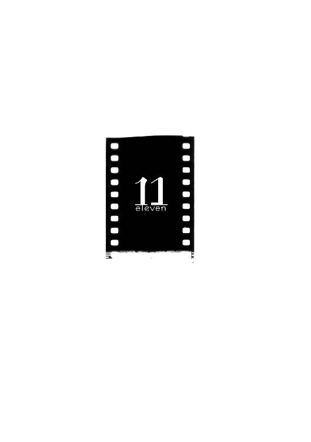
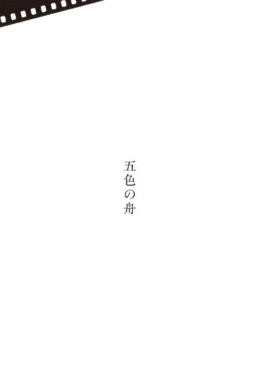
下駄屋に生まれたというくだんのために、僕らは一家総出で岩国に出向いた。もちろん買い取るためだ。官憲からの申渡しで派手な興行ができなくなって久しかったが、秘かな催しに僕らを呼びつける旦那の数は、むしろ増えていた。国じゅうが惨憺たる状態にあって、生半可な涙や笑いが受けようはずもない。人々のまなざしを爛々とさせられるのは、もはや僕らのような、圧倒的に惨めな存在だけだった。
一夜の興行としては充分すぎる報酬をもらえたから、いつまで続くともつかない戦時にあって、僕らは未だ飢えていなかった。空襲への恐怖も薄かった。河に舫った舟で暮らしている僕らは、なにか起きたらすぐさま別の街へと逃げられるような心地でいた。
かりに飢えていたとしても、僕らのお父さんはなんとしてもくだんを買うべく算段したことだろう。そんな凄まじい怪物を一座に迎えられたなら、生きている間だけでも購入金の何倍、何十倍を稼ぎ出してくれるか知れない。死んだら死んだで骨だけの見世物にも、標本として商品にもなる。砕いて粉にすれば薬になるだろう。
もっとも、くだんは長くは生きないという噂に対して、それは（面倒見が悪いのだ）というのがお父さんの見解だった。（私は昭助も桜も死なせはしなかった）
一寸法師で怪力の昭助兄さんは、顔に濡れ紙を貼られた赤ん坊の死体としてお父さんの前に現れて、拾われた。当時のお父さんは、先を失った脚に義足を縛りつけ、杖に縋って歩きながら、よく身投げの場所を探していた。ある晩、杖が折れて河原に転げ落ちて、大切な顔に怪我をした。捨て鉢になったお父さんは、すぐさまこの世におさらばするべく、水際に向かって躄っていった。その途中、草陰に兄さんを見つけた。
乾きかけている紙を剝がしてやったが、赤ん坊は身じろぎひとつしなかった。木彫りの仏さんのようだった。愛らしさに思わず抱き上げ、そのずっしりした重みに驚いた。これは特別な子だと分かった。その身はすっかり冷たくなっていたけれど、ふたたび地べたに返す気がしなくなった。
お父さんは思った。このまま朝まで暖め続けても息を吹き返さなければ、ともに水に入ろう。さきはこの子に導いてもらおう。もし息をしたなら、一緒にこちらに留まろう。
河原に朝の光が届いた瞬間、兄さんの身がびんと反り返った。
それからもお父さんの脱疽は進み、すでに切っていた脚の残りも、また反対の脚もほとんど失ってしまったけれど、自分から死ぬことは考えなくなった。僕らのよく知る、今のお父さんになっていった。
桜は、旧家の座敷牢で死にかけていた。噂を聞きつけたお父さんは、十三になっていた兄さんに背負われて、屋敷に通いつめた。そんな娘などいるか、とけんもほろろにされるほど、ここには必ずいると確信したそうだ。
塩をまかれながら半年も通って、今日はなにか家の気配がおかしいと感じていた晩、とつぜん対面をゆるされた。噂どおりの娘たちだった。しかし腰から下を分け合っていたもうひとりの桜は、すでに息をひきとっていた。
（切り離さないと、もう片方も死ぬ）脱疽の経験から、そうお父さんは桜の両親に教えた。（この子を買わせてください。私が医者に診せます）
両親は首を縦にふらない。旧家の意地で血迷っている。子を売るくらいなら、いま目の前で死なせたいと思っている。
（では、もう死んだでいいではないですか。私が弔います。それとも、存在しなかった娘の葬式を出しますか。貴方がたに出せますか）
お父さんは自動車を呼ばせて、死んだ上半身がくっついたままの桜を蒲団袋に詰め、犬飼先生の許に運んだ。せめて遺体としての体裁がととのえばいいとの条件で、先生は施術を引き受けた。死んだ側の上半身を切り離し、はみ出した内臓を縫い、たっぷりと膏薬を詰めて皮膚も縫った。
桜は生き延びた。骨の形がもうひとりが付いていた頃のままなので、前から見ると体がくの字に曲がっている。お父さんは桜の腰に、作りもののもうひとりを縛り付けてお客に覧せようとしたが、彼女の芝居が下手で話にならなかった。
仕方なく体じゅうに鱗を描いて蛇女ということにして、蛙のまる吞みを覚えさせた。もちろんあとで吐き出すのだ。大抵、蛙はすでに死んでいるが、たまに生きたまま出てきて、跳ねて逃げていくのもいる。
こちらはうまくいった。今では桜の鱗は立派な彫り物で、お父さんや僕が毎度描きなおしてやる手間はない。
姿を現したあとは蛙を吞む以外にやることがなかった桜の、最近のもうひとつの大仕事は、別料金を払ったお客にまぐわいを見せることだ。お父さんは最初、昭助兄さんに抱かせようとした。ところが兄さんの一物が並外れて大きいものだから、ほとが裂けてしまった。そこで僕の仕事になった。
眺めるだけではなく自分で桜を抱きたがって、より大金をちらつかせるお客も少なくない。でもお父さんは決して頷かない。あとで桜が相手に似た子を産みでもしたら、具合が悪い。桜か僕か、それとも両方に似た子がいつか生まれるのを望んでいる。それなら一生、食べるに困らないから。
物心がついたときには押入れの闇にいた僕の、最初の外の記憶は、河原を吹く風と、満天の星空と、生い茂った草の向こうで息をしているようにゆったりと沈んでは浮かぶ、大きな舟の影だ。そのときは、とても大きく見えた。
そこが新しい僕の世界だということはすぐに理解できたし、そう考えたとおり、朝になって僕を見つけたお父さんは、快く舟の上に導いてくれた。
お父さんは脚無しだが、僕は生まれつきの腕無しで、指は肩から生えている。でも自分と人との差異を意識しはじめたのは、お父さんの期待どおり見世物としてお客を喜ばせられるようになってからだ。なにしろ犬飼先生が気付くまで、家族も僕自身も、僕の耳が聞えないのを知らなかったほどだ。ちゃんと命令が伝わるものだから、ただ極度に無口な子と思われていた。
僕は僕で、なんで桜は家族と喋らないのか、なぜ僕にだけはときたま、人とは違った調子で喋りかけてくるのか、不思議でならなかった。生まれてから長らく誰にも話しかけられなかった桜は、死んでしまったもうひとりとの間にしか通じない、特別な言葉を持っていた。それが分かるのは、音に関係なく生きている僕だけだった。
僕らのいちばん新しい家族は、牛女の清子さんだ。みずから望んで舟に乗り込んできた。兄さんよりも年上で、世間をよく知っている。人と違うところをすこしは隠しておけたお蔭で、学校に通った経験さえあるのだ。
くだんのこともよく知っていて、それを一座に迎えるのを、ひどく嫌がっていた。本物の人と牛とのあいのこが来てしまった日には、本当は牛になんか似てやしない自分は、居場所を失うと思っている。
くだんは滅多に生まれないのだと、清子さんは教えてくれた。百年に一度だという。
牛だが人の顔をしていて、生まれつきよく喋るのだそうだ。
そして昔のことであれ未来のことであれ、本当のことしか言わないそうだ。
リヤカーを牽いているのは、力持ちの昭助兄さんだ。荷台に敷かれた藁蒲団の上に、日除けの傘を差したお父さんと清子さんがいる。清子さんは膝の関節が後ろ前なので、長くは歩けない。
彼女が元から牛に近いのはそこだけで、あとは犬飼先生に髪のなかに埋め込んでもらった角や、内をつなげた鼻の穴に通した縄や、啼き声や、ぶらぶらさせた大きな乳で、牛から生まれた人間のようなふりをするのだ。今は縄がなく、角も乳も膝も隠しているから、良家の奥さんが疲れて両脚を投げ出しているようにしか見えない。
かたわらを桜と僕が歩いている。僕はいつでも裸足だが、桜は、親切な旦那が買い与えてくれた革草履を誇らしげにしている。この旦那は桜のことを本当に好いていて、蛇女でもいいから妾にしたいと持参金までさげてきた。お父さんは断り、あとで僕らにこう言った。（私たちをまるごと買い取らないかぎり、小屋のなかでの幻は手に入らないよ。それをあの方はご存じない）
清子さんはリヤカーの上で、まだお父さんを説得しようとしている。（くだんは気味が悪いわ。未来も言い当てるのよ。お前は死ぬまで貧乏だとか、いつごろ死ぬって教えられるかもしれないのに、そんなことにお金を払うお客がいると思う？）
（たくさんいるだろうね）
（じゃあお父さんは、自分がいつ死ぬと知ったら嬉しいの）
（目前のこととして言われたなら動揺はするだろうが、それでも、聞かねば良かったとは思うまいね。清子をからかっているんじゃないんだよ。私に自分の寿命が分かれば、お前たちに遺すべきものを、どのくらいの間に準備すればいいかも分かるじゃないか）
夏の遠出は一苦労だ。とりわけ僕と桜は、見世物としての価値を下げないよう、どんなに暑くとも一張羅を着込んで、僕はただ懐手をしているように、桜は肌を見せぬようにしていないといけない。そのうえリヤカーまで重いときて、僕らの歩みはひどく遅かった。朝のうちに出立したにもかかわらず、岩国までには野宿をはさまねばならず、やっと街場に着いたのは、翌日の昼近くだった。
お父さんと兄さんだけなら半分の時間で済んだろうに、それでもお父さんが一家総出を望んだのは、内心ではどこか、くだんを怖がっていたのだろうと今にして思う。だから、たとえ買えるとなっても、最後の答は全員で出したかったのではないかと。
下駄屋が乳を採るために大切にしてきた牝牛が、種牛を乗せてもいないのに急に産んだのだと聞いた。（きっと下駄屋の親爺か若いのが、種を入れたんだろう）とお父さんは笑う。それでくだんを産ませたのだとしたら、大したお手柄だ。
乞食に教えてもらった坂道を上っていくと、それらしき一軒の前に、軍の自動車が連なっているのが見えてきた。帆布で荷台を被ったトラックもあり、けっこうな数の軍人や軍属がそれらの間を行き来している。
（さきを越された。くだんは軍に持っていかれる）そう口惜しそうに叫んだお父さんだったが、やがて吐息をもらして、（未来を予言するというのだから、考えてみれば無理もない。大枚を叩いたあとで接収されるよりはましか。幸運だったと思うことにしよう）
（お父さん、犬飼先生だ）兄さんが叫んで、（あそこ、あそこ）と指を差す。
（先生）（犬飼先生）僕らは懸命に坂を上がった。追い払おうと、下士たちが迫ってくると、かえって盛んに、（先生、先生）（犬飼さま！）
こちらに気付いた先生が、（患者だ）と叫びながら下士たちを追い越した。普通の人は罹らない病気に悩まされがちな僕らを、ほかの患者がいないときに限られるものの、快く診てくれる先生だ。今は、元々の専門だった黴菌への知識を買われ、兵器補給廠の研究室に勤めている。
兵隊たちの手前だからか、その日の先生は芝居がかって見えるほど厳めしかった。（どうしてここに君たちがいる。なにをしに来た）
（くだんを買いに来たのです）とお父さんが答える。
（あれは噂に過ぎない。諦めて帰りたまえ）
（ではあのトラックは？）
（特別なものは乗っていない。不要な牛を実験用に買い取っただけだ）
（分かりました、そう納得いたします）そうお父さんは頷いたものの、相手への気易さから微笑まじりに、（犬飼さま、ひとつだけ教えてください、くだんは本当に喋るのですか）
（私に分かるか）と、先生は冷水を浴びせるように返してきた。（そんな生き物は世に存在しないというのに）
お父さんは唇をむすんで先生を見つめた。先生も見つめ返した。
（そうでした）
お父さんが引き下がると、先生はようやっと表情をゆるめて、
（ここまで来られたのだから、みな体調は悪くないようだ）
（お蔭さまで）
（道中、気をつけて帰りたまえ）
......土埃を巻き上げてトラックが坂を下っていく。犬飼先生を乗せた自動車もそれに続き、居残っていた下士や軍属も走り去った。見送っていた主人や家人たちが、門口を閉ざしはじめる。
（本当のところはどうなんだって、あの人たちに訊いてみようか）兄さんがお父さんを振り返る。
（どうせ口止めされているだろう）
僕らもまた、坂道を下りはじめた。またこれまでどおりの日々に帰っていくのだ。お父さんの落胆は察しながらも、正直なところ僕はほっとしていた。
くだんは得られそうもないとなり、気持ちに余裕の生まれた清子さんが、さっきまでとは一変、その姿を拝めなかったことを残念がっている。（いくら兵隊さんたちの手前とはいえ、犬飼先生の態度は変だった。やっぱりあのトラックに乗っていたのよ。私たちが苦労してやって来たのは分かってるんだから、後学のために覗かせてくれても良さそうなものじゃない）
（後学って、清子はくだんから何を教わりたかったんだい）とお父さん。
（ふるまいや声や、いくらでも為になるわ。本物のあいのこなんだから）
（そういう話か。私はまた、お前も自分の寿命を知りたいのかと思ったよ）
（それは御免）
（たとえくだんを買えたとしても、私と桜以外は近付かせないつもりだった。桜なら、くだんの言葉も通じないだろうからね）
（和ちゃんにも聞えないわ）
（和郎は最も遠ざけないといけない。声が聞えなくとも人がなにを言っているのか解る子なんだから、くだんと目が合っただけでも、きっとおかしくなってしまうよ）
このお父さんの言葉に、僕は震え上がった。本当にトラックにくだんが乗っていたんだとしたら、これは大変なことになったと思った。
お父さんが犬飼先生と話している最中、僕はちらちら、トラックの荷台へと視線を向けていた。なにとはなし、呼ばれているような気がしたのだ。格別な呼ばれ方ではなくて、知らない人から不意に（腕無し）とか（化け物）と呼ばれたときのような、つまり僕にとっては普通な感じだった。
帆布の薄い隙間に、荷台を囲むあおり板が覗いている。内には檻でも収まっているのか、ただ黄色っぽい薄闇だけがあった。何度も見直しているうち、ふと、その闇が濃くなった。確かだ。
それでいて、小さな水たまりのような一点だけが、外の光を撥ね返していた。
本当に乗っていたのなら、僕を見ているくだんの眼だったことになる。
僕は同じような夢ばかりみるようになった。くだんとは無関係な夢だったが、それが続くほど、くだんの仕業に違いないという確信は深まった。
海の夢だった。兄さんや桜と浅蜊や石蓴を採りにいく、いつもの海岸ではなく、ずっと沖合の夢だ。
家族はみな舟上にいる。半開きにされた雨除けの被いの向こうには、低い曇り空、黒ずんだ波、そして白い泡。どの方角を向いても同じ景色だった。僕らは舟ごと、海原を漂っている。
どこか遠くを目指しているようだが、僕らの舟に帆を掛ける柱はなく、誰かが漕いでいる様子もない。ひたすら波まかせの、いつどう終わるとも知れない舟旅の途上に、僕らはいた。
遠い波間にふと、こちらと似たような舟影が現れる。（ほかの舟だ）（舟？）とみな驚いて被いの外に顔を突き出す。とても珍しい事態らしい。
さらに波の悪戯か、舟同士が急接近する。ともに急な川でも下っているかのように、相手はみるみる迫ってくる。いざ間近にすると、こちらより遥かに立派な舟だ。長さも幅も倍はありそうだ。
激突を避けるべく、昭助兄さんが竹竿を構えて舳先に立つ。二艘はなお距離を縮め、とうとう兄さんの竹竿がつっかえる。竿が激しく撓る。兄さんが跳ね飛ばされやしまいかと、僕は心配になる。
（なに、滅多にあることじゃないさ）竿と格闘しながらも、兄さんはこの椿事を楽しんでいるようだ。
（こんなに近付くなんてねえ）と清子さんが歌うように言う。
先方の船頭が、なにかをこちらに投げようとしているのに気付いて、僕も雨除けから出ていく。投げ込まれてみれば襤褸にくるまれた石で、それに赤い縄を縛り付けてある。ぶつかって舟が破損する前に、引き合って互いを繫留しようという提案だろう。
僕は縄を足で押さえ込み、口で結び目をほどきはじめる。
お父さんが躄ってくる。繫留を手伝ってくれるのだと思い、僕は場所を空ける。
僕の予想ははずれる。お父さんは手早く縄をほどくや、その端で自分の身を縛ってしまう。（今を逃したら、こんな機は二度と巡ってこない）
一瞬、お父さんは僕に笑いかける。それから海に飛び込む。舟同士がまた離れはじめる。
新しい舟に引き上げられていくお父さんを見つめながら、僕は、またこうなってしまった、と嘆息する。しばらく泣く。別の夢では清子さんが、また別の夢では昭助兄さんが、同じようにして海に飛び込んだ。そして新しい舟に引き上げられるのだった。
夢には、より奇妙な続きがある。相手の舟影が波間に消えてしまうまで見つめたあと、僕がしょんぼりと雨除けの下に戻っていくと、そこにはちゃんと家族全員が揃っている。ほかの舟とぶつかりかけたことなど噓のように、それ以前となんら変わらぬ、物静かな風情で。
さっきのは、どこか余所の世界での出来事だったらしい。僕はそう納得して、ほっとする。かといって去っていったほうの家族のことも、忘れてはいない。忘れられるはずがない。
僕は夢を数えていた。四十九回続いて、この明け方には五十回めをみるのだろうと思っていた月の明るい晩、不意に犬飼先生が僕らの舟を訪れた。
（夜分に失礼するよ。雪之助をお借りしたい）
お父さんのことだ。脱疽にかかる以前は旅芝居の花形だった。そして犬飼先生はその時代、一番の御贔屓だったのだそうだ。京都より西の興行なら、必ず初日に駆けつけてくれたという。
先生の態度には、岩国で会ったときの厳めしさとはまた違う、どこか悲しげな重苦しさが漂っていた。（折り入っての話がある。ちょっと医院まで来てもらえまいか。上に車を待たせてある）
（診察でしょうか）
（そうではない。ただ話をするだけだ）
（では、いまここで済ませてはいただけませんか）すでに眠りかけていたお父さんは、外出を億劫がった。（もしご内密なら、子供たちは小屋の方へ払います）
興行に必要な資材や道具は、近くの橋の下の掘建て小屋にしまってある。僕らの別宅といったところだが、河が増すと床上まで水が上がってくるので、寝泊まりには向かない。
（無理をさせたくはないのだが）先生はちらりと僕を見た。（和郎はどのくらいの距離までなら、その）
（人の心を読めるか、でございますか）
（うん）
（私にも見当がつきません。傍にいるものと思い込んで呼びかけたら、河原から上がってくることもあります。しかし口もきけませんし、読み書きもできませんから、誰に伝わる気遣いもございません）
お父さんはそう言ったが、本当は桜とだったら話せる。隠しているつもりはなかった。ふたりとも周囲にそう説明できないだけだった。
先生はかぶりを振って、（やはり来てもらいたい）
（昭助は同行させても？ さもないと犬飼さまにおぶっていただくことに）
（同行は構わないが、話の間は外で待たせてほしい）
お父さんは了承し、留守を頼もうとして清子さんを呼んだ。どこからも返事がない。こっそり出掛けてしまったようだ。お父さんは僕に留守番を頼んで、寝入っていた昭助兄さんを揺り起こした。
兄さんは生返事をして雨除けの外に出ていき、河に小便をしてから戻ってきた。お父さんを背負ってからも、はんぶん眠っているように見えた。
三人が舟を降りて河原を横切り、土手を上がっていくのを、僕はじっと見送った。
「和郎さん」
呼びかけられて振り向くと、とうに眠ったものと思っていた桜が、頭を起こしてこっちを見ていた。
「お父さん、ほかの舟に乗ってしまう？」
そのとき悟った。桜もまた、僕と同じ夢をみ続けてきたことを。桜もくだんと目が合ったのだ。
僕は舟から飛び出し、土手を駆け上がった。すぐ下の道路に、走り去っていく自動車のランプが見えた。追い付くべくもない灯りを追って、僕は夜道を駆けた。裸も同然の格好だったが、そんなことは忘れていた。
いま引き留めなかったら、お父さんはほかの舟に移ってしまう。そのあとも僕らの舟に姿を留めてくれるかもしれないが、それはもはや、これまでのお父さんではないのだ。
犬飼医院の位置は分かっている。自動車を見失ってからは、思いつくかぎりの近道をとった。月の下を駆け抜けていく腕の無い影に、通行者は足を竦め、自動車は急停止した。どこか誇らしい思いが胸に満ちはじめる。誰しもが足を止めるのは、僕が特別な子供だからだ。
特別な子供が、特別なお父さんのために走っているからだ。
医院の玄関先に人影は見えなかった。庭に入り、隣家とを隔てる木塀が照らされている箇所を見出して、その隙間に入っていく。あかりは間違いなく、お父さんの気配を含んでいた。
（和郎じゃないか）と後ろから呼ばれて、身を竦める。昭助兄さんだった。（急患かと思って灯籠の陰に隠れていたよ。追いかけてきたのか。どうした）
僕は窓の下まで、ぴょんぴょんと後退って見せた。人を招くときの合図である。
（覗きたいのか）
頷く。
（見つかるなよ。俺まで叱られるから）
兄さんも窓の下に来た。差し出された掌に足を掛け、その肩に上がる。
診察室の続きの、犬飼先生の居室だった。僕がちょうど見下ろせる位置に長椅子があり、先生とお父さんが、後ろ向きに隣り合っている。
（とどのつまり、どういう生き物であると、犬飼さまはお考えなので？）
（分からない。私の知識の及ぶ範囲ではない）
（では、それこそ、真実しか語らないというくだんならば、問えば正直に教えてくれるのではありませんか）
（もちろん何度も訊いたし、説明もされた。しかし話の基底が違いすぎて、論理的に理解するのが難しいのだ。無理に私たちの科学で割り切ろうとすれば、牛に寄生している何らかに過ぎない、ということになろう。しかしそれが学習してもいない人語で、我々の歴史の仔細を語る、まったく未知の現象ということになり、所詮は謎だらけだ）
（そんな謎めいた獣の言い分を、軍の上層は真剣に信じているのですね）
（鵜吞みではない。くだんの弁には上層部しか知らぬ事実が、あまりにも多く含まれているのだ。この世界の未来を知るからこそ、まるで千里眼のように、いまどこで何が起きているのか悟れるというわけだ）
（たとえば、たとえばですが、上層部に曲者がいて、周囲を意の儘にするため、からくりを弄しているといった可能性は）
（何度も言ってきたとおり、くだんは確かに生きている。心臓は鼓動し、糞も小便も垂れ、怪我をすれば血を流す。そんなからくりが作れるものか）
（何を食べるのですか）
（仔牛と同じだ。牛の乳をやたらと欲しがる。あとは大概、鼾をかいて眠っている）
（その同じ口が、やがて本土に恐るべき爆弾が落ちると言っているのですね、都市がまるごと消えてしまうような。そして日本は負けると）
（あくまでこの世界での話だ。すでに上層のほとんどが補給廠を訪れ、くだんに導かれて別の世界に逃げていったよ、日本が勝ち残る世界に。私もそろそろ腹を括るべきかと思う。次にお前と会うとき、今と同じ私であるという自信はない）
（そこが分からないのでございます。犬飼さまが別の世界にお逃げになったとして、でも相変わらずこちらの世界にも犬飼さまはおられる。さっきそう仰有った。いったいそれで、犬飼さまの世界が変わったということになるのでしょうか）
（心の置きどころの問題、と、そう解釈しているよ。こう例えたらどうだろう。雪之助が脱疽に罹らず、花形でい続けられた世界があるとしよう。想像してみることはあろうね。そちらこそ本当の自分であって、脱疽のこちらは幻に過ぎないと、もしお前が確信できたなら、あとはそれこそ夢のなかにいるように、怪我をしても病気をしても痛くも苦しくもない。かりそめと思える痛み苦しみを、人は深刻には捉えないものだ。死も恐ろしくない。死んだら、次は本当の自分として目覚めるのだろうから）
（なにごとも気の持ちよう。そういうお話にしか、私には聞えません）
（私にだってそう聞える。しかしくだんがそう語るのだ、人智を超えた存在が。雪之助、この世界は過酷なうえ、医術にも限界がある。私はなんとしてでも、どこの世界ででも、お前を長く生かしたい）先生はお父さんを抱き寄せた。
（くだんは、確かに導いてくれるのですか）
（私は信じる。信じることにした）
先生はお父さんに接吻しはじめ、あとはまともな会話を成さなかった。居た堪れなくなった僕は、兄さんの肩から飛び降りた。
やはり僕と桜は、くだんから何かを受け取ったらしい。窓の向こうのやりとりには分からない言葉も多々あったが、大筋は理解できた。それでいて驚きを感じなかったのは、すでに僕らが別なかたちで、その内容を知っていたからだ。
お父さんを待たねばならない兄さんを残して、僕はふたたび河まで走った。いざ辿り着くと、舟の上に戻るのが怖くなった。きっと桜は起きたまま、僕の報告を待っていることだろう。最悪の結果を報告する勇気が、僕にはまだなかった。
舟の横を行き過ぎ、橋の下の掘建て小屋に向かった。しばらくその内に籠もって、気持ちを整理したかった。帰ってきたお父さんと兄さんが僕を探すとして、最初に覗いてみるのはあの小屋だろう。だからたとえ寝入ってしまっても、余計な心配をかけずに済む。
やがて清子さんと鉢合わせした。
（あら和ちゃん、小屋に行くの）
問われ、近付いていくと、湯を浴びてきた人独特の、なんとも言えない良い香りが漂ってきた。
僕の表情の変化に気付いたのか、彼女は急に態度を変え、（なに。お父さんに告げ口でもする？ お前がどうやって？）とせせら笑った。
桜を抱きたがる旦那も跡を絶たないが、それは清子さんにしても同じだった。彼女がこっそりと彼らに声をかけ、陰で身をひさいでいるのに気付いたお父さんは、二度三度、激しい調子で彼女を叱責した。
でも清子さんはやめない。お金が好きなのだ。それこそくだんが買えそうなほどたくさんのお金を、草陰で嬉しそうに数えているのを見たことがある。ふだんどこに隠しているのかは、誰も知らない。
僕らはいったん離れたが、（ちょっと和ちゃん）とまた呼び止められた。（ちょっとこっち向きなさい。お向きなさい。聞えてる？）
僕は振り返り、頷いた。
（今は私を莫迦にしているがいいよ。でも私がこうして必死に稼いでいるのは、お前を聾学校にやるお金だからね）
弟分に侮られまいとしての口から出任せだったのかもしれないが、ともかく彼女が発してきた言葉のうち、これほどまでに僕を啞然とさせたものはなかった。
（たぶん家族のなかで、お前がいちばん頭がいい。だからご時世が変わったら、お前は学校に行くんだよ、私が貯めたお金で）
僕はかぶりを振った。よりによってその晩だ。お前も舟を降りろと言われているようにしか感じなかった。冗談ではなかった。
（どうせそのときは来る。そのときじっくりと考えてみるがいい、自分の頭でね。お父さんだって、きっと長くはないんだから）
いっそう強くかぶりを振って、僕は小屋へと駆けた。そして翌朝兄さんが探しにくるまで、そのなかで踞って眠っていた。
（俺やお父さんに放っとかれて、ふて腐れてたのか？ あのあと酒をご馳走になって、蒲団で寝かせてもらったんだよ。お父さんもそうしろって）
兄さんはすまなそうに言い訳したが、べつに羨ましくはなかった。家族が揃った舟の上のほうが寝心地がいいに決まっている。
陽の下に出てしばらくしてから、五十回めの夢をみなかったことに気が付いた。
犬飼先生は頻繁にお父さんを連れ出すようになった。お父さんのほうも億劫がらなかったし、酒にありつきたい昭助兄さんに至っては、お伴が楽しみでならない様子だった。
ふたりが帰ってくるたび、僕と桜は怖々とお父さんのふるまいや顔色を窺っては、出掛ける前と変わりないかどうかを討議した。しかし、たぶん変わっていない、という確証のない期待ぶくみの結論に至るばかりだった。念のため、兄さんに変化がないかどうかも僕らは観察していた。こちらはお父さん以上に、まったく変わるところなく見えた。
いま何が起きているのかを兄さんと清子さんに伝えるべく、僕と桜はそのための手段を検討した。ふたりとも喋れないし、読み書きもできない。読み書きを学びたくとも、人にそう伝えるすべを持たない。
しかし僕には絵が描ける。足の指で筆を握れば、そればかりはそんじょそこらの手のある人々より、遥かに上手いという自負があった。桜は耳が聞える。僕とは違い、音による会話とはどういったものなのか、想像ではなく事実として知っている。真似をする余地がある。
「できるとは思えない」と桜は及び腰だった。「自分でも何度も試してきた。でも私の舌はほかの人たちのようには動かない。動かし方が分からない」
昭助兄さんや僕のように、清子さんのように、たんに特別に生まれついたというのではなく、二人として生まれたあとで半分にされてしまった桜には、生来無いところをほかが勝手に補ってしまうような、いわば野生の逞しさがない。蛙を吞もうが彫り物を入れようが、それらは見世物の蛇女を補うだけのものであって、桜を補ってきたわけではなかった。
彼女の賛同を待たずに、僕は小屋に籠もっては、不要な板きれに絵を描くようになった。海原に浮かぶ僕らの舟。近付いてくる別の舟。それに移るお父さん。夢の情景を幾つにも分けて描いて、かつて昭助兄さんに連れられて遠くから眺めた、紙芝居のようなものに仕立てようとしていた。
桜の決意を僕がじかに聞くことはなかったが、彼女なり陰での努力を始めていることは、家族が喋っているさまを見つめる、そのまなざしから明らかだった。ある夕方、兄さんと僕が河原で炊事をしているとき、おもむろに舟から降りてきて、
「聞いていて」と僕に呼びかけた。
（どうした桜。腹でも痛いのか）と兄さんが心配して尋ねる。
それほどに、桜は緊張で青ざめていた。ひょっこひょっこと僕らの近くまで来ると、振り返って舟を指差して、（舟）と言った。
どの程度の出来映えだったのか、僕にはそれを知るすべがない。兄さんはきょとんとしていた。桜の顔に落胆の色がひろがる。俯く。そのうち兄さんは、なにか思い出したような素振りで舟に戻ってしまった。僕と桜は河原に取り残された。桜は泣きはじめた。
奇妙に長い静寂のあと、（桜）という呼びかけに顔をあげると、お父さんを背負った兄さんが、舟から降りかけていた。
後ろに清子さんもいた。（桜、喋ったんだって？）
（舟と言ったよ。言ったよな？ お父さんにも聞かせてあげてくれ）
そう明るく兄さんに促されて、桜はかろうじて気をとりなおし、やがて再び、浮き世の言葉を発したのだった。
（舟）と。
秘かな練習の成果は、それだけではなかった。次いでお父さんを指差して（お父さん）と言った。
（お父さん、聞えたかい）
（うん、聞えた）
（俺は？ 俺は？）
（昭助さん）と桜は言い、さらに清子さんと僕とを続けて指しながら、（清子さん、和郎さん）
兄さんはお父さんを背負ったまま小躍りした。（この人は？）
（お父さん）
（俺は？）
（昭助さん）
（この人は？）
（清子さん）
（あいつは？）
（和郎さん）
（あれは？）
（舟）
調子に乗った兄さんは、空や対岸や河原の上のあちこちを指しては（あれは？）（これは？）とも尋ねたが、桜は笑いながらかぶりを振った。最初は、五つだけだった。お父さん。昭助さん。清子さん。和郎さん。舟。
他方、僕の制作も順調だった。絵具の種類が乏しかったため彩色には不満足ながら、細長い板二枚続きの、ちょっとした絵物語のていを成すに至っていた。まず桜に見せると、彼女の夢もおおむねその通りだったと言う。
僕らは小屋に昭助兄さんを招いた。絵を見せた。
兄さんは僕の画力を称賛してくれた。桜が絵に指を添えては言葉を発するたび、彼女の頭を撫でたり抱き締めたりもした。しかし残念ながら、僕らの本来の目的は果たしえなかった。兄さんは僕らの一連の行動を、新しい遊びとしか捉えてくれなかった。単語を羅列するばかりの桜の言語能力は、煩瑣な概念の説明にはあまりにも不向きだったのだ。
彼女は癇癪を起こし、また泣きはじめた。絵が拙いせいだと僕は彼女を慰め、描き直しを約束した。
約束が果たされるときは訪れなかった。少なくとも僕の認識においては。
その夕方、また犬飼先生がやって来たのだ。そして僕らを呼び集め、こう言った。（岩国ではすまなかった。くだんは補給廠にいるよ。さあ、みんなで会いにいこう。それが君らのお父さんの希望だ）と。
ぞろぞろと土手を上がっていく途中、例の、不意に呼びかけられたような感覚があって、僕は河のほうを振り向いた。しかし眼下にひろがっているのは、草が揺れ、河面が揺れ、僕らの舟がゆったりと上下しているだけの、普段と変わらぬ景色だった。
繕いものが得意な清子さんが、薄い箇所を見つけては新しい布を縫いつけてきた雨除けが、強い夕陽に照らされ、戦争がひどくなる前に物陰から覗いたことしかない縁日の参道のような、なんとも言えない色彩の饗宴をなしていた。自分が最も満たされた気持ちにつつまれるのは、この土手からあの舟を見下ろすときだったことを、僕はあらためて思い出した。
犬飼医院で、先生とその腹心らしい若い兵士の手により、僕らは輸送用の木箱一つに詰め込まれた。お父さんと僕に腕や脚が無く、昭助兄さんは一寸法師、桜も最初から体が曲がっているから、辛うじて入れたようなもので、犬飼先生とその家族だったら二人で限界だったろう。
肌という肌がすべて家族と密着しているような状態で、持ち上げられ、落とされ、横倒され、また横倒され、延々と揺さぶられ、落とされ、揺られ、また落とされ、長いこと待たされ......ようやっと僕らは釘抜きの音を聞いた。箱の一方が開き、僕らは外に這い出た。さっきまで一つの肉塊のようだったのが、五つの肉体へと戻った。
はじめ戸外かと思ったのだが、塀だと感じていたものを見上げていくと、ずいぶんな高さに天井の梁があった。あちこちに大量の木箱が積まれている。全貌が分からないほど広大な倉庫の片隅に、僕らはいた。
いっそう隅に、まるで僕らが興行のために建てるような掘建てがあり、その周囲にだけ電灯が点っていた。
（窮屈な思いをさせたね。くだんはあのなかだ）と先生が僕らに言った。（そろそろ夜が冷えてくるし、それなりに臭いもあるんで、急拵えしたんだよ）
兵士が筵をまくり、その次の覆いもまくって電灯を点す。柵の向こうにくだんがいた。膝を折って藁の上に寝そべっていた。想像していたよりずっと大きかった。体も、顔も。
人の顔をしているとは、僕は感じなかった。赤い、鬼の面に似ていた。褐色の毛皮を割るように、それが肩の下ににゅっと生えているさまは不気味だったが、必ずしも恐ろしくはなかった。眠たげに瞼を動かしている大きな眼と、固くむすばれた口許が、一切を諦めているような静けさを湛えていた。
（話をしても？）
お父さんが先生に問い、先生も頷いたが、
（お久し振り）と、くだんのほうがさきに挨拶してきた。低く深い声だった。（岩国でお会いして以来ですね）
（私たちを見ていたのか。憶えているのか）とお父さんが驚く。
（トラックの荷台の、被いの隙間からお姿を拝見しました。どこへなりとお連れしましょう。そして私は殺されましょう）
僕らは顔を見合わせた。
犬飼先生が問う。（誰がお前を殺すというのだ）
くだんはかしらを巡らせ、（そちらの若い兵隊さんです。私のことを、戦意を喪失させるために敵国から送り込まれた兵器であると、本気で考えておられます）
（斐坂くん、事実か）
兵士はぎょっと目を見開いたまま、直立不動となった。
（本当にそういう腹積もりだったのか）先生が重ねて訊く。
すると兵士は震え声で、（僭越ながら、只今の弁も、我々の攪乱が目的かと）
（決して独断するな。くだんを殺してはならん。返事は？）
（はい）
（雪之助、くだんに問いたいことがあれば）先生はそこで言葉を選んだ。（手短に）
お父さんは昭助兄さんに指示して、自分をくだんに近付けさせた。（お前は真実しか語らないと聞いた）
（あえて噓偽りを申し上げることはありません。そうすべき理由が私にはありませんから）
（その言葉を信じて問おう。お前はなぜ、私たちをほかの世界に導こうとするんだい？）
（導こうという意図はありません。私はそういう装置であると、皆さんにご説明しているだけです）
（装置？ お前は機械なのか）
（いま問われました意味においては、機械ではなく生物です。しかし自然繁殖はしません。個体ごと人手によって生まれ、そして死にます）
（人の手で創られた生き物ということか）
（いかにも）
（それは未来での話かい）
（内海を巡回する航路があるとします。すると海上の一点は、船の前とも後ろともつきません。しかし私の生まれた座標が、ここからは未来と感じられやすい、というふうには申せましょう）
（それが歴史の姿なのか。ぐるぐると内海を巡るというのが）
（単純な円環とは限りませんが、どうあれ内海からは出られません。正確に言えば、外のことを私たちは感知できません。しかし航路は無数に存在します。そのさまを俯瞰し、意図的な乗換えをおこなうための装置が、私です）
（未来の人々が自分たちのためにお前を拵えたのだとしたら、なぜお前は私たちの前に現れ、今も留まっているんだろう）
（私は最初から海上の一点を漂っているに過ぎないのです。傍をさまざまな船が通過していきます）
（そのうちの一艘が、この私たちの歴史だというのだね）
（いかにも）
（凄まじい爆弾が落ちて、日本は負けると聞いた）
（この航路においては、その通りです）
（日本人は全滅かい）
（いいえ、全滅はしません）
（では）お父さんは大きく息をして、（ここにいる私たちのうち、いちばん早く死ぬのは誰だろう）
（犬飼先生です）
お父さんは愕然と、先生のほうを向いた。
（心配するな）と先生が硬い表情で応じる。（黙っていたが、私もすでに別の世界に逃げている）
僕がまたくだんに視線を戻した瞬間、その額にぽっと穴が生じた。くだんが撃たれた。そう気付いて振り返ると、兵士が拳銃を握ったまま身を震わせていた。
（斐坂、貴様）
犬飼先生が摑みかからんばかりの勢いで迫り、ふと後ろざまにひっくり返った。先生も撃たれたのだ。昭助兄さんが慌ててお父さんを下ろして、兵士に体当たりする。兵士は掘建ての壁の一枚ごと吹っ飛ばされた。
（さあ参りましょう）と、くだんが落ち着きはらった調子で言う。（私はまだしばらく死にません）
（次は誰だ。次に死ぬのは）
（斐坂さんです。いま私を撃った兵隊さんです）
（次は）
（腕の無い坊ちゃんと、彫り物のお嬢さんです。同じ爆弾で）
（和郎、桜）お父さんは僕らを見上げ、切羽詰まった調子で、（行きなさい、急いで）
（本当は分かっているのですが、ご納得いただくため、その手続きとしてお尋ねします。おふたりをどういった世界にお連れしましょうか）
（和郎が学校に行けるところ）と清子さんが叫んだ。
（ふたりが長く幸せに生きられる世界だ。こんな要望でいいのかい）
「みんなも。ほかのみんなも幸せに！」と桜が叫ぶ。
（承りました。和郎さん、桜さん、背中にお乗りください）
予想外の展開に、僕は茫然自失していた。舟を乗り換えるのは、僕と桜だったのだ。
（行きなさい）
お父さんの強い命令に、僕はただ従うほかなかった。柵を乗り越え、くだんの背中に跨る。後ろに桜が乗った。
牛馬に乗った経験がなかったので、くだんが立ち上がったとき、ふっと意識が遠のくような感覚に襲われた。直後、尻の下が大きく揺れて、はたと我に返った。くだんが倒れかけているのだと気付いて、咄嗟に藁の上へと飛び降りた。
くだんは前肢を折り、後肢も折った。横向きに、藁のなかへと身を沈めた。赤く大きな顔に僕は足を近付けてみたが、すでに呼吸していなかった。
（今ので、もう？）とお父さんは犬飼先生の許に躄ったが、そちらもすでに息を引き取っているようだった。
兵士も、くだんの予言どおり掘建ての外で死んでいた。先生を強く慕ってきた兄さんが、怒りのあまり渾身の怪力で殴り続けたせいだ。
以後の、僕らが帰属してきた歴史は、誰しもご存じのとおりだ。恐らくは犬飼先生が兵器として開発中だった細菌に、補給廠を訪れた誰かが感染しており、軍の上層に謎の死病が蔓延した。戦闘不能に陥った日本は、余力を残しながらも連合国に無条件降伏、国土は長い占領時代へと入った。
のちにＧＨＱの総司令官となる男が、厚木海軍飛行場に降り立った瞬間の写真は、日本国民をおおいに驚かせた。アメリカ極東軍の司令官時代、乗っていたボーイング機を日本の戦闘機群に撃ち落とされ九死に一生を得た彼は、片方の腕と片方の脚を完全に欠いていたのだ。
にもかかわらず私怨を感じさせない彼の良心的な統治は、国民の絶大な支持を得た。チェコスロヴァキアの作家カレル・チャペックの愛読者でもあった彼は、同作家の戯曲に登場する人造人間の実現を確信しており、その意向は戦後の日本に、代替臓器、代替四肢の技術を花開かせる原動力となった。
僕たち一家には、うんざりするほどたくさんの大学や企業から、慈善の手が差し伸べられた。新技術に対する恰好の被験者の集まりだったからだ。
まず終戦五年めにして、お父さんが新しい両脚を得た。現在の代替肢と較べたらじつにお粗末、そのくせ維持にはやたらと手間のかかる代物だったが、そのお蔭で彼は余生において三度も、大きな舞台に立つことができた。
次に清子さんが新しい膝を得た。頭から角を取り去り、鼻の余計な穴も塞いだ彼女は、特別な経歴も手伝って新聞や雑誌に引っ張り凧となり、やがて映画にも出演した。
日進月歩の戦後医療も、昭助兄さんの背を伸ばす打出の小槌とはならなかった。だけど技術が生まれていたとしても、兄さんは断固として断ったろう。日本に最初のプロレス団体が出来るや、すぐさまスカウトマンが彼の許を訪れていた。泣く子も黙る世紀の悪漢、ドワーフ昭助、誕生の瞬間だった。
僕と桜は、清子さんの出資で聾学校に通った。桜は聾者ではないが、話す技術を知らないということで生徒に相応しいと認められた。今の僕は二本の腕も得ている。しかし活用しているとは言いがたい。絵が仕事だ。細かい作業だ。新しい人工の指先が、使い慣れた足以上に役立つはずもない。日常の大概のことも、鍛えあげてきた足や歯や、あえて肩に残してもらった小さな指で事足りてしまう。
桜に新しい皮膚をという勧めも跡を絶たなかったが、彼女は断り続けた。僕が下絵を描いた彫り物に愛着があって、取り替える気がしないと言う。ただし背骨だけはまっすぐにしてもらった。
お父さんとは死別、清子さんや昭助兄さんも今は離れて暮らしているけれど、桜と僕だけは一緒にいる。仲がいいときも悪いときもあるが、お互い自在に話せる相手と、簡単に離れられるものではない。
あの河原の近くに住んでいる。散歩で土手の上を通るたび、ふたりして僕らの舟が浮かんでいた場所を見下ろす。今の僕らの、最も幸福で、最もせつない時間だ。
心の置きどころの問題だと、犬飼先生はお父さんに解説していた。だとしたら、くだんは僕らを運びきれなかったに違いない。運びきる前に死んでしまったのだ。だって僕らの気持ちは相変わらず、あの悲惨な世界にある。僕と桜にとってはやがて爆弾によって終わってしまう、短く虚しい世界だったのかもしれないが、こちらのかりそめの自分が死んだら、また心はあそこに戻っていくという、確信めいた想いから僕らは逃れられずにいる。
色とりどりの襤褸をまとった、あの美しい舟の上に。
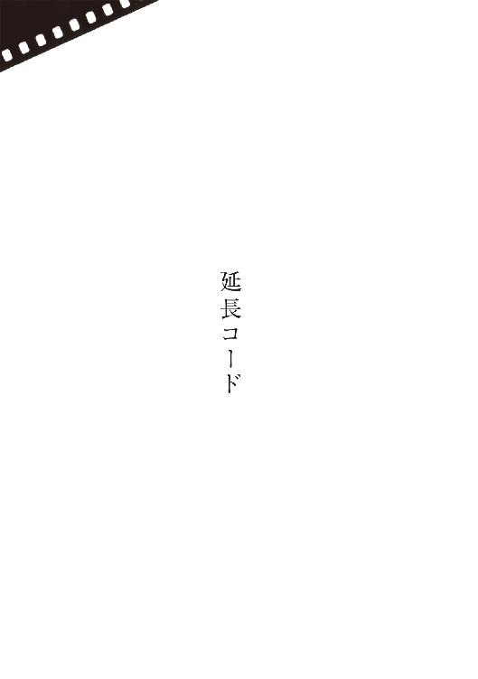
娘の訃報を受け取ってから、しきりに虐待されている猫の夢をみるようになった。脊椎動物としての形態をうしなわせるほどの念入りな虐待ぶり。それでも猫は生きている。あ、みゃ、と啼き、よたよたと歩いては倒れる。今さらの介抱は無理にせよ、せめて一思いに楽にしてやらんと意を決し、後ろから近づいていくものの、姿の気味悪さに両の腕が竦む。猫は身を引きずるように遠ざかっていく。しかし消え去りはしない。
そこにいる。
川底に堆積した泥のような、長い年月をかけて知らず知らず育んできた、自らの残忍性の顕れだと私はこの夢を感じて、初めてみたあと、覚醒したあと、嘔吐しかけた。咽に上がってくる苦いものを水道水で胃に流し込んでいるうち、いや、あの猫は私自身ではないかと思い当たった。
だから、この種の夢が平気になったという訳でもない。虐待者は顔の無い女で、別の夢では私に猫を食べろと勧めてきた。まだ生きているので食べられませんと、うっかり逆上させてはまた猫を苛められるから低姿勢に断るのだが、食べはじめれば死ぬから、と女は譲らない。問答しているうちに死んでしまったら、きっと根負けして食べてしまうように予感され、気が気ではない。目が覚めると視界は昏く、手足が冷えきって痺れている。
小学生たちが車の中を覗きこんで、寝てる、寝てる、と騒いでいる。目を閉じていながらその顔つきや衣服の色までくっきりと認識できる。しかし目を開けると、窓外には誰もいない。
ありふれた国産車での仮眠が物珍しいはずもない。いつぞやの別の目覚めの寸前にも、彼らから顔を覗かれていたような気がする。すなわち私のなかの覚醒の概念が、ときどきランドセルを背負う訳だ。車を出て通りを見回す。案の定、人影ひとつない。跫音ひとつ聞えてこない。鳥ががやがやと騒いでいる。紫色の雲が垂れ籠めている。遠い林を風が搔き鳴らす。
路地を見つけて立ち入る。もともと一軒の敷地であったと想像される形状の土地を、今は数軒の建売住宅が分割している。路地の果てに、往時の名残らしき棕櫚が何本か確認できた。その向こうには、ふしぎと何も見えない。かといって闇でもない。棕櫚の枯葉が複雑に夕陽を反射しているせいか、私の老眼はこうと名状しうる像を、なんら結んでくれないのである。
上着のポケットから必要な部分だけ表にして畳んだ地図のコピーを取り出し、眺めなおして、見当違いの家ではないのを確認する。路地を進み表札を見上げて、あっさりと辿り着けてしまったことに驚愕をおぼえる。日の高いうちは辺りを何度行き来してもこの路地が見つからず、そのうちひどい疲労感におそわれてしまい、いったん車内へと退却せざるを得なかった。
古風な筆書きの表札には程遠い、ＤＩＹ用品店などで売っているコルク板にローマ字のパーツを貼りつけた代物だったが、確かにＯＫＵＺＯＮＯとある。呼び鈴を押す。未だ夢のなかにいるように手応えのないスウィッチで、向こう側で音が鳴っている気配もない。もう一度押す。浅瀬の水面に似た模様硝子がオレンジ色に変わり、どちらさま、と女の声がした。
私は住居に女がいることを不思議がりながら、
──早見と申します。
ドアが薄く開いた。はい、と化粧っけのない女が出てきた。小首をかしげている。私がどこの何者か、名を聞いてなお理解しかねている顔だ。
──娘が......小春がお世話になりまして。
ああ、と愛想のつもりか女は笑った。笑顔のための笑顔。その場の私にとってはなんとも厭な感じの、表情というよりも顔面の歪みでしかなく、猫を虐待しているのはこの女ではないか、夢はその事実を私に伝えていたのではないかという気さえした。
──ちょっとチェーン、外しますね。
女はドアを閉じた。私は後ずさって待った。ドアはなかなか開かなかった。塒へと急ぐ鳥たちが、いっそうけたたましい。さっきの陽光はずいぶん微妙な角度で射し込んでいたものらしく、棕櫚の木は早くも陰へと身を潜めている。しかし玄関に灯りが点ってしまったせいか、その向こうにはやはり、なにも見えない。
錠を外していただけとはとうてい思えない時間を経て、ようやくドアが開いた。三十代であろうその女が派手派手しいピンクのスウェットスーツを着ていることや、玄関に自転車や傘立てや無計画に買ったらしい靴箱類が詰め込まれて人ひとり通過できる程度の隙間しか残っていないことや、その向こうの細い廊下を簞笥や衣装ケースがいっそう狭めていることなどが、とりあえず見て取れた。
──幸一くん、きょう日曜だけど仕事なんですよ。妾は小春ちゃん関係はよくわからないから、すみませんけど、また明日の晩にでも。
──それは、とつぜん伺って失礼しました。お電話までは教えてもらえなかったもので。
──どこで。
──病院で。
──住所は教えたんですか。
──いいえ。早口の人でよくわからなかったんですが、なに法だかに引っ掛かるかもしれないというので、ご苗字だけ。奥薗さんというのがそうある苗字とは思えませんでしたから、あとは交番をまわって調べてもらいました。
ちゃ、と舌打ちの音がしたので、いつしか俯きがちに、女の下腹に垂れ下がったスウェットパンツの紐を見ながら話していた私は、びっくりして顔を上げた。女のほうも私の視線に驚いた顔をした。
──いえね、隠し事なんかなにもないんですけど、いろいろと厄介じゃないですか、けっきょく助かってても、助からなくても。だから教えないでほしいって云ってあったのに。
──ご面倒はおかけしません。まずはお礼をと。
──そうなんですか？
──私のほうの血筋に心臓で死んだ者は少なくありませんし、小春は子供の頃に不整脈がありましたから、あれは純然たる突然死であったと納得しています。そういう言葉がありうるのかどうか存じませんが。奥薗さんは善意の第三者だとも。
──そうですとも。妾たちは外で食べて帰ってきて、そしたら小春ちゃんが来てて......。
──来てて？ こちらに住まわせていただいてたんでは？ いえ、奥薗さんのお手紙にそんなニュアンスのことが。
──手紙ってなんですか。
──病室に届けられていた、下着やなんかの箱の中に。
──手紙が？
──はい。メモといいますか。
女はひどく頑なな調子に頭を振り、
──妾はわかりません。合鍵持って自由に出入りはしてましたけど、一緒に住んでたっていうのとは違いますよ。とにかく小春ちゃんが来てて、幸一くんがなんか変だって気づいたんです。ただ酔ってるだけじゃないぞって。
──もう意識はなかったんですか。
──いいえ。まあ、まともな受け答えはできなかったけれど、駐車場までちゃんと歩いたんですよ。
──そのとき、なにか云っていましたか。
女は考えたあと、もしくは考えるふりをしたあと、
──ちゃんと聞き取れるような言葉は、なに一つ。ただ幸一くんが家族を呼ぼうかと云うと、いやいやをしてました。
──そうですか。ご主人は遅くなられますでしょうか。ご挨拶と、それからもし遺品があれば引取りをと思うだけで、大してお手間はとらせません。
──遺品？
女は眉をひそめた。言葉を知らないのかと思った。
──こちらの都合で恐縮ですが、明日から社用でベネズエラなんです。
──社用？
こちらが汚い言葉でも吐いているかのように、繰り返してくる。
──ええ、南米に。それからですね、病院に預けられたお手紙に、娘がだいぶお借りしていたような記述がありましたから、とりあえずその一部だけでもお返ししておこうと。
険しかった女の両目に、ぽっと灯りが点った。
──そういう金額のことも、妾だけじゃあちょっと。幸一くん、あと二時間は帰ってこないんですよ。どうか、そのくらいにまた。
長めの時間を云われたと感じた。女が幸一くんと呼ぶ男、娘の恋人だと私が思ってきた男は、もっとずっと早く帰ってくるか、あるいは今も家の中にいるのではなかろうか。請求金額......それらしき証拠の呈示できる金額を、じっくり相談しようというのだろう。
──わかりました。その辺を歩いて、食事でもとってから、また戻ってきます。
──駅のほうに？
──車で来たものですから、どちらが駅かもよく......。
──そこ左に出て、広い道、広い道にジグザグに進んだら、私鉄の駅前通りです。途中に団地があって、そのなかに変な形をした給水塔があって、小春ちゃんはよく登りたがってましたよ。
──給水塔に？
──ていうか、その天辺に。
──登れるんですか。
──普通の人は無理でしょ。そういう事、お知りになりたいかと思って。
私は頭をさげた。
──ありがとうございます。眺めてみます。
云われたように歩いていくと、なるほど団地の中程で、旧き佳きＳＦシリーズにでも出てきそうなユーモラスな塔に出くわした。優美に先細っていく円柱の上に、アダムスキー型ＵＦＯに似たタンクが乗っかっている。立ち止まって見上げた。円柱は空に紛れさせる心算でか真っ青に塗装されていたが、街灯に照らし上げられるこの時間帯には、黒ずんだ空との異様なコントラストを呈している。
娘が遺書を置いて家を出ていったのは彼女が十七のときで、以後五年あまりのその歩みを、私はまったく知らない。出ていく以前の彼女が、冗談にせよこういった代物に登りたがって見せる人間でなかったことは、まず断言できる。味気ない云い方をするならば何事においても優等生を演じる子で、これまた味気ない話だが私はそれを自慢にしていた。彼女の内に萌芽しているかもしれない虚言癖には、ただ目をつむっていた。
中学生だった娘の鞄を足でひっくり返してしまい、こぼれ出た少女雑誌を目に留めたことがある。あれが最初だ。拾いあげ、なんの気なくその頁を繰っていくと、性教育と呼ぶにはいささか赤裸々な、未熟な性行為を賛美するかのような特集が組まれていた。反射的に反発を覚えたものの、下手に若い好奇心を涸渇させるよりは、こうして情報に倦ませてしまったほうがさまざまに安全ではなかろうかという所感も、またいだいた。同じ廊下に娘がいた。私がなにを問うよりも早く、友達が勝手に鞄に入れた、と主張しはじめた。
どこの家庭にも生じうる光景だろう。うち九割九分九厘は時の波間に消えていき、誰の記憶にも残らない。しかし今の私には、自分に対して運命が仕掛けてきた試験だったような気がする。そんな真似をして友達になんの得がある、と私は娘に問わなかった。かといって娘の弁を信じきるでもなかった。真相などどうでもよかった。私はたぶん、娘の人生に興味がなかった。興味の対象は常に、会社に翻弄され、揉まれ、潰されかかっている自分自身だった。それ以外は無害なパノラマであってほしかったのだ。家族も、プロ野球も、街の景気も、駅の暴力沙汰も、外国での戦争も。
じじつ娘に虚言癖があったのだとすれば、それは年々巧妙さを増していたのだろう。彼女が姿を消す頃には、以前はときたまあった言動への引っ掛りを、私はまったく覚えなくなっていた。だから遺書には困った。引っ掛りのない滑らかな彼女......パノラマ上の彼女を信頼するとすれば、死への決意は本当である。刻一刻と生存率は下がっていく。親身とはいえぬ警察の捜索は、手遅れに終わる可能性が高い。
もし生存を諦められないなら、私は同時に彼女の虚言癖を認める羽目になる。
どうあれ生きていてほしいと願うのが親の務めと、頭ではわかっている。そう自らに強いるほどに、平然たる顔つきで家に戻ってきた娘から、またこっぴどく裏切られるヴィジョンに迫られ、苛まれる。むろんそれ以前の事として、私も家内も存分に慌てふためいて思いつくかぎりの番号に電話をし、自責したり相手に責任を擦りつけたりして生活に恐慌をきたし、ともに深刻な不眠に陥って掌に盛るほどの薬を処方されている。そういったうえでの心理である。
遺書に具体的な理由は書かれていなかったが、これまでの自分に嫌気がさしたという文言があって、それだけはまったく真意のように思われた。
給水塔の天辺からなにかが落ちてきた。人が身投げをしたと錯覚して、ああ、と声をあげたが、それはこちらに飛んできた鴉であった。私の頭上を越えていき、ごみ集積場の塀に降りた。自分で思うより大袈裟な驚き方だったのだろう、そばを歩いていた二人組の女学生がくすくすと笑う。
娘は本当はこの塔の上から身投げをしたのであり、なんらかの偶然によって外傷が残らなかったのであり、たいへん時間はかかったとはいえ、遺書にしたためた決意のとおり自ら命を断ったのではないか。その可能性はないか。私は給水塔に近づく。恥じ入りながら近づく。虚しい思いつきだ。万が一、自殺の可能性を見出したとして、それで私は？ 喜ぶのか？
給水塔を巡る。間をフェンスが隔てており、一定の場所まで進むと円柱の土台から遠ざかってしまう。後戻りしながら、繰り返し繰り返し、アダムスキー型のタンクを仰ぎ見る。下の草地にも目を凝らす。
──里見さんですか。奥薗です。
不意に声をかけられて身構えた。眼鏡をかけた細面の男が、肩で息をしている。
──里見さんですよね？
頷いた。
──ちょうど早めに帰ってきまして、うちのが、里見さんがおいでになったって。きっとまだ給水塔の辺りだろうと云うんで、走ってきたんです。
手紙の文面からある程度の教養は感じていたものの、私は娘が依存していた男を、粗暴なまでの生命力に満ちた人間だろうと想像していた。だから目の前の優男に拍子抜けした。現れたタイミングも呆気なかった。
──駅から？ じゃあ擦れ違っていたことになりますね。
大方、金を置いていく心積もりを耳にして、私の気が変わらないうちにと慌てて追いかけてきたのだ。そう思い、表情を窺いながら訊ねた。
──そうなりますね。
と笑っている。
──うちのは、口のきき方がちょっと。なんか失礼はなかったですか。
──いえ、ここのことも親切に教えてくださって。
──改めまして、奥薗です。小春さんのことは、なんとも。
私はふかく頭をさげて、
──たいへんお世話になりました。
──姿も現さないとお怒りだったかもしれませんが、葬儀やなんかに僕らが出ていくのも筋が違いますし、正直、こんなことになるんだったら、もっと早くと、気が咎める部分もありましたし。
──お気になさらず。冷たくなってはいましたが、再会できただけでも。
──せめて電話くらい入れたらどうかって、僕からは云ってたんですけどね。今さら無理だって小春ちゃんが。うち厳しいから、向こうから切られるって。里見さん、有名な科学者なんだそうですね。
──私がですか？ いいえ、機械技師です。学者ではありません。
あ、とだけ奥薗は呟いて、なにやら独りで納得してしまった。
──小春がそう？
──いや、僕の勘違いです。すみません。外で食べてくるって出てきちゃったんですが、里見さんも。
──そうですね。なにか軽く。
──軽く。じゃあ中華とかじゃないほうが。
私は胃袋の上に手を置き、
──縮みきってまして。だからといって食べないでいると、それはそれで身に障るんで、無理にでも口に入れるようにしていますが。
奥薗は気の毒そうに頷いた。ともあれ駅前通りに出ないことにはどんな飲食店も無いというので、並んだり前後したりでそちらに向かいながら、
──失礼ですけれど、小春とはいつ頃、どちらで。
遠慮がちな問いとは裏腹に、奥薗は快活な調子で、
──うちにいるあれ、寛子ってんですけど、夜の仕事......接客業でして、そこの同僚だったんです。
──いわゆるクラブホステスですか。
──この辺にしちゃ、ちゃんとした店です、女性が一人でも入れるような。そこに去年の夏頃だったかな、初めお客として来てて、気心が知れると、自分でちゃんと稼いでいまいる場所を出たいから、店で雇ってくれないかって。器量がいいし話も巧いし、店としちゃ文句ない。ただ訳ありで、自力じゃ新しい部屋を借りにくいと。どう見ても真っ当な子だし不法滞在とかじゃないのもわかるんで、寛子が保証人になって、駅向こうにちっちゃい部屋を借りられるようにしたんです。
私は自分の不明を恥じた。ではあの女は、まるきり娘の恩人ではないか。
──ただそこが、節約のために安い所にしたもんだから、僕の目にもひどい部屋で、だからうちにばかり入り浸るようになっちゃったんですよ。最初はふたり、すごく仲がよかったしね。
──その後、険悪に？
──結局、寛子は店の上のほうの立場ですから、拘束時間が長いんですよ。一方小春ちゃんは試用期間だから休みが多い。おかしな話ですが、小春ちゃんのほうがうちにいる時間が長くなってきて、寛子の部屋も占拠してるみたいになっちゃって、寛子はそれを、最初から計算尽くの乗っ取りだと感じたんです。実際のところは、さあ。
──率直に、奥薗さんの目には、どうでしたか。小春は十七のときに家を出ていますから、それからの、おとなになった娘を私は知らないんです。お聞かせください。
──十七？ 十四じゃ？
──いいえ十七です。
──そこもか。
それまで一貫してにこやかだった奥薗の顔つきが、かたとき厳しくなった。
──あのまんまですよ。遺体、ご覧になったでしょう？
──はい。
──僕は見てないんです。病院に下着を運んでったとき、もう小春ちゃんは息をひきとってました。看護師が、安らかですよ、ご覧になりますか、と訊いてきたのを、僕は断りました。でもその言葉が本当なら、ご覧のまんまの、綺麗で華やかな子でした。ただね......。
──虚言癖があった。
奥薗はふかく頷いて、
──物凄い噓つきでした。それも寛子との不仲の原因です。本当だったのは、けっきょく生まれた町と姓名くらいだったのかも。病院から里見さんに連絡がついたってことは、そこのところは本当だったんですよね。
──あの、さっきから私のことを里見とお呼びですが、私は早見です。私の娘は里見小春ではなく、早見小春です。
奥薗は立ち止まり、すっかり暗くなった天を仰いだ。
──住所についても今まで理由がわからなかったんですが、最初は隣町の高級住宅地の、里見という家を探されたようでした。病院から連絡をうけた地元警察が機転をきかせて、似た姓名の過去の家出人をあたってくれたんです。
──小春というのは？
──私が付けた本当の名前です。なぜそこだけは本当を通したんでしょう。
──さあ。
彼はゆっくりとかぶりを振って、
──気に入ってたんじゃ？
苗字までいつわりだったことを知った奥薗は、見るからに不機嫌になり言葉数も減ったけれど、娘が勤めていた店の前では、ここですよ、と笑顔をつくって振り返った。といっても小さなビルの、地下へと延びていく階段に過ぎない。日曜日なので看板も出ていない。真っ暗な階段を眺め、そこを駆け下りていく娘の姿を想像しようとしたが、いかなる具体像も泛んでこなかった。給水塔の前でかいま見た落下する彼女の幻のほうが、余程のこと鮮やかだった。
立飲みに近い珈琲スタンドで、温めてもらったサンドウィッチを並んで食べた。奥薗は何度も私を、里見さん、と間違えた。自分の仕事を雑誌関係だと云った。私もベネズエラで求められている鉄道部品の話をしたが、彼にはぴんと来ない様子だった。じつは私にもぴんと来ない。会社にとってベネズエラ政府が上客でないことだけは確かだ。ていよく主力部門から追い払われた。そのうち現地勤務になるだろう。
私は娘の遺品について訊いた。
──小さいなりに部屋を借りていたということは、そこにせめて生活用品はあった訳ですよね。いえ、それらを惜しんでいるのではなく、可能なら、暮しぶりの一端に触れてみたいと。
──部屋はもう解約しました。小春ちゃんの持ち物は本当になにも無くて、うちから持ってってた品々を回収しただけです。電気ストーヴとか目覚ましとか蒲団とか。珈琲一杯飲むのにもうちまで来ちゃうんで、調理用具とかもなにも無しです。店での服や靴は寛子が貸してた物だし。サイズが同じだったんですよ。普段着がすこしはありましたが、そういう次第で、私が先に死んだらぜんぶ寛子さんにあげるなんて生前に云ってたんで、寛子が引き取りました。着ると云っています。駄目ですか。
──いいえ、異存ありません。
──ＣＤや本もありませんでした。だからあの箱に入れた下着やパジャマや手帖辺りで、結果的に全部だったんです。化粧品はどうだったのかな。寛子に訊いておきます。あ、それから......。
奥薗は最後まで云わず、
──あとでもう一度、うちに寄ってください。
──近くの路上に車を停めてありますから、否応なくあちらへ戻ることになります。独りの時間を、小春はどうやって過ごしてたんでしょうね。
──結局、寝ている以外に独りのことは僅かだったんですよ、僕の知っているあいだの小春ちゃんは。明け方まで仕事して、仲間と飲み食いして、夕方まで眠る。あるいは非番だとうちに来て、僕の仕事を邪魔しないように寛子の部屋にこもって、たいがいテレビを点けてました。でも照明みたいにただ点けてるだけで、窓際からぼうっと外を眺めてた印象ばかりです。
冷水を飲みくだしてトレイを片づけようとした奥薗を、私は引き留め、
──小春がお借りしていたお金を。
彼はスツールに戻った。云いにくそうに、
──手紙にはああ書きましたけど、あくまで信頼関係ってことで、けっして借用書とか書いてもらってる訳じゃないんで、概算でしか......。
──概算で結構です。いかほどですか。
──本当におおよそなんですが、三十万くらいかと。
私は頷いた。じつのところ、まさにその金額を云われるだろうと予想して、ぴったりを引き出してあった。実際に娘が借りた金額は、より少ないかも、多いかもしれない。利子をつけてくる相手でも合計で三十万。割り引いてくれる相手でも結果三十万。五年後の彼女なら、きっとそういう見積りで金を借りたことだろうという変な憶測が、銀行が近づくにつれ湧きあがってきて、キャッシュディスペンサーの前では確信にまで高まっていた。私が大脳生理学者や統計学者だったら、なんらかの法則や論理を見出せる事象かもしれない。機械技師の私には直感、山勘といった言葉しか泛ばない。
内ポケットから銀行の封筒を出して、奥薗に差し出した。
──その金額が入っています。お確かめを。
奥薗はぽかんと唇を開いた。封筒の中身をざっと検めて、
──手品ですか？
──親ですから、せめてそのくらいはわかります。
奥薗の家へと戻る。途中で寛子と擦れ違った。すこしはましな服装に替えていて、自分は自分でなにか食べてくると奥薗に告げた。口調はがさつだが愛嬌のある女だった。そう認めることは、顔の無い女は自分の娘であると認めることに他ならない。また、どうやら猫は私ではない。そちらも娘だ。
猫がまともな肉体を持たないのは、私がそれを想像しようがないからだ。彼女が最期まで入り浸っていた場所に踏み入るのは、すなわち、あの猫を後ろから捕まえるに等しい。そうすっきりと自己分析できていた訳はなかろうけれど、窮屈な玄関の前で、私の足は竦んだ。
──中へどうぞ。遺品、思い出したんです。ほんと穢い家ですけど、そのままお見せします。どうぞ。あ、どうぞ。
くどいほど奥薗に促されて、ようやく入り靴を脱いだ。
──そうだ、今のうちに寛子の部屋、ご覧になっときます？ 小春ちゃんがいちばん気に入ってた。
頷く。奥薗について、これまた物で半分にも狭まった階段を上がっていく。短い間に二度も曲り角がある階段で、たちまち方角がわからなくなった。
引戸が開かれ、電灯が点る。化粧品のにおい。ぎっしりと詰め込まれた家財道具や散乱した衣服に、一瞥、奥行さえわからなかった。遠近画法に失敗した絵のような部屋だと感じた。
──あのベッドの端にね、いつも坐ってました。ちょうど窓辺に肘をつけるでしょう。入ってもらっていいですよ。足許だけ気をつけてください。僕は遺品取ってきますから。
階段を下りていった。私は部屋に入った。留まっていられる場所が無いので、奥薗が示したベッドの端にまで自動的に足が進んだ。あとは腰をおろす以外になかった。
いざ身を置いてみると、乱雑は乱雑ながら変な統一感のある、未知の美意識を想起させなくもない部屋だ。そう思いながら絨毯に視線を落として、甘い飲みものでも吸わせたらしい硬い質感にまるまったティッシュペイパーを見つけ、いや違う、と考え直す。ばずばずとあちこちに擦れる音をたてながら、奥薗が戻ってきた。肩に、大きな黒ナイロンのショッピングバッグを担いでいる。
──どれも小春ちゃんが買ってきた物です。バッグ以外。
床の物を蹴散らしながら近づいてきて、ベッドの上の煌びやかな衣装の上にバッグを投げ落した。白や黒やオレンジ色の、長年見慣れてきた代物がこぼれ出た。
──ぜんぶ延長コードです。
──テーブルタップではなく？
──ああいう蛸足に出来る奴は一本も無くて、一口から一口の、純然たる延長コードだけですね。なにかと買っては持ち込んできて、亡くなったあと配線を昔に戻したら、こんなにありました。まだあるかも。重量からいえば、これが小春ちゃんの最大の遺品です。
──いったいなんのために。
奥薗は妙に神妙な顔つきをした。
──里......早見さんのお宅、今の僕の想像ですけど、綺麗でしょう？ とても片付いてるでしょう？
──古い借家なんで綺麗とは云えませんが、まあ片付けるようにはしています。
──コンセントが何かの後ろに隠れてて使えないとか、絶対にないでしょう？
──否応なく塞がれる場合は、予めテーブルタップで延長しておきますね。
──僕の実家もそうです。でもこの家で新しい穴を見つけるのは、至難なんです。でも小春ちゃんは、たとえば風呂上がりのドライヤーとか、歩きまわりながらかけたい子だった。実家でそういうの、なかったですか？
私は思い返す。私が会社から帰宅したとき、お帰り、と玄関近くまで出てくる風呂上がりの娘。その手にした装置の轟音と温風に私は顔をしかめて、向こうでやれ、などと無神経に命じていた。あの電源はどこから取っていた？ 廊下の途中の、足許の二口コンセントだ。他にはありえない。洗面所から抜いてきて、挿し替えていたのだ。
夜を徹して飲んで帰宅して、インスタント珈琲を飲み煙草を喫っていたダイニングに、トーストの匂いが満ちてきた。その匂いをどこかにやってくれと私が頼むと、いいよ、と娘はそれを本当にどこかに持ち去っていった。今まで思いつきもしなかったが、彼女はトースターを自室に運んだのだ、電源を挿し替えて。
──いつしか、うちじゅうの家電の電源を延長して延長して、その残骸がこれです。お持ちになりますね？
私は頷いた。バッグの口に手を伸ばして、重なり合ったコードに触れた。その瞬間になにか確固たるものを感じるのではないかという期待があったのだが、触れ慣れてきた絶縁素材の手触りだという以外、これといった発見はなかった。昔よりいくぶん形状はスマートになっているが、若い時分から有難味もなく使ってきた、自分で買った経験があるかどうかも定かではない、ただの延長コードに過ぎなかった。
立ち尽くしている奥薗を見上げ、
──ここから、小春はなにを眺めていたんでしょう？
──なにとも表現しにくいですね。カーテン開いていいですよ。開きましょう。
奥薗はベッドに片足をあげて、薄いカーテンの裾を上のレールに引っ掛けた。真っ黒な窓が、ただ鏡となって立体感のない部屋を映した。
──窓を開けても？
──どうぞ。
腰をあげてサッシュを開く。現れた光景に私は驚嘆した。闇だった。
──なにも見えない。
──こっち側は灯りが少ないですからね、これといって見えないですね。
──小春はこれを眺めていたんですか。
──昼間はあるていど見通せますから、知ってれば夜でも、あの辺はどうなってるとか類推できますし。
──本当に小春は、この景色を？
──こんなことで噓はつきません。昼間や、この辺の地理を知ってれば想像がつくんですよ。だから小春ちゃんは、闇を見てたわけじゃない。また後日おいでになれば、確認できますって。
──明日ベネズエラに向かいます。帰ってこられるという保証はない。いま照らせませんか。懐中電灯はありませんか。
──あったっけな。
奥薗はいったん部屋から出ていき、ややあって、クリップ式の電気スタンドを携えて戻ってきた。
──すみません、今はこれで照らすくらいしか。
──こっち、棕櫚の方向ですか。
──そうです。いつから生えてるんだか。ねえ里見さん。
──早見です。
──早見さん、いっそ外に出て歩いてみられたら、灯り持って。そのほうがよくわかりますよ。
──だから懐中電灯が。
──このスタンドでいいでしょ、延長コードがあるんだから。
私は彼の顔を見返した。
──そうだ、延長コードがありました。
部屋を出て階段を下り、靴を履きながら、
──奥薗さんが勿体ぶらずに何が見えるか教えてくだされば、こんな大事にはならなかったような気がします。
──どうってこともない景色を、僕にどう説明しろと仰有るんですか。
哀れむような失笑に、私の自尊心は傷付いた。
──ちょっと。三十万も受け取っといてその態度はないでしょう。
──だからですね、貸したお金なんですよ。小春ちゃんにあげた訳じゃない。とにかく台所の窓からこのスタンドを渡しますから、灯りが点いた窓の下まで来てください。いいですね？
奥薗はその柔らかな物腰とは裏腹に、指揮官タイプであると思しかった。スパルタ式の生徒教育、社員教育にさらされてきた私の世代は、そう具体的な指標を与えられると、とりあえずそこへと邁進してしまう。
窓の下でスタンドを受け取りながら、私はまるで教師に教えを請うように、
──寛子さんがですね、小春はここに住んでいたという訳じゃないと。
──ええ。名目上、彼女の住居は向こうのアパートですから。
──名目の話ではなくて、私が知りたいのは、小春がここを自分の家と感じていたかどうかです。つまり、終の棲家と云えるのかどうか。おかしなことに拘ると思われるでしょうが、子を喪った親の、べつだん狂気と思われても構いません。私は遥々とこの町に来て、しばらくを過ごして、今や自分のなかに相似形のこの町が出来つつある。そのジオラマのなかのこの家を、娘がいた家と感じていてもいいのかって話です。
──いいですよ。
と彼は躊躇なく答えた。
──いいんですね。
──はい。だって小春ちゃんは、ここから、この家から、家出したことがある。しばらくして、家出先から家出したなんて莫迦みたいって笑いながら帰ってきましたけどね。要するに家出するってことは、ここが家だったってことでしょう？
──そうなのか。
私は灯りで家の壁を照らし、眺めた。持ち替えて、奥薗に右手を伸べた。彼は軽く握り返してきた。私は頭をさげて、
──さっきはお金のことを持ち出してすみません。貴方の仰有ったことが正論だ。
──本当はもっと貸してたと思います。
──私は高名な学者なんかじゃない。ただのサラリーマンだ。あれが限度です。
──いいんですよ。小春ちゃんがいたあいだ、ひどい事もたくさんあったけど、楽しい事も色々とありました。そこにいてください。延長コードを持っていきます。
電気スタンドはすでに最初の延長コードと連結されている。ショッピングバッグを肩にして出てきた奥薗は、その接続をいったん断ち、間に新しいコードを挟んで、灯りを甦らせた。
──行きましょう。ちょっとした林になってるだけで、足場は悪くないと思いますが、さきに古い鉄条網がありますから気をつけて。
──わかりました。
電気スタンドの灯りを頼りに、私は足を進めた。棕櫚の幹。まばらな灌木。下に堆積した枯葉。そのきしきしという悲鳴。下に詰まった泥の弾力。
──ストップ。
と奥薗が声をあげる。
──コードがいっぱいいっぱいです。一度に二つ、繫げときますか。
──ぜんぶ繫げたら、どこまで行けますかね。
──どうせ、さきは行き止まります。そこまで間に合うかも。
珍奇な光を察知した羽虫どもが簇がりはじめる。立木に張った蜘蛛の巣。娘がその人生の最期に眺めていた雑多なヴィジョン。風が林を吹き鳴らす。
──里見さん、ストップ。こっち照らして。
もはや訂正せずに従う。奥薗はバッグを地面に下ろした。
──もう繫げるだけ繫いじゃいましょう、余って困ることはないんだから。
──そうですね。
彼は私の手から電気スタンドを奪い、辺りを照らして具合のいい枝を選び、クリップで留めた。灯りを私に向けた。
──一緒に繫ぎましょう。
──はい。
ふたり、しゃがんで、コードとコードを繫いでいく。最初の連結まではつまらなげに思えた作業だったが、始めてみると奇妙な愉悦があり、しまいにはコードを取り合った。手当たり次第に連結したためループになっている箇所が多々あり、そういった確認と修正のほうが手間取った。作業の合間、私は卒然と、
──ねえ、水音がしませんか。
──耳がいいんですね。この林のどん詰まりは、小さな川です。鮎がいるって話ですが、僕は一度も見たことがない。その川と湾曲した私鉄が交差した、ここは地域のいちばん果てなんですよ。太い道も橋もないから、車が通り抜けられない。すると人も通らないから店が無い。
──閑静でいいですね。私の家など国道に面していますから、バスが通る振動で目が覚めます。
──考え方ひとつでしょう。ここいらは墓地みたいに見放されている。だから小春ちゃんが来るまでは、僕も寛子も......。
延長コードを繫ぎおえた私たちは、さらに林を進んだ。鉄条網を見つけて、人間は腰の高さの空間を抜け、スタンドは改めて地面近くから通した。
コードが何十倍にも延長されたぶん、スタンドは極度に重みを増している。ましてや奥薗が頻繁に、ストップ後ろを照らして、と指示してくる。どこかに無理が生じて接続が切れたが最後、私たちは真っ暗闇を手探りで戻らなくてはならないのだ。水音を察した自分を、私が悔いはじめた頃、
──ストップ。
と、ことさら大きな声で奥薗が云った。
──ここまでです。
私は彼の顔を照らして、
──水の音が......もうそこなのに。
彼は厳としてかぶりを振った。
──すぐそこですが、ここまでです。
私は諦められなかった。彼にスタンドを託し、
──なるべくこっちを照らして。
と伝えて、おっかなびっくり緩斜面を下りはじめた。奧薗は止めず、灯りを高く挑げて協力してくれた。不意に空気が冷たくなり、鼻腔が水の匂いを捉える。ああ、川だ。流れ去っていく音がする。煌めきが見える。
──うちから家出したときにね、僕は驚いたんですよ。
奥薗のいっそうの大声に振り返り、
──なにに？
──昼間でしたけどね、小春ちゃんが寛子と喧嘩して、荷物ひとつ持たずに僕にさよならと云って。僕はさきに玄関から出て路地で通せんぼしたんです。そしたら彼女、行き止まりのはずのこっち側に進んでって、この林も抜けて、その川も、威勢よくじゃぶじゃぶとね。僕には同じことが出来なかった。路地を戻って、ちょっと離れたところの橋を渡って、いちおう追いかけたんですけど、もう影も形も無かったな。だから僕はね、里見さん、遺体を見られなかったんです。小春ちゃんはその川をじゃぶじゃぶって渡って、僕らには見えなかった景色の向こうに、それでいいかなって思いまして、つまり、消えちゃった。
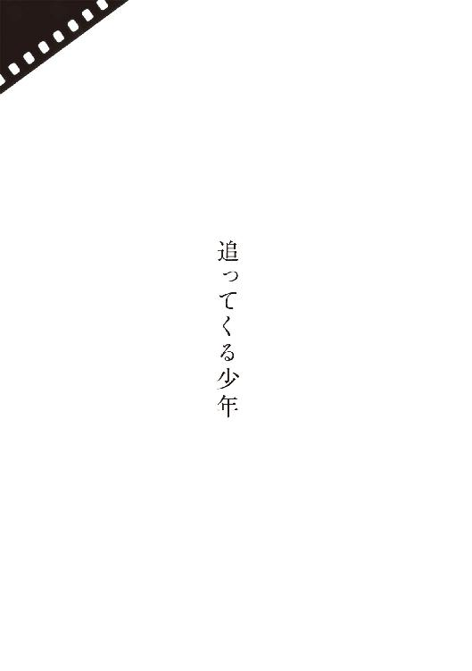
長い坂道をのぼりきったところの、墓地の上がり口の、５ＤＫの二階屋だ。北側の窓から見えるのは、でこぼこなコンクリに被われた崖と、その上の柊の植込みと、その向こうに並んだまちまちな高さの墓石だけだった。まだ小学生だった私は大雨が降るたび、土砂やコンクリが墓石ごと自分の部屋まで流れ込んでくるのではないかと想像して怯え、父はなんでこんな家を買ったのだろうと恨みさえしたが、そんな中古住宅でも三十代の教員夫妻には法外なほどの買いものだったはずだ。住みはじめるとき、だいたい築十年の家だと聞かされた。とすればまだ築二十数年の計算だから、老朽には早い。今はどんな家族が住んでいるのだろう。
とつぜん声をかけてきた少年に恐怖し、商店街を滅茶苦茶に逃げまわりながら、私は本当に久しぶりに、故郷のその家のことを思い出していた。最初は四人──両親、私、妹──で住みはじめ、それが半年も経たないうちに五人になった。父の嫁き遅れの妹が、しばらく滞在していたと思ったら、またいつでも来られるようにと親許から次々に荷物を送らせ、とうとう客間だったはずの四畳半を自室に仕立ててしまったのである。母が苛立ちはじめると、本も行李もミシンも置いたままでふいっと帰っていく。しばらくすると、それらが必要になったと言って舞い戻ってくる。子供の私は単純に家族が多い状態を好んでいたが、今にして思えばじつに図々しく狡猾な人だ。そしてそうは見えない、嫋やかな容姿の人であった。
わがもの顔の小姑に母の怒りが心頭に発していたのは、幾度ともない激しい夫婦喧嘩から明らかだった。叔母をかばう父にも彼なりの大義があった。叔母の左手と右脚には生まれつきの脳性麻痺があった。指がまったく動かないわけでも歩けないというわけでもなかったけれど、左手はいつも袖に隠していたし、家族が歩いているときはいつも後からひっそりと付いてきた。父にとっては彼女が嫁げずにきたのも、我が儘なのも、周囲が彼女を絶対的に守護せねばならないのも、一族が「自然の戯れ」に触れられてしまったがゆえの、逃れられぬ定めなのだった。彼はそう本気で信じていたと、私は思う。
声をかけてきた少年を、私は初め、縮みきった老人のように錯覚した。言葉つきが幼いのがふしぎだった。自称どおりアツシくんだとすれば、十六、七歳のはず。長い病院暮しが、一つの軀に発育不全と不自然な老化を同居させたとも、考えられなくはないが。
面立ちに、私はなんら見覚えを感じなかった。ただしこちらをまっすぐに、なにか期待しているかのように見つめるその双眸には、記憶の底の澱みを搔きまわされたようで、ここ数年で清澄になったと感じていた心が、いきなり混濁した。かといってその眸の奥に私が見たのは、三軒どなりに住んでいたあの少年では、絶対にない。
わずか数回の出来事が、子供心には永続的な日常として記憶されることがある。水泳教室で平泳ぎができず辛酸をなめ続けたという話を、むかし母にしたら、お前が行ったのは二回きりだったと教えられた。アツシくん、逆に彼を従えているかのような若いシェパード犬、そして私とが、墓地やその周辺を歩きまわったのも、たった二、三回のことだったのかもしれない。そんなことを思いながら、私はいつしか駅ビルの書店を通り抜けようとしている。本当は商店街でなにかお総菜を買ってから、バスを待っているはずだった。家に着いたらソファで居眠りでもしながら、夫の帰宅を待っているつもりでいた。
夫は私よりひとまわり上で、かつては浮気症だったが、今はその罪の意識もあってだろう、私にひどく優しい。料理も掃除も命じることはない。髪の毛が薄くなりはじめたのを自覚するや、男性としての自信が消散してしまったらしい。私にまで愛想をつかされないようにと念じながら生きているのが、ありありとわかる。彼のひ弱な頭皮に感謝。些細な浮気を私に見抜かれる程度の、本質は正直な人間だ。だから彼のこの都市への転勤が決まったとき、いっそ式を挙げ、籍を入れて、共に来ることを選んだ。あの家を離れてからも鬱を抜けられず、年々言動が奇矯になっていく母の許を逃れたいという気持ちも、もちろんあったけれど。
犬畜生ではあるまいに、と父と叔母の通夜で母は、周囲に聞えるように言い、一粒の涙もこぼさなかった。しかし妹からの報告によれば、最近は笑顔をうかべる程度まで心が和らいでいるらしい。ふたりの死について、私は多くを聞かされなかった。もう十二歳になっていたのだから、すこしは事故の模様を説明されてもよかったはずだ。
私は今でも真相を知らない。しかし幾つかの鍵は握っている。自分が詳しくを説明されなかったこと。叔母の死に顔を見せてもらえなかったこと。母の言葉。彼女が言葉を続けようとすると、私と妹は縁者らによって二階に追いたてられたこと。葬儀のあとの母が、まるで二つの死が無かったかのようにふるまい、ふるまいながら、病んでいったこと。
書店の裏口は改札口に面していた。私はふたたび電車に乗って職場に戻ることを思いついた。この夜はすこし奇妙だ。職場のビルを出たときの、月の、あの赤い色からしておかしかった。リセットして、あそこからやり直したほうがいい。次に見上げる月はきっと黄色い。私は自動改札に定期券をくぐらせた。
プラットフォームで準急の到着を待つ。がらがらの列車が来る。車両の端の席に坐った。ドアが閉まって、列車が動きはじめる。
人生最後の夜、父は軽自動車で叔母を駅まで迎えにいき、彼女を助手席に乗せた。そして墓地の上がり口のあの家へと着く寸前、シェパード犬を散歩させていたアツシくんを轢いた。少年は一命をとりとめたと聞いた。しかし父の車は駐車中のトラックにぶつかり、横転し、数メートル下の分譲地へと転がり落ちた。なかのふたりは圧死した。
車を走らせながら、じつの兄妹で睦びあっていたのだと私は想像している。そして誰の目にも、そのことがつまびらかな遺体だったのだと。でなくては母の狂気は説明しがたい。
車両同士をつないだドアが開いて、アツシくんが私を見つける。逃げても無駄だよ、僕は鼻がいいんだから、と荒い呼吸のしたで笑う。彼は私の隣に腰掛け、いまこっちの学校に行ってるんだ、まさかセイコさんに逢えるなんて、と嬉しそうに言う。
澄んだ暗褐色の虹彩を見返し、私は記憶の底の泥のなかから、近所のおばさん同士の噂話を掘り起こす。轢かれたアツシくんはお腹が大きく裂けており、よりひどい状態の犬がそこに折り重なって死んでいた。駆けつけた救急隊員は臓物の境を分かてず、すべてをまとめて担架に乗せた。そう、電柱の陰で聞いた。
セイコさん、そんな怯えた顔をしないで。どんなに付きまとわれても、どうせ僕の寿命なんて短いんだから。犬は七倍の速度で生きるんだから。アツシくんの声をすずろに聞きながら、きっと今後はうちに入り浸るのであろうこの少年を、夫に対してどう庇おうかと頭をめぐらせている自分に気づく。
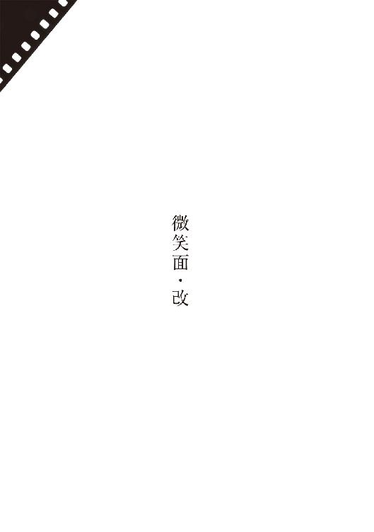
某日
あたかも絹子の顔。
某日
より詳細に記す。最初、月だと思った。しかし立ち止まって夜空を見渡すと、月は別個に浮かんでいた。私に勘違いを生じさせたほうは、上端を落とした種子のような形で、どうも本物の月よりは遥かに低い。樹に引っ掛かった風船が、街の灯りを浴びて輝いているさまに近い。
五階くらいの高さだろうか。視線を動かすと、飛蚊症の澱みのようにいったん彷徨い、やがて視界の中心で安定する。眼球に異変が生じているらしい。
目の高さを普通にしているぶんには、景色に紛れてしまって見えない。しかし見晴らしのいい四ツ角から暗い方向に目をやると、このときは見えた。私との距離は空に見ていたときと変わらない。目を凝らしていると、その輪郭が絹子の顔そっくりに感じられてきた。昨日の記述はそういう意味である。
某日
浮游物が大きくなっている。もしくは近付いている。
どうしても顔に見える。いったん絹子と認識してしまうと、もはやそうとしか感じられなくなる。
某日
白内障の検査を受ける。細隙灯を当てて診てもらうも、水晶体に異常見つからず。予期していた結果でもある。
眼球の側に原因があるのだったら、テレビを見ていても本を読んでいても、視界になんらかの浮游物が生じているはずだ。しかしそれはない。屋内ではいっさい観察されない。しかし窓から遠くを望めば、景色の手前に見える。すなわち私の前方に物理的に浮かんでいるか、私の脳がそのように認識しているだけということになる。もちろん後者以外にはありえない。
帰途、夕焼けを背景にそれが浮かんでいるさまを眺める。逆光を浴びて紫色に翳っていた。そうあるべきという認識が私の内にあるから、そのとおりの陰翳を帯びるのである。
某日
二箇月ぶりに真由里来る。重力との戦いが熾烈をきわめてきた。
身体を動かしたり偏食を直すことをせず、お手軽な減量法と安手の美容整形にのみ頼っているのだから、顔も体型もいたずらに変形していくばかりで、今や往時の俤は取り戻すべくもない。
真由里は私を騙し果せていると確信しているようだ。私も調子を合わせている。彼女は私の目を欺けているつもりでいる──彫刻家の目を、その弟子が。
美術家としての真由里に伸び代はない。無知無学に起因する野放図ぶり、若さと平均以上の容姿が、ある時期物珍しかっただけだ、マスコミにとっても、私にとっても。彫刻家の肩書だけ背負って企業の広告塔でも務めるのが関の山だろうし、本人もそれを望んでいるのだろう。
美とは儚いものだ。真由里が寝入ったあと、窓の向こうに浮かんだ絹子の顔を見つめながら、ひとしきりそう青年めいた感慨にふける。そして醜きの清しいまでの力強さに、改めて感じ入る。
器用さへの称賛を真に受けて美術を志し、この道に入るまで、私は自分が醜いということを知らなかった。無自覚であった。女からもて囃されるようなタイプではなかったが、まさか醜いとは思っていなかった。
私の指先は既存の美を模倣した。そうすることを推奨されたからだ。爪の下からじわじわと病原体が浸透していくように、私は美醜の別を知るに至った。そして絹子の出現が、私を決定的に醜くした。
ふと迷信じみた想いにかられるも、はや深夜。明日、電話をかけてみようと思う。
某日
電話、本日もかけられず。数日前に一度、酒の勢いを借りてかけてみたのだが、誰も出なかった。私と察せられたがゆえ出てもらえなかったのだという想いから、逃れられずにいる。
このところの多忙さが、たかが電話一本から私をいっそう遠ざけている。新しい作品集がまとまる公算あり。ただしテレビとのタイアップ。後ろにはもちろん阿羅漢教のコンテンポラリー美術館。あの裏庭に置く新作を求められている。
新作は構わないが、制作過程を取材したがっている。私が触るのは粘土原型だけでブロンズにするのは請負業者の仕事だと教えると、その工程に立ち合って指示している風を演じてくれと云われた。日本画の胡桃沢は同番組のため、京都に滞在し屛風に舞妓を描いたという。インスタレーションの鵜飼は、鵠沼海岸に紙のピラミッドを建てたという。
テレビ屋の不遜さが耐え難く、会合後、まっすぐ帰宅する気にならず、珠穂の店に寄る。泥酔し、鍵を渡され、現在珠穂の部屋。見つけたメモ帳に記している。あとで日記帳に転記する。
窓を開けた。絹子の表情まで今やくっきりと判る。
............
某日
遂に、ふたたび絹子の実家に電話。呼びだし音を数えながら何気なく玄関のほうに目を遣ると、ドアの上に白い顔があった。遂に屋内にまで入ってきた。
はい、と素気なく出てきたのは、絹子本人だった。聞きまごうはずもない。
絹子は生きている。すると私の見ている顔は幽鬼怨霊の類ではなく、私の脳が生成しているなんらかなのだ。古めかしい迷信とは無縁のつもりでいたが、この発見にはいささか安堵した。
「斐坂です。どうしている」と私は訊いた。
絹子は答えない。
「お義母さんはいるか」
受話器を覆う気配。しばらくしてその母親が出てきた。
「いったいなんのご用ですか。二度とかけてこないでください。切りますよ」
「待ってください。絹子は今、その」
「新しい人生を歩んでいます。もう思い出させないで」
「顔は」
「すっかり治っております。お尻や腿の皮膚を移植して、よく見れば傷痕こそありますけどね、ええ美人ですとも。けれどあなたの知っている絹子ではありません。もう電話なさっても無駄ですよ。この番号は変えますから」
美容整形とは真由里の虚栄心を満たすための技術ではないのだという、当り前のことに思い至る。受話器を置いてまた玄関を見遣ると、相変わらず絹子の顔。うっすらと笑っている。
「おい」と話しかけるも、答えず。
某日
美藝院理事、倉田千寿の葬儀。正式には「別離の宴」。
ホテルの大広間に代表作「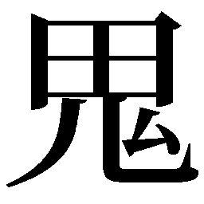子母神」が運び込まれ、四方のＬＥＤディスプレイからは生前の倉田の悪相が来客たちを見張っているという趣向。鵜飼の仕事だろう。倉田の末娘と再婚している。
理事の席を埋めるのは桐島赤夏だと聞いた。すると鵜飼は失脚する。赤夏は千寿に冷遇されてきた私に同情的。朗報が期待できそうだ。客観的に、千寿らの作風を継承しているのは私だというのに、皮肉な話である。
どういう縁故でか舞台役者の残波一鉄が来ていた。同行の真由里を私から引き離して、しきりに口説いている。真由里がちらちらとこちらを見るので、好きにしろ、と目で合図を送る。やがてふたりとも消えた。
子母神を正面から見上げると、ちょうどその顔に絹子の顔が重なった。幻との合成のほうが儚いながらも圧倒的に美しいという、この厳然たる事実。やはり千寿も私の隣人に過ぎなかった。美藝院さえ世の醜きによって支えられ、私が過去に見出したうち至高の美は、もはや幻でしかない。
容姿に過剰な自信を懐いていることさやかな女が、私を私だと判ったうえで名刺を差し出してきた。化粧品会社の社長だった。
「一介の美術愛好家です。このような場でのご挨拶となってしまいましたけれど、先生とは一度、お話をさせていただきたいと思っておりました」
女はだいぶ聞こし召していて、その身はしきりに揺らいだ。すぐ後ろに絹子の顔が現れては消える。
「すこし後退ってください。全身が視界に入るように」
と頼むと、勘違いをして空いた場所に行きポーズをとった。私も移動し、女の顔に絹子の顔をぴたりと重ねてみた。
「こっちを向いて。真っ直ぐにこっちを」
肌の色はほぼ合致しているし背格好もそう変わらないのに、ふしぎなほど絹子には見えなかった。絹子が年増の仮装をしているようにも見えない。絹子の面を被った年増でしかない。私は笑いだしてしまった。それが誤解を助長し、女社長は私をラウンジへと連れ出した。
コーナー席で私に撓垂れかかり、自分を塑ってくれと云いだした。こういう人物は珍しくない。しかし女で、しかも自分が買うと云った者は初めてだ。社員の研修施設に飾りたいという。相場を問うので高めに教えた。前金として半額、すぐさま振り込むとの返事。
「モデルを精査しないことには決められませんな」と私は答えた。
女はボーイを呼んで部屋を取らせた。部屋に入るや勝手に素っ裸となり、ベッドの上で膝を抱えて艷笑した。話に乗ることは既に決めていたが、断る理由がますますなくなった。私の前に踞っているのは毛髪を伴った肉の塊だった。私はこれを粘土の塊に変換すればいい。そしてそれはブロンズの塊に変換される。
某日
なにやら上手い工夫によって、絹子そのものを型にしたブロンズ像を制作してしまえば、美と創作にまつわるあらゆる問題が解決するのではないかという想念に、ウィーンでの私は常々囚われていた。しかしそうして完成した作品を具体的に想像するや、デスマスクめいた代物にしか思い至らなくなるのである。
デスマスクは幾つも見ていた。この美しい死に顔を永遠に留めたいという作者の想いだけはひしと伝わってくるものの、実際にその美がどこにあるのか、うまく見出せたためしがなかった。ひたすら散漫に感じられた。
散漫たる絹子の顔というのを想像すると、私はほとんど恐怖にかられた。美は、なだらかな山ではない。それは突端だ。それは崖っぷちだ。そこに立っているつもりで足許が散漫だとしたら、次に待っているのは奈落の底だ。
昔の私に問いたい。絹子以外のいったい何者に、絹子の美が表現しえたのかと。
どうしてお前は、自分にその資格ありと錯覚できたのかと。
初めて絹子の顔を見たとき、これは現実かと我が目を疑った。寒気を催させるほど整った微笑が、伸びやかな肢体と質素な衣服と大きな布鞄をともなって、バスの座席に収まっていた。彼女はなにも見ていなかった。外の景色の変化に反応して、ただ眼球を細かく揺らしていた。
バスがどんなに揺れても、不思議と彼女の頭部はふらつかなかった。少なくとも私にはそう見えた。車中で唯一絹子の顔だけが、正確な軌道を保っているように感じられていた。
私は完全に尾行の意識をもってバスを降り、彼女のしばらくあとを同じ速度で進んでいたが、実際のところ、普段と同じく通学路を歩んでいるに過ぎなかった。私の推測と期待どおり彼女は同じ美術大学の学生か、その実習のために雇われているモデルだった。
学内で私はさらに尾行を続け、彼女と友人たちとの会話に耳を欹て、その正体を染色科の一年生だと見極めるに至った。彼女がふたたび独りになるのを待って、相手をモデルだと勘違いしている素振りで声をかけた。彫刻科の斐坂という自己紹介に、その目許が幽かな動揺を示した。
客観的に、私は優秀な学生だった。もちろん未熟な模倣者の域は脱していなかった。なにかと彫刻科の代表として担ぎ出されていたのは、技術があるうえ、適度に破格だったからだ。老教授にも理解しやすい若者だったからだ。計算尽くで、私はその範囲に踏み留まっていた。
そこに絹子が現れた。私は絹子を待っていた。あとは狂うだけだった。
............
某日
今や手を伸ばせば届きそうなところに顔は有り、そして無い。まるで脳の上半分と下半分が世界の昼夜を同時に認識しているように、私はそれを錯覚とも現実とも確信できる。有ると云いきれば噓になろうが、無いと云えばそれもまた噓なのだ、私の脳にとって。
壁の連続模様をうっかり立体視してしまったときの感覚に近く、より確固としている。私は軽い内斜視、すなわち眼球が寄目気味なので、あの現象が頻繁に起きる。
顔は、両の瞼を閉じ気味にし、口角が僅かに上がっている。内なる悦楽を押し隠しているような表情だ。留学先のウィーンを訪ねてくれた絹子に、私は街の人々からおのぼりさん扱いされるのも構わず、のべつ幕なしにカメラのレンズを向け続けたものだ。あのファインダーの中の顔だ。
薄寒い中世都市の一角に、肩を竦めて佇む絹子。銀細工の台座に摑まれた、大玉の真珠。
某日
一時帰国したとき絹子と入籍し、次の渡欧では最初から同行させた。すこしフィレンツェで過ごしてからウィーンに舞い戻った。絹子は休学していたかたちだが、当初は自分なりの制作を進めてもいた。
日一日と彼女がみずからの制作に倦んで、美術館や画廊を巡ってはぶつくさ云うばかりの凡庸な美術愛好家に成り果てていく過程を、私は肯定的に眺めていた。そもそも絹子は、どうして美術大学に入れたのか分からない程度の技巧しか有しておらず、美を希求する動機も完全に欠いていた。顔が美しいから美しいものの傍がよかろうという周囲の短絡が、彼女に奇妙な高下駄を履かせ、当人もそのままよたよたと歩んできたようにしか見えなかった。
「子供の頃、なんになりたかった。画家？ ファッションデザイナー？」そんなふうに訊ねたことがある。
彼女は即座にかぶりを振った。しばらく考えてからこう答えた。「猿か熊の飼育係」
某日
触れた！
某日
目覚めて、寝床で懸命に腕を伸ばしてみたら、やはり触れられる。指先が確かに、絹子の鼻先の感触を捉えている。顔には産毛が生え、眉毛も睫毛もある。眉の上と口許には懐かしいほくろ。絹子が気にしていた薄いそばかすもある。やがてそのすべてに私は触れられるのだ。
触覚も脳の一認識に過ぎないのだから、私が東京の片隅で宙に浮かんだ絹子の顔に触れようが、ティラノサウルスの硬い皮膚に触れようが、それ自体は奇蹟でもなんでもない。死ぬまで誤作動を起こさない脳のほうが、余程のこと奇蹟的だ。いざ歯車が嚙み違えてしまえばこうも容易く踏み込める領域だったのだと、今は単純に、そのことに驚いている。
某日
二度めのウィーンで、私はなにも創らなかった。本当は前回も創れてはおらず、その事実に自分で気付いていなかったのである。しかし今度は文字通り、習作一つとして完成させられずにいた。
当初は名所旧跡にばかり気をとられていた私たちの目が、古都の隅々にまで蔦のように蔓延っている美の蓄積に慣れはじめていた。現実感を帯びたそれらに日常を侵蝕されてみれば、私の作業台に鎮座している半身など、骨董市で投げ売りされている土産物にさえ遠く及ばないのだった。いたずらに過剰なばかりで一向に均衡を得られずにいる、醜い土塊に過ぎなかった。
偶然から新奇な表現法を編み出せないものかと、私は思い付くかぎりの素材を買い込んでは、文字どおり捏ねくりまわしていた。切り刻み、殴り、踏みつけた挙句、食らおうとするかのように煮も焼きもした。
周囲との言葉の壁が、私と絹子をいっそう閉塞させていた。感情を露わにできる相手を、お互いに一人しか見出せない。口論は絶え間なく、絹子は頻りに日本に帰りたがった。才能を見切られたような気がした私が、感情にまかせて怒鳴りちらし、手の届くものを片っ端から破壊する。絹子が荷物をまとめはじめる。
最大の財産を失いかけていることに気付いた私が、平身低頭に詫びると、激しやすいが醒めやすい絹子も肩の力を抜き、私にも自分にも呆れたように吐息をついて、日溜まりのような一刻が生じる。しかしそれも和解の盃の一杯めまでの話。お互い酔いがまわってくると、蟻地獄にでも引きずり込まれるように、また諍いのエチュードを演じてしまう。
蟻地獄の正体は「創れない私」と「創ってもらえない絹子」の凄まじき苛立ち、その煽り合いに他ならなかった。絹子が本気で単独日本に帰ろうと意を決したことがあったとは、今は思えない。創れず創られずに帰国した私たちを、温かく迎えてくれる人々が母国にいようはずがなかった。親族に対して、学校に対して、私たちは賭金を積み上げすぎていた。
某日
眼球とノートとの間に一定の空間が生じると、そこに絹子の顔が生じて手許がよく見えなくなる。見えているが見えていない、触れられるが触れられない顔なので、書き物を続けることは不可能ではないが、机の下に沈んでいてもらったほうが楽なことは間違いない。天板に這いつくばるようにして、これを書いている。
昨日の続きを記す。あとで破り捨てる必要が生じるかもしれないが、ともかく記す。
ある雨の晩、泥酔状態で西駅近くの交差点に立っていた私は、迫ってくる銀色のタクシーに対して蝙蝠傘を武器に戦いを挑んだらしい。そこに至るまでの私の記憶はきわめて曖昧なので「らしい」としか記せない。実際に死のうとしたのか、そういう態度をとる必要にかられたのかも憶えていない。
はたと目覚めて、辺りを見回した瞬間のことは憶えている。集まってきた人々の足許で、舗石の隙間が規則正しいピンクの網目を成していた。私自身の血だった。見下ろしたシャツは鮮やかに染まっており、雨を浴びているにもかかわらず、片方の頰から顎、頸へとかけてが、温かかった。おそるおそる頭に触れてみると、額の上部がはっきりと陥没していた。高々と弾き飛ばされたあと、路面に頭から落下したらしかった。
じきに死ぬか、すでに死んだのだと思った。しゃがんで語りかけてくる人々の異国語が、大群衆のシュプレヒコールのように聞える。日本語でわめき散らして彼らを追い払った。それから十分ほどの道程を私は自力で歩いて、アパートへと帰ったのである。濡れた路面を自動車が踏む音が、私の有様に驚いて道を空ける人々の跫音が、遠い犬の啼き声が、まるで頭の内側から発せられているように、うるさくてうるさくて仕方がない。古都のノイズというノイズが私のなかで煮詰まっていた。きっと聴覚野がショートしていたのだろう。
......私は暗い部屋に立っていた、血と雨水に濡れそぼって。
「死にそこねたの」のシュプレヒコール。酔い痴れて、しどけなく壁際に座り込んだ絹子のシルエットと、その笑い声のオーケストラ。のちに私は、帰宅後のことはいっさい憶えていないと強弁した。本当はその絹子の声からあとのことは、飽きるほど見返してきた映画のように鮮明だ。ただし視点は私の眼球にはない。これまた映画と同様、ハイアングルから室内を見下ろしている。「憶えていない」が必ずしも虚偽ではない、私の内なる根拠がここにある。お前は何をやったとのちに与えられた知識が、私の脳内に映しだした情景である可能性を否定できない。
私たちの部屋は窓の一つが通り向こうの街灯に面しており、絹子はよく眩しいと文句を云っていた。狂騒的な音響とは裏腹に、場面を照らしているのは薄いカーテン越しのそのあかりだけだ。作業台は床に倒され、座板の外れた椅子が転がり、酒瓶や食器や仕事道具の残骸、日本から送ってもらった本などがそこかしこに散乱している。過去の類例からいって、私の所業に違いなかった。
足許にガストーチが転がっているのに気付いた私は、拾いあげてその搬機を引いた。偉大なる表現実験の数々の、虚しき残骸の一つであり、存在を忘れるほど放置していた代物だったが、噴射口は律儀に鋭い炎を吐いて、漆喰塗りの壁を輝かせた。
私はただ部屋を照らしたかったのだ。落ちていたのが懐中電灯ならそれを点しただろうし、間近に電気スタンドがあったなら紐を引いたはずだ。私は絹子の表情が見たかった。本当に絹子が冷笑しているのか、それとも私の脳が自嘲しているだけなのか。
絹子が炎に怯え、疳高く叫びはじめる。「私の顔を焼くの？ ライフワークのモデルを焼くの？ 本気で焼くの？」
焼くの？ 焼くの？ 焼くの？ 十万人の絹子に騒ぎたてられ、罅割れていた私の頭蓋が破裂する。血まみれの私が振り返り、許諾を求めるようにこちらを見つめてきた瞬間を、どうしたことか私は脳裡にくっきりと再現できる。そして自分が頷き返したことも。
私が絹子に飛びかかって馬乗りになる。そして私はその顔を焼く。
某日
昨夜は日記を書きながら酔いつぶれ、机に突っ伏して眠ってしまった。明け方、このところの一切を忘れた状態で頭を上げ、するとノートの紙面から絹子の顔が浮かんできて、跳び上がらんばかりに驚いた。
いま私の眼前にある顔は、高温の炎によって表皮を溶かされ蛋白質が凝固して、白い紙粘土の仮面のように成り果てる間際の、あの絹子の顔である。恐怖によって引き攣っていたせいか、それとも本当に私を嘲ってか、能の小面が俯いたような、薄らとした笑みがそこにはあった。
今の私はその顔を、撫でまわすこともできるし、決して触れられずにもいる。「どちらの事実も肯定しきれない」という曖昧な感覚ではなく、「どちらもが現実的でどうにも否定できない」。
顔には確固とした質感がある。やや湿った滑らかな皮膚も、その向こうの頰骨も、唇やその内側の歯列も、私の指は感じることができ、その事象を私は打ち消しえない。
マウリッツ・コルネリス・エッシャーに「三つの世界」というリトグラフがある。漣ひとつない湖面の画、と観てしまえばそれまでだが、逆さに映った対岸の木々、水面に浮かぶ無数の木の葉、そして手前には水中の鯉──すなわち地上、水面、水中の三つの世界が、同時に、均等に、そして静謐に描き分けられているという趣向だ。
あの鯉にとって世界はどのように感じられるのだろうと、少年のころよく想像した。おそらく世界は二つだ。水面までと、その向こう。陽光の具合によって岸辺の木々が水中にまで影を落としてきても、鯉にはただ場所ごとの明暗としか感じられない。
この明暗をはっきりと木々として認識してしまった鯉が、今の私ではなかろうか。水中に居ながらにして、木をよじ登ることも空を舞うこともできる、二重の存在。
真由里を呼びつけて久々に抱く──頭の高さを一定に保ち、その顔にちょうど絹子の顔が重なるようにして。期せずして頭を落としてしまうと、絹子の顔の向こうから、真由里の頰や鼻先が現れる。距離をとれば絹子、口づければ真由里。玩具としては面白いものの、期待していたほど神秘的な体験ではなかった。まず真由里という素材がいただけない。女社長は論外として、多少薹が立っていても珠穂のほうがましだったろう。
喉元に手をかけ力を込める。真由里は新しい遊戯だと思って抵抗しない。両手で本格的に絞めつけて絹子の面をかぶせ、やがて酸欠によって手足がばたつきはじめたのを面白がっていた。
不意にばたつきがやんだ瞬間は殺してしまったと思ったが、力を緩めるや私を突き放し、ベッドから飛び出していった。女がなにやら叫んで衣服を身につけ、玄関に向かうさまを、私は絹子と微笑み合いながら眺めていた。
某日
顔だけの亡霊が、十五年をかけてウィーンから私を追いかけてきたというふうにも、また考えられまいか。今は女子校で美術教師をやっている川村は、交通事故で片脚を失ったあと、水虫が痒いが搔けなくてもどかしいと云っていた。阿羅漢教の連中だったら、それは脚の亡霊に憑かれているのだとでも云いだしかねない。医者は川村に脳の錯覚だと説明していたらしい。しかしそんなことを云えば、人生そのものが、我々が認識している宇宙全体が、脳の錯覚に過ぎない。
絹子の顔を焼いた翌日、私は動物園のマレー熊たちの眼前で身柄を拘束されたと聞く。治療を受けて日本に送還され、その後の五年間を幾つかの病院で転々として過ごした。私の治療費と裁判費用を背負わされていた父の食品加工会社は、そこに不況の煽りを食らって倒産。父は「樹海に行く」との書置きを残して失踪した。そう母から聞いた直後、銀座の画廊が、ウィーン時代の習作が残存していれば買いたいと連絡してきた。
翌週、阿羅漢教の連中が束になって見舞いにきて、『贖罪』をテーマにした連作を注文して帰っていった。習作を買ったのも彼らだった。自分が良くも悪しくも「有名な彫刻家」になっていることを、私は初めて意識した。まったく予想外のかたちではあったが、確かに絹子は私を成功の扉へと導いたのである。
宙に浮かんだ絹子の顔は、今や鼻先が触れそうなほどだ。
このまま私と一体化するのだろうか。それとも私を通り過ぎていくのか？
............
某日
ついに鼻先同士が接してすら私は、では次は接吻だなどと吞気に構えていた。その数日後、軟骨がすっかり押し潰され鼻骨同士が皮膚ごしに押し合い、顔の中心に恒常的な痛みを覚えるに至って、ついに事態の深刻さを悟った。
一朝、硬質なノイズと閃光めいた衝撃によって、短く不快な眠りから引き戻された。顔の中心に、息苦しい強い鈍痛が生じていた。エッシャーのあの画に於ける〈地上〉認識での私の鼻骨は、陥没していた。
すでに額も絹子と接して、そちらにも激しい圧迫感をおぼえつつあった。一度砕けた私の前頭骨はアクリル樹脂によって補修されている。犯罪者ということで上等な手術をしてもらえなかったのか、十五年を経てなお、自分で触れてさえ周辺が痛む。
それまでの私は、絹子の顔と自分の顔は、一時的もしくは永続的に、なんらかのかたちで融和するものと思い込み、そのときを待ち望んでさえいたのである。美醜入り交じる曼荼羅めいたなにかが、そこに完成すると目して。
現実はそうではなかった。私と微笑の絹子を待っていたのは、ふたつの顔面のまるきり物理的な鬩ぎ合いだった。そして私の感覚的には、相手の顔のほうがだいぶ堅牢だった。
〈地上〉の視界は、絹子によって完全に塞がれている。近すぎてその肌に焦点を合わせるべくもない。私と彼女とでは眼の高さがだいぶ違う。瞬きをすると睫毛に相手の眉毛の感触が伝わってきて、そういう位置関係なのだと分かる。
〈水中〉認識に於いて覗く鏡には、以前と変わらぬ私の顔が映る。〈地上〉での痛みに表情を歪めているものの、鼻が潰れているでも歪んでいるでもない。そういう自分が、見えているようでも見えていないようでもある。二重認識に慣れ過ぎてしまったがゆえ、本来に近いその視覚を、私は、大切な力が欠損した、ひどく薄暗いものとして感じている。
ふたつの顔が鬩ぎ合っているなら、絹子も同じく苦しんでいるのではないか。そう思い至って電話をかけてみたが、母親の宣言どおり通じなくなっていた。以前、まだ真由里に強く執着していたころ雇って彼女を尾行させたことのある、土方という探偵の名刺を抽斗から探しだした。そして電話で、絹子の家の新しい番号を突き止めるように頼んだ。
「それだけですか」と気が抜けたような返事をする。
「それだけです」といったん答えたが、思い直し、「いや、もし可能だったら、遠くからでいいからその女を観察して、今の暮らしぶりを報告してほしい。病院にいるかもしれません」
「写真は必要ですか」
問われてみるまで思い付きもしなかった。咄嗟の判断でこう答えた。「写真は、要らない」
そうしているあいだにさえ絹子による侵蝕は進行し、次々と生じる新しい痛みに耐えかねて、私はその日のうちに救急車を呼ばざるをえなかった。救命士にも医師にも顔が痛い顔が痛いと訴え続けたが、〈地上〉の痛みを〈水中〉の彼らが理解できるべくもない。何病院の何科で何検査を受けてみても私の肉体は健康そのもので、けっきょく用意されたのは精神科の一室──よりによってかつて入れられていた病院の、壁もカーペットもピンクの独房。
それから数日のうちに、〈地上〉認識に於ける私の、額のアクリル樹脂や鼻骨は脳にまで押し込まれ、上顎骨は砕けて土台を失った歯が口中に溢れ、眼球は圧し潰されて中を満たしていた硝子体を失った。それでいてなお絹子の顔は攻め入ってくる。二十四時間、そうして顔を潰され続ける感覚は、たとえそれが〈地上〉のこととはいえ、痛みや苦しみといった言葉で表現しうるものではない。敢えて表現を求めるとしたら、それは重い。際限なく重い。そして熱い。業火のごとく熱い。
〈地上〉の脳にもエンドルフィンは生じるらしく、ふと重さ熱さが遠ざかる瞬間があり、同時に私は気を失うように睡りに落ちる。間もなく悲鳴をあげながら目を覚ます。
珍しく痛みではなく人の気配で目覚めると、床に固定された一人掛けの上に、土方の姿があった。
私はベッドに横たわったまま、「私の顔、どう見えますか」
土方は立ち上がり、肩を竦めた。「相変わらずハンサムでいらっしゃいますな」
「潰れていませんか」
「斐坂さんの顔が潰れているなら、私の顔などクレーターか噴火口です」
「よくここに居ると分かりましたね」
「探偵ですから。いまご報告、宜しいですか」
「手短にお願いします。いつまた痛みが襲ってくるか」
「では端的に。お元気そうでしたよ。地元の園芸店にお勤めです。お綺麗な方なんで驚きました」
「遠慮せず正確に報告してください。顔が一度、非道いことになっている。治療したところで現状がどの程度かは、想像がつく」
「もちろん、そのくらいは下調べさせていただいたうえで、あちらに出向いたんです。こう見えてもプロですよ。だから驚いた。非道い火傷を負ったことのあるお顔とは、信じられない。過去の記録になにか取り違えがあるのでは、とさえ。そこで念のため同僚の女性には接触しました、保険の調査員だと称して。つい」土方は云うべきことを度忘れしたように言葉を切った。視線を彷徨わせていることから、報告の中身に自信を持てずにいるのだと分かった。「つい最近までは、悲惨な過去を窺わせる、腫れぼったく非対称のお顔だったそうです。ここ何週間かのことですよ、と云われました。ここ何週間かで急速に腫れが退いて、別人のように──」
顔の痛みが甦ってきたので、私は手を揺らして土方を追い払った。
「電話番号と請求書、ここに置いておきます。やっぱり写真もあったほうが良かったですかね」
手の振りを大きくした。きっと私には怖くて見られまいと思った、昔どおりの絹子であれ、別人のような顔であれ。
創っては壊し壊しては創りの人生を自認してきたが、正しくは、創っているつもりで何もかも壊し続ける人生であったかもしれない。私の〈地上〉の顔面を破壊してきたのは、私が未だ認識できずにいる〈地上〉の両手であったかもしれない。むろん私の心が安らぐのは、絹子の復讐だったという解釈のほうだが。
頭の前半分が潰れ果て、死んだ細胞が腐敗し崩れ落ちた時点で、絹子による侵蝕は不意に終わって、お蔭でこのところは庭を散歩したり、こうして日記の続きをしたためられるようにもなった。見つめ合ってきた絹子の顔も、同じように潰れて腐敗したと認識すべきなのか、それとも役目を終えて蒸発したか、はたまた急に軌道を変えて天にでも上っていったか。〈地上〉の視覚を失ってしまった私に、それを見届けることはできなかった。
他の〈地上〉の官能も思考も、また大切な記憶に至るまで、苦しみと一緒に失ってしまったようだと、過去の記述を読み返すたびに痛感する。なにが寂しいといって、あれほど眺め、撫でまわしてきた絹子の顔を、今の私は一向に思い出せないのである──二十歳のとき車中に見た、あの凜々しい彗星のような絹子さえも。
それでいて見えない絹子がこれまでになく恋しくて、顔の無い私は日々病院の庭に立ち尽くし、涙を流すことすら叶わずに、剝き出しの脳を乾いた風に晒している。
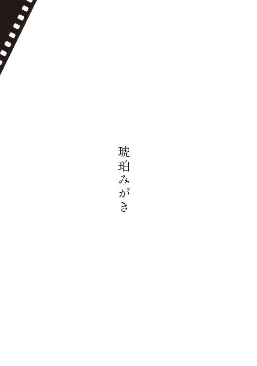
格上の職人が形をつけた石を、グラインダーでぴかぴかになるまで磨きあげる。手先の器用なノリコは工房から重宝されてきたが、いくら誉められても、素直に受けとめることが彼女にはできない。もっと自分に合う、恵まれた仕事があるのではないかという思いが胸の底にある。今の仕事は単調で、食事は変化に乏しく、寮は狭く、給金は安い。朝から晩まで琥珀に触れていながら、自分ではただの一個も買えやしない。
もしお金があったとしても、太古の塵や空気や虫の入った、茶色い石なんて私はいらない。小さくてもいいから、澄みきった青や、緑や、赤の、硬い石で、むなもとや耳たぶを飾りたい。
ノリコの横で機械を使っているのは、ミツルという頭のわるい青年だった。お祖母さんがイタリア人だとかで、白い石のような肌をしていたが、目の輝きはうつろで、口許もだらしない。琥珀みがきの手際もわるい。取り柄といったら、お祖母さんから聞いた物語をたくさん憶えていることくらいで、よく作業をしながら、誰に聞かせるともなく、それらをぶつぶつと最初から最後まで語る。ノリコもついつい耳を傾ける。
物語はさまざまでも、締めの言葉はいつも同じだった。幸せに暮らしました、だとか、いつまでも悲しみました、といった結末のあと、彼は必ずこう言い足すのだった。
「でも私には何もくれない」
それを聞くたび、ノリコは吹きだしそうになった。お祖母さんのただの口癖だったのか、それともイタリアの伝統なのかは、ミツル自身も知らない。
二十歳になるすこし前、ノリコは親方のお使いのため、首都へと至る寝台列車に乗り込んだ。下の寝台の青年が陽気に声をかけてきて、ふたりはデッキでジュースを飲みながら話しこんだ。青年は休暇を故郷で過ごしてきた学生だった。ノリコが首都は初めてだと知ると、街の色々なことを教えてくれた。それは荒唐無稽な昔噺などではなくて、都会にいる誰もが体験できる、本当の話ばかりだった。
深夜になって車内のあかりが落とされても、眠りたいという気が起きなかった。ノリコは誘われるがまま青年の寝台に入り込み、カーテンを閉じて、朝までそのなかに居た。
首都の駅で列車を降りるまでに、もう村には戻らないと決めていた。お使いを済ませると、親方への荷物に退職願いを添え、より田舎で暮らしている両親には、都会で素晴しい仕事が見つかったという噓の手紙を出した。それから、青年に教えてもらった彼の住所を訪ねた。
そこには大きな公園が広がっていた。教えられた電話も通じなかった。夜までかかって公園のまわりを一周し、ようやっと、自分はでたらめを言われたのだと諦めがついた。彼女はがっかりしたが、しかし絶望するにはあまりに若く、体力と気力に溢れていた。まだすこしお金も残っているし、きっとなんとかなるわと彼女は考えて、窓あかりやネオンの多い方向に歩きはじめた。
事実、なんとかなっていった。食べていくための小さな仕事も、親切な人々も、ふさいだ気持ちを吹き飛ばしてくれる楽しみも、彼女に恋をする男性も、都会には満ちていた。ある男性は赤いルビィの耳飾りを、ある男性はダイヤモンドの入った時計を、彼女にプレゼントした。もちろん良いことばかりではなかった。ある男性は彼女からお金をだまし取っていったし、ある男性は奇妙な病気をうつして逃げていった。それでも工房の退屈な毎日を思い返せば、自分はずっとましな場所にいるのだと彼女には感じられた。
病院の待合いで診察の順を待っているとき、痩せこけた男の人が入ってきて彼女の隣に座った。ノリコにはすぐに寝台列車の学生だとわかったが、相手はいっこうに気づいてくれない。とうとう彼女から声をかけた。青年は目を見開いた。悪びれることなく、あまりに違っているのでわからなかったと言った。どう違っているかは教えてくれなかった。髪や洋服が都会ふうになったという意味か、病気で顔色がわるいという意味かの、どちらかだわと彼女は考えた。
もう恨んではいませんが、と前置きしてから、噓の電話や住所を教えられて落胆した話をした。青年は意外そうな顔をした。それから話しこむうち、住所については彼女の間違いで、電話については彼の過失だとわかった。あの日彼女が訪れたのは、似た名前の別の街だった。電話は、彼が休暇のあいだ料金を払わなかったせいで、一時的に通話が停まっていたのだった。
彼女がずっと首都で暮らしていると知った彼は、たいへん驚いて、病気なら早く故郷に帰ったほうがいいよと忠告した。ここでは治らないよ、僕ももうじき帰るんだと言った。
青年の弁に反して、ノリコの病は都会ですこしずつ癒えた。しかし仕事は失ってしまったし、以前のように楽しくやっていけるという自信も薄らいでいた。いま一度、故郷の景色を眺めてから、このさきどう生きていくかを決めてもいいと彼女は考えた。そして寝台列車に──。
翌朝、普通列車に乗り換えようとしていて、工房のことを思い出した。行ってどうしようというつもりもなかったが、駅を離れ、あのプレファブへと通じる海岸の道を歩いていると、ずっと昔、そこを初めて歩いたときの晴れがましい気分が甦ってきた。
工房は、あとにしたのが昨日だったかのように、在るべき場所になんの変化もなく在った。窓に近づき、硝子の土埃を指で拭った。ミツルがぶつぶつと口を動かしながらグラインダーを操作しているのが見えた。隣では知らない女の子が作業していた。やがてミツルが口を閉じると、女の子は顔に手をそえて笑った。
ノリコは窓を叩いた。しかしグラインダーの音がうるさいのか、誰も彼女のほうに顔を向けてくれない。窓枠に指を掛けたが、建付けがわるくなっているらしく、びくとも動かなかった。
むかし琥珀を磨いていて、なかの虫が動いたような気がし、爪でこつこつと叩いてみたことがある。もちろん太古の虫が反応するはずもない。土のなかで何千万年も睡り続けていた彼らが、掘りだされ、うわべを磨かれたからといって、なんで目覚める必要がある？
木漏れ陽で薄黄色く染まった工房の景色から、ノリコは顔をそむけた。そして歩きはじめた。ここに樹液を満たして時間を止めたのは私なのに、またそのなかに入り込もうとするなんて、柄にもない真似をした。すこし体調がいいからと薬を吞むのをやめていたせいで、熱に浮かされているようだ。
海岸へと下りていくノリコは、一枚、新しい知恵のマントを羽織っていた。彼女は都会に戻り、今度はうまくやっていくだろう。もともと手先の器用な、恵まれた女の子なのだ。身の丈に合った幸せを、ゆっくりと摑んでいくだろう。
でもきっと、私には何もくれない。
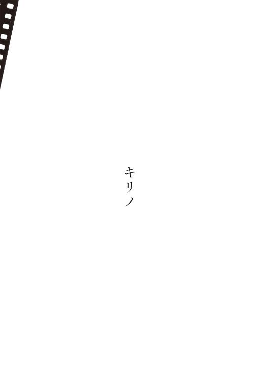
おまえキリノに惚れてるんじゃないのかと言われて必死に否定してしまい、図星だったらしいぜ図星だよおいみんなこいつキリノに惚れてんだってとすっかり立場をわるくしたことがある。そのときいちばん騒いでくれたフラノがＢ組ディートリヒ嬢の微妙な美貌を絶賛するような調子でキリノの面影を脳裡にうかべた経験は僕にはなく、うかんでくるとしたらこういった感じだったよというのをこれから書いてくわけだけど、かりにそれがフラノ式であったとしてところでいったいそれは恥ずかしいことなのか、フラノのおふくろさんにだって間違いなくキリノ的アトモスフィアはあり、それも含めたうえでのフラノのおふくろさんにフラノのおやじさんが惚れてその愛の結晶たるフラノおまえが生まれたんじゃないのかといっぺん問いただしてみたい気持ちは今もある。ていうか恥ずかしい言葉をいま使った。愛の結晶ときた。こんど会ったら一発殴ってくれ。
キリノがキリノ的アトモスフィアを発散しやすかったのは、馬鹿みたいなこと言うようだけどまずキリノの身長が高かったからじゃないかと思うんだよ。世の中ってけっこうそういう居心地わるいくらい単純な原理の組合せで成立してるんじゃないかと思いつつ、はっ、いま気がついたんだけどまるでキリンの活用形みたいじゃないかキリノって。まあ見上げるほどじゃないにしてもキリノはフラノより高かったし僕よりも高かった。キリノが教室で立ち上がってあたりを見回してるとなぜか県教委の人間が視察にきてるみたいに見えた。そう感じてた教師も多いんじゃないか。まさに自分が見張られていると錯覚してキリノは自分に手厳しいとか批判的だって被害妄想に陥ってるやつもいたようだけど、そういうときって本当は相手が自分を見てるんじゃなくて自分が相手をじっと見てるもんだからたまに視線が合うのに過ぎないんだ。キリノのほうは教室のなかのだれのことも考えてやしなかったろう。学校が終わったら今日はどっち方向に寄り道して帰ろうかとかそんな感じだったと思うよ。
強引にフラノの親へと話を戻すと、フラノのおふくろさんなんか見たことないしフラノに訊ねたこともないからその身長は知らないわけだが、かりにフラノのおふくろさんがえらくちびだとしても彼女がキリノ的アトモスフィアに縁がないということにはならない。どんな人間だってどこかのだれかよりは背が高いものだし孤絶して見える瞬間はある。そしてそれが肉体的あるいは精神的に女だってことになったら多かれ少なかれキリノ的アトモスフィアを発散するもんだと僕は考えてる。普遍的なんだ。キリノはその突出した一例に過ぎないんだけど男子の多くはキリノを知ったとき初めてキリノ的なものが自分の人生を横切ったと錯覚しそれをキリノの特質のように誤解して、たとえばキリノがしばらく学校を休めば校内のキリノ濃度がゼロになり幼児期に体感していたような自分だけを中心にした生ぬるい空間が蘇るくらいに思いこんでしまう。でも僕にいわせればディートリヒにだってキリノ的瞬間はあったしカネハラなんかそうとうキリノだった。とにかく普遍的なんだ。
男子にしてはキリノと話すほうだったと思うよ。三日に一度くらいの頻度でプラクティカルな会話をかわしていた。輸入ものの古着を売ってる店はどこにあるかとかなんでこの街の夕方はこんなに蒸し暑いのかなんて英語の教科書に載ってそうな会話に過ぎないんだけど、そのたび自分が試されてるように感じてたのもまあ事実だ。
「ふうんそうなの。それって漢字でどう書くの」って素朴に訊かれて凪って字を書けなかったらって実際に書けなかったわけだが、するとその後の高校生活というか恋愛とか宇治アイスクリームぜんざいとか安物なのにうっかり気に入っちゃって履きつぶしつつあったニューバランスとか明け方に聴いたら猛烈に感動してしまってもう寝るのをあきらめてイントロを完コピした曲とかがなにもかも、ウェブから拾ってきたやくたいもなきゃ信憑性もない情報と同列になってしまうような気がするじゃないか。するじゃないかってべつに同意を求めてるわけじゃないんだけど、とにかく自分自身がブログの自己紹介みたいな平べったい存在になるのだけは悪魔に魂を売り渡してでも避けたかったわけですよ僕は。ないできたとか口ではしょっちゅう言ってるくせに頭のなかには萎って字がうかんでてしかもそういうのを恥と感じなくなっちゃったらさ、そんな人生は「好きな靴：ニール・バレットがデザインした限定品のプーマが最近のお気に入り」だとか「よく人からエキセントリックな性格って言われます。自分ではそういうつもりはないんですけど・・・」なんてうかつな代物を顔文字つきで世界に向けて発信する、そのアップロードの一瞬を何十年にも引き延ばしたようなもんだと思うんだ。ニール・バレットのプーマは欲しいけどさ。
ちなみに僕が宇治アイスクリームぜんざいを常食するようになってたのは、きょうキムに誘われて学校の近くで宇治アイスクリームぜんざいを食べてさと自習をサボってという部分を抜いておふくろに話したら、おふくろが微妙に顔色を変えてそれは店のなかで食べたのかそれとも外で食べたのかってきくわけ。そういや穴蔵みたいな店内には空の椅子が並んでいたのにキムは外からおばちゃんを呼びつけて注文してやがてスプーンの刺さった器を受け取ると当たり前みたいに店から離れてって路上のベンチで食べはじめたなあとか答えた。そしたらその店はうちの親戚だって言うんだよおふくろが。あの店ってうちの親戚なんだって。家が狭くて夏は店舖以外に涼む場所がないから客を入れたがらないんだとか。ちょっと待ってよなんですぐそばの学校に通ってる息子にその事実を教えずにきたんだと当然問いつめたわけだが、親戚同士はいろいろあるからと濁されただけでどの程度の親戚なのかも教えてもらえなかった。それ以来親の不義理をこっそり穴埋めするようなつもりでキムに誘われたら断らないようにしてただけなんだよって、なんでこんな言い訳してるんだろう。きっと脳内キリノに対してだな。
塀をのり越えて校内に戻った瞬間をキリノに目撃されたことがある。
「チマツリなに食ってきたの」って訊くから、
「宇治アイスクリームぜんざい」と教えたら、
「ふうん甘いもの好きなんだ」って笑われて、今にして思えば完全にこっちの誤解なんだけど僕は嘲られたように感じてしまった。だから強い調子で、
「たまには食うこともあるけど女みたいにのべつ食ってるわけじゃない」
「あらチマツリって女はのべつ甘いもの食ってるって信じてるんだ。それって自分の母親を基準に考えてるだけなんじゃないの」と言い返されて、あのときはもうこいつと口をきくことはないだろうとさえ思ったわけだがキリノの弁はたしかに事実を言い当ててたし攻撃的な意図もなかったというのはのちの態度でわかった。住宅地を猪が歩いてるとするじゃないか、するとある人は悲鳴をあげるしある人はへえ猪だってちょっと驚く程度だし日頃から都会の猪や狸や鼬に肩入れしてる人だったら行け行け突っ走れとでも叫ぶかもしれない。でも猪は猪でしかない。キリノの言動ってのはけっきょくどれもそうだったと今は思う。受け手しだいなんだ。
なんでナチュラルに猪の喩えが出てきたかっていうと、それはこないだ目撃したからですな帰省したとき。こっちに戻るまえにいちおう人として父親の墓くらい拝んどきますかってわりと家から近いもんで徒歩で行ったら、墓地の下の駐車場で至近距離にて鉢合せしてしまった。実家の山側から隣の団地に行く途中に猪が駆け下りてきたら車が横転するからって夜はタクシーが通ってくれない伝説の峠があるんだけど、僕が見たのは車をひっくり返すほどの大きさじゃなかった。せいぜい大型犬くらい。枯野の日だまりみたいなきれいな色をしてた。あれやられたよ闘牛みたいに前肢で地面をずざっとさ、本当にそういう行動をとるんだね。熊に出くわしたらどうしなさいってのはよくいわれてるけど猪への正しい対処ってのは聞いたことがない。野良犬に対しては下手に逃げずに眼を睨みつけてろって子供のころいわれてた。仕方なくそうしてたら不意に茂みのなかに逃げていった。冷静になって駐車場を見回すとツツジの植込みのまわりにびっしりと足跡がついて根元が掘り返されてたよ。山に食べものがないんだろう。
キリノ整形疑惑ってあったね、あれには笑った。一部の女子が意図的に流した噂に過ぎないよ。女子だと思う。僕に言ってきたのはどれも女子だったしそもそも男子って意外とそういうこと口にしないだろ。さっきから僕がキリノ的と称しているものはまず文科系男子に欠乏しがちと痛感しておる昨今ですが、でもあの件は女子っぽい。僕がそう思いたいだけかな。ともかくあいつ整形してるんだぜとかヅラかぶってるぜとかあるいはキリノに惚れてるんだぜとかさ、たとえそれが事実であってもわざわざレッテル貼りしてそこに集団の目を引きつけ自分の身は安全圏に置こうとする情緒はキリノ的情緒の対極だな。便宜上フラノ的とでも名づけようかフラノにはわるいけど。せっかく女に生まれたってのにもったいないことに終始一貫してフラノ的行動をとりたがる女もけっこういる。フラノ的衝動と戦い続けてこそ人間だろうと僕なんか思うんだけど、最初から負けてるうえに負けてることに気づかないやつがさ。おまえが整形してるって噂を聞いたよってじつは直接キリノに言ったことがあるんだ。韓国あたりじゃ普通のお洒落らしいし僕自身も不細工な顔を気に病んで性格を歪めるくらいだったら整形したほうがいいだろうって考えなんだけど、噂が本当だろうが事実無根だろうが聞かされたことを黙ったままでキリノに接し続けてるのっての気持ちわるいじゃないかなんとなく靴下が濡れてるみたいで。そのときのキリノの反応はみごとにキリノ的だった。「美人だから？」
普通はというかフラノ的衝動下においては、それどこで聞いたのとかだれが言ってたのとか顔のどこを整形してるってって聞き返すと思うんだよ。でもキリノがまず興味をもったのはそういう、いわば幾何学的な因果関係だった。君が会ったという女はたぶんキリノじゃない。仕事に関してはさ、キリノってのは思い切りのいいところがあったからいまどんな仕事に就いててもたとえ新宗教の教祖や幹部におさまってても不思議はないと思うんだが、わざわざ微妙に顔を変えるだとか昔の同級生に対して他人のふりをするっていうのはキリノっぽくない気がする。君がその女にキリノ的ななにかに感じたってだけなんじゃないかな。何度も言うようだけどそれはとても普遍的なんだよ。こう言われてなおキリノに違いないって君が主張するんだったら、いいよこんど僕もその店に行ってみよう。でもキリノじゃないと思うよ。僕にもじつはこの女キリノじゃないのかと思って電車に乗り合わせてた女なんだけどさ、一緒の駅で降りて尾行じみた真似をしてしまった経験がある。でもそういうときってなにも起きないもんなんだよ形而下では。新宿では降っていなかった雨が街の路面を濡らしていた。女は駅の階段を下りながらバッグから傘を出しそれを広げてごみごみした駅前通りに出ていった。傘を持っていなかった僕はパーカのフードをかぶってそれに続いた。女は通りの端に近いビルの地階へと下りた。階段の壁は漆喰で塗られて入口には手作り風の茶色い小さな立看板があった。ブレンドコーヒーが普通のと苦いのと二種類あってどちらも一杯八百円するようなタイプの喫茶店だよ。知らない街でもなかったが僕の生活圏じゃなく駅からすこし離れたその種の喫茶店にだれかから呼び出されるというのは考えられないし僕が自主的に入るタイプの店でもない。にもかかわらずその店には入ったことがあるような気がした。階段を下りながらやっぱりそこは初めての店で、自分が呼び出されたことがあるのは別の街の似たような店だったと気づいた。僕を呼び出したのはこっちで知り合った友達でここではＪくんとしようＪくんはそれから間もなく脳腫瘍で死んでしまったんだ。そのときももうだいぶ進行していたものの梅雨どきにふっと晴れ間が覗くように苦痛のない日があって、すると久しぶりに友達に会いたくてたまらないっていうか挨拶しとかないと間に合わないって気持ちも強かったんだろう。でもそうそうＪくんに都合を合わせられる人間ばかりじゃないよね、だから消去法的に家でごろごろしてそうな僕のところに電話をしてきたってわけだ。Ｊくんは自分の病状をよく把握していてもはや一ヶ月でも延命するほかないんだってのもわかっててとっくに死んでても不思議じゃないんだけどさって笑ってたんだけど、なにかこう奇蹟が重なったりブラックジャックみたいな人が現れてあと二十年とか生きられないもんかと願っているのも痛いくらいに感じられた。親への感謝の気持ちを何度も何度も口にしていた。親の子への愛ってたとえ他人ごとでも聞いてて胸のなかがかっと熱くなるくらいに物凄いよ。雑誌の付録の「願いが叶う超能力カード」が枕の下に忍ばせてあったとかさ、いつかＪくんのおふくろさんに会うことがあったら彼はちゃんと気づいて感謝していましたって教えてあげようと思う。小一時間そんなふうに雑談したところでＪくんは薬とかいろいろあるからって僕のコーヒー代も払って帰っていった。放射線治療で毛がないうえにたぶん手術痕もあったんだろうバンダナでおおってさらに野球帽をかぶった後ろ頭を見ながらあと何度くらい会えるんだろうなって考えたりしたんだけど、それから電話では何度か話したものの顔を合わせたのはあれが最後だったな。とにかく僕はキリノのように見えた女のあとを追ってそのときの店によく似た別の店に入ったんだ。そして声をかけてきた従業員や座ってるお客の顔を観察した。女性は何人もいたけれどキリノもキリノに似た女もいやしなかった。見覚えのある服装の女すらいなかった。店には別の出入口があって尾行されてると勘づいた女が僕を巻くためだけにこの店のなかを通過してったんだとかそれ以前の段階で僕は似たような傘を差した別の女を尾行してしまってたんだとか女は店の従業員でそのとき控室で着替えてたんだとかキリノは転校してったあとも水晶玉を通して昔の同級生を観察しててダメダメな生活をしてる僕にＪくんのことでも思い出しなさいってその店に導いたんだとかまあいろんな解釈が成立すると思うんだけど、ぼくはすでにＪくんとの最後の対面を再演しているようで胸がいっぱいで涙目にすらなっててさ、店でひとりでコーヒーを飲んでてもあのときうまく言えなかったこととかを思い出して悔いるばかりになりそうなんで、「いないや」と店員に笑いかけて外に出た。キリノはいなかったしもちろんＪくんもいない。またフードをかぶって通りを駅のほうに戻ってると急に雨がナイアガラかっていう本当に自動車がどれも一時停止したくらいの勢いで落ちてきて靴のなかもパンツもぐっしょり濡れちゃってさ、切なかったり惨めだったりそういう自分が可笑しかったりで僕は泣き笑いしながら歩いた。いつまでもふらふらしてんじゃなくて毅然と生きなきゃいけないとそのとき思ったな。人間いつ死ぬかわかんないんだからさ、うまくやれるかどうかはともかくせめて最期まで毅然としてなきゃ。
さっき思い出したんだけどキリノがときどき旭野公園に立ち寄って泣いてるのは家庭環境が不幸だからだって噂についても、その真相を知ってるって真相ってほどのもんでもないんだけどともかく知ってる。Ｄ組のヒダカって憶えてるかなスケボーで鎖骨折った。あいつんちがあの公園の傍なんだよ。公園を横切ってくのが近道なんだ。学校辞めるくらいの大怪我だって聞いてたんで帰りに見舞に寄ろうとしてたら、いや本当はそんなに心配してたわけでもなくて本当に学校辞めちゃって貸してたＣＤのことがうやむやになったらやだなと思ってさ何枚も貸しっぱなしだったから、そしたらフェンスぎわの坂下の家々が見える位置にキリノが立ってたしかにうううって啜り泣くような声をあげてた。はっとこっちを向いたんでキリノだとは気づいてないふりをしてそのままヒダカんちに行った。留守だった。仕方なく同じルートを戻ってたらキリノはまだう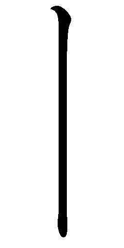ってロングトーンを発していた。どうも泣き声じゃないような気がしてきた。立ち止まって観察してた。キリノの声が増えた。ような気がした。よく聴くと増えたのは犬の声だった。キリノの声に反応してというか遠吠えと勘違いして下の家のブルドッグが同じように啼きはじめたんだ。見たことないかな茶と黒のまだら模様の通行人に吠えまくるブルドッグ。こないだの帰省のとき前を通ったんで庭を覗きこんでみたんだけど死んでしまったらしくて姿はなかった。犬小屋もガレージの隅に片付けられてた。そのブルドッグとキリノはしばらく遠吠えを張り合ってた。やがてずっと遠くのほうでも別の犬が遠吠えを始めた。キリノは高笑いしながらこっちを振り返って、「まだいたんだ。チマツリもやる？」
「やるか」ていうか出来るか。
ちなみにキリノは広島カープの安仁屋と外木場のファンだった。キリノに関していま思いつくことといったらそんなところかな。しかしいつの時代の選手だよ。
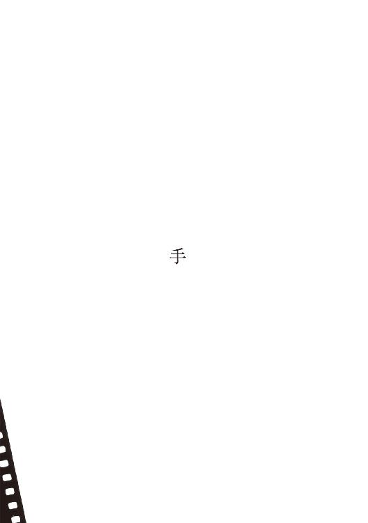
恐ろしいものなどない。
わたしにはいいきれる。もはや絶望することもないだろう。それらの最たるものを、わたしは少女であったころ経験してしまった。
鏡を見ると、耳たぶに空いたピアス孔から、白い糸のようなものの突端が覗いている。なにかと思い指でつまんで引っぱり出してみると、それはあんがい長くて、なかなか途切れない。そうしているうち不意に、停電に見舞われたように目が見えなくなる。真の恐怖を賞味する以前のわたしが、最もおぞましく感じていた物語のひとつは、学校の友達に教えられたこの都市伝説だった。そんな程度だった。
穿鑿好きの猫は長生きしない。今のわたしだったら、自分の肉体から覗いているものをその正体も知らぬまま引き出してみたりはしない。自力で好奇心を満たそうとなどしない。そもそも、たかが装飾のために耳に孔を空けたりしない。
伝説が、当時のわたしの背筋を冷たく撫であげたのはきっと、自分もその主人公同様、好奇心にあらがえず糸を引き続けてしまうに違いないと予感できたからだろう。それにちょうど、自分の耳朶に小さな輝きを纏いたくて堪らない盛りでもあった。
好奇心だ。あの頃のわたしはいつも好奇心に責付かれていた。ピアスはもちろん、マニキュアにも、口紅にも、流行の洋服にも、より多彩な音楽にも、アルコールや煙草にも、異性との接触にも、過剰な憧憬を抱いては、そのなにひとつとして得られずにいる自分に苛苛しながら生きていた。なのに現実世界でのわたしは、面皰だらけの赤ら顔をした、黒いべったりとしたおかっぱ頭をした、地方在住の一中学生に過ぎなくて、学校では円襟の蒼白いブラウスと藍色のジャンパースカートを、家ではたいがいトレーニングウェアを着込んでいた。三つ折癖のついた白靴下や、姿勢の矯正具のような運動用のブラジャーや、臍まで隠れるショーツしか持っていなかった。十四歳だった。
なにかと頭を擡げたがるわたしの好奇心を抑えつけることに関して、母は遠慮会釈もなく強権をふるった。例の都市伝説をわたしに教えてくれたのは、美和という名の級友で、苗字は......忘れてしまった。平凡な苗字だった。美和という響きは、今もわたしのなかに大陸的というか、鷹揚で開放的なイメージを喚起する。当時彼女から受けていた印象の、余韻の長い尻尾に過ぎないのかもしれないが。
頭の廻転は鈍いが、華やかな顔立ちをした、声の大きな少女だった。いつも唇をクリームでぬめらせ、脱色した髪を、ドライヤー技術を駆使してふんわりと左右に拡げていた。
「髪、コカコーラで色抜くんだって」初夏のある日、なんの気もなくそう、母に彼女のことを話した。その日を最後に我が家の冷蔵庫からは炭酸飲料のペットボトルが消えうせ、代わりに母の煮出した麦茶が常備されるようになった。万事、そういった調子だった。
わたしは少女漫画の月刊誌を定期購読していた。発売日の二日後、わたしが学校帰りに近所の小さな書店に立ち寄ると、それは必ず母が購読していた「きょうの料理」と重ねて黄色い紙袋に詰められ、レジスターの下の棚に保管されていた。二日後が確実。それ以前だと漫画誌のほうが未入荷のことが少なくなかった。当時の地方都市はそうだった。母から預かった二冊ぶんの代金を釣銭入れに置き、わたしは紙袋を受けとる。
母が自分ではけっして書店に近づきたがらないのをわたしはつねづね不思議に感じていたけれど、藪をつついて蛇が出てきては厭なのでいつも理由を訊ねられずにいた。蛇というのはつまり、わたしの好奇心が母の逆鱗に触れて、それきり漫画雑誌の購読を禁じられる可能性のことだ。おおいにあり得た。直感的というよりも、まるで発作的にものごとを決めてしまうくせに、いったんこうと決めてしまうと家族さえ啞然とするほど厳格にそれを遵守する人だった。他の判断は最初からあり得なかったといわんばかりに。
理由は、今となっては想像するよりほかない。彼女が書店を営んでいた一家のうちのだれかと仲違いしていたというのは考えられる。気の強い人だったから。店内に踏みいって、壁一面の本の前を通過するとき、不意に自分のなかに生じるかもしれない新鮮な好奇心を畏れていたとも考えられる。こちらが正しいとすれば、母は自分の好奇心の安全圏を「きょうの料理」までと明確に規程していたわけだ。
運は遺伝する。
母の母、わたしの母方の祖母は、母がまだ幼かった頃、親類の家の井戸に頭から落ちて死んだ。その瞬間を見た者はいなかったから、どうして彼女が軀のバランスを崩すほど深く深く見慣れていたはずの井戸を覗きこんでしまったのか、だれにもわからなかった。小さな闇の底に、いかなる輝きが見えたのであれ、音が聞えたのであれ、彼女の愚行は魔が差したとしかいいようがない。胸苦しいまでの好奇心が、わずかな時間、彼女の理性を麻痺させたのだ。
自分自身の好奇心に対してさえ母が怯えを感じていたとすれば、祖母のそういう死にざまと無関係ではあるまい。わたしの漫画雑誌はしばしば抜打ち的に母の検閲に遭遇した。気がつくと、唐突に頁が切られている。それが初めて読む漫画であった場合はさすがに怒って母に抗議した。
「怒るほど大切な本でもないでしょうに」などといって彼女は取りあわない。
読んでしまった漫画のときは気づかぬ顔をして、ただその頁がどうして削除されたのかをパズルのように捉えて考察することにしていた。消失しているのは、男女の抱擁や接吻の場面を含んだ頁のことが多かったが、裏も表も主人公がひとりで思索に耽っているのみだったはずの頁や、ただふざけたやりとりや風景描写の続いた、場繫ぎ的な頁のこともあった。
じつは母は切りとった頁をみな大切に保管しており、それらを繫ぎあわせて、自分だけの新しい物語をつくろうとしているのではないか。そう疑ってみたことがある。そこで彼女の留守中、家のなかの彼女専用の空間──裁縫箱や端切れを収めた菓子箱が詰めこまれた出窓の下の地袋や、システムキッチンの下方の抽斗──を探しまわってみたが、どこからも切りとられた頁は出てこなかった。わたしの雑誌のも、まだ幼稚園児であった弟の絵本のも。
わたしはケイト・ブッシュのファンだったがレコードを持っていなかった。買ってくれなかったし、買わせてももらえなかった。母に対してわたしがいちばん憾みに感じていたことが、じつはこれだったように思う。
ステレオセットは、父が家庭に持ちこんだ最も偉大な文化のひとつだ。なのにわたしには自分のレコードがない。ＦＭ放送からカセットテープに録音した彼女の歌を、母の気に障らぬようヘッドフォンで、こっそりと聴くのが精一杯だった。あとは、記憶を楽しむほかなかった。あのイントロを、歌声を、目を閉じ、正確な歌詞も知らないというのに、耳朶に甦らせては、それに浸るほかなかった。
＊
「ちょっと家出してみない」という美和の言葉に、わたしは好奇心をそそられた。夏休みの寸前だった。どこへかと訊ねた。理由でも時期でもなく、まず場所を訊ねた。屈託のない口調が、まるで小旅行へのいざないのように響いたからだ。
美和はいった。「鴉屋敷」
わたしたちは、中学生はみな、そう呼んでいた。あるいはお化け屋敷と。鳥が胸を反り返らせて、両翼を中途半端に拡げているように、なるほどその家は遠目に見えた。だから鴉屋敷。街の天辺にあった。故い街の。
眼前に瀬戸内海。背後には低く急な山山。海岸線から順に、新国道、路面電車の線路、旧国道、そして旧国鉄の線路が走り、おもだった街並は旧国道を囲んで細長く拡がっていた。白壁の土蔵や、石造りの公共施設、煉瓦造りの倉庫などがいくつも残っていたから、山手からの眺望は、往時を再現した博物館のパノラマのようだった。かつての、本来の海岸線は、路面電車の線路沿いにあった。わたしが幼児の頃にもまだ、新国道もそのむこうの高層マンション群も存在していなかった。
山手の立体的な住宅街をその外れから瞰おろす位置に、鴉屋敷はあった。古びた洋館だった。よほど近い距離から眺めても、外壁を被いつくした蔦と、鬱蒼とした庭と、背後の雑木林とが渾然となって、全体に黒黒として見えた。だから、鴉屋敷。
わたしは立ちどまり、屋敷の方向を見あげた。「空き家？」
通学路の、ほとんどどこからでも鴉屋敷は見えた。
「になってるの」と美和は得意げに言葉をつなげた。「住んでた人、死んだらしいよ。一人暮しの小説家だったんだって」
「あすこに泊まるの」
彼女はうなずいた。「家出だもん」
わたしは動機を訊ねた。生活態度のことで両親と喧嘩をしたのだと彼女はいった。だから二三日姿をくらまして心配をかけてやるのだといった。噓だと思った。喧嘩はあったかもしれない。しかしそれは家出を正当化するための、彼女の工作だという気がした。なにかが彼女を急き立てていた。たぶん、どの授業中にか夢想した、独善的な物語が。
「お酒、わたしね、隠してるの持ってく。煙草も。楽しいよ」
じつのところ、わたしは美和を愛玩していた。学級の花の従順な付人のふりをしながら、彼女のことはいつも高みから見おろしていた。わたしが彼女を手放さなかったのは、手放されずにいるふりを続けていたのは、彼女が好奇心の数だけ惜しげもなく自らに孔を穿って、もし糸が覗いていれば気が済むまでそれを引っぱり続けるさまがなんとも痛快だったからで、むろん一方には、そのうちいつ彼女がふっつりと失明するかを見届けたい気持ちもあった。わたしは母に反発していたが、同時に厳として彼女の娘でもあった。
美和の耳たぶに実際にピアス孔が穿たれていたかといえば、いや、そんなものはなかった。彼女と交流があったのは中学時代の一時だったから、その後のことは知らない。ともかく当時はなかった。耳朶に孔のある生徒など、中学にはひとりもいなかった。そういう時代ではまだなかったし、そういう土地でもなかった。
返答を曖昧に濁したまま、その日は彼女と別れた。家でＴシャツと短いズボンに着替えてからも、ずっと鴉屋敷のことを考えていた。死んでしまった小説家のことや、彼もしくは彼女がこの世に遺していった作品に思いを致していた。わたしの心が危険な夢想に囚われているのを察してか、母が、
「次の熊は。いつできるの」と訊いてきた。
縫いぐるみ作りは母が、わたしにとっての絶対的安全圏と直感し、許可した、数少ない創造活動のひとつだった。その前年の夏、いつもより余計にお金を渡されたと思っていたら、書店の紙袋のなかに「テディベア作りの本」という型紙附きのテキストブックが一緒に入っていたのである。わたしは自分がかつて母に、そのことへの興味を告白したことを思いだした。テキストの広告を、母は「きょうの料理」のなかに見つけた。そして電話で書店に注文しておいてくれたのだった。
材料の大半が母の持ちもので事足りたし、ジョイントの部品などは、母が通信販売で入手してくれた。わたしも不器用なほうではないので、自家製の縫いぐるみは着着と数を増し、その夏、わたしは六体めの、真赤な熊を製作中だった。アルフォンゾと名前の付いた、世界的に有名な縫いぐるみを模して作っているつもりだったのだが、雑誌に載っているその顔とは似ても似つかぬ顔付きに仕上がりそうで意欲を失い気味でいた。熊の顔はとても難しいのだ。
「いま脚を縫ってる」
「そう。飽きないうちに仕上げてしまいなさい」
晩、会社から帰ってきた父が、背広も脱がぬまま卓袱台の前に腰をおろしたかと思うと、筆入れに似た黒革のポウチと円くて平らな缶を鞄から取りだして、並べた。ポウチからは胡桃色のパイプが出てきた。ダンヒルだ、といとおしげに父はいった。火もついていないのに、ぷんとした煙臭さが居間に拡がった。
「──さんが、もう吸うのをやめるからといって。お母さん、マッチはあったかな」
母が、硝子の灰皿と使い捨てのライターを運んできた。
父はかぶりを振って、「ガスライターじゃだめなんだ。会社ですこし練習した。マッチじゃないとつきにくい」
母は台所のどこからか徳用のマッチ箱を見つけだして、持ってきた。父は円い缶の蓋を開き、なかに詰まった細かく刻まれた褐色の葉を、不慣れな手つきでパイプに移し、吸口をくわえ、マッチの焰を寄せた。やがてもうもうと立ち昇りはじめた煙を、わたしは芳香と感じたが、母と弟は臭い臭いといって遠ざかってしまった。父はやむなく台所の換気扇の下に移動した。慣れないとすぐに火が消えてしまうようで、しきりにマッチを擦っては点火しなおしていた。いつしか避難していた弟も台所にやってきて、父のそのさまを興味津津に見つめていた。
面白いことに、父の新しいもの好き、珍しいもの好きについては、あの母が、口では文句をいうものの、おおむね容認していた。そのぶん飽きっぽい人だという安心感もあったろうし、なにより父は、井戸に落ちて死んだ祖母の血を継いでいない。父がどんなものを家庭に持ちこんでこようと、わたしや弟がそれに触れさえしなければ母の心は乱されないのだ。
夕食後から深夜過ぎまで、わたしは自室で黙黙と熊を作っていた。むろん頭のなかは家出の計画のことでいっぱいで、そうして鴉屋敷のことを思っている感覚というのは、不思議と、その頃ときおりみるようになっていた、漠とした被虐的な淫夢のそれに酷似していた。翌日、美和に、気持ちが決行へと傾いていることを伝えると、彼女はもうすっかりその気になってしまい、
「じゃあ次の土曜日」といいだした。週末は両親が揃っていてお互い家を抜けだしにくいんじゃないかと意見したのだが、絶対に土曜日がいいといって聞かない。その頃にはもう夏休みに入っているのに、なぜ曜日を指定してくるのだろう。なにかおかしいと感じたけれど、鴉屋敷への好奇心がすべてにまさった。
学期が終わり、休暇の最初の土曜日が来た。ふと微睡から目覚めて机の置時計を見ると、美和と約束した午後三時まで、三十分とない。登下校の補助鞄として使っていた帆布の手提げに最小限の着替えと財布を入れ、帽子を被って、そっと家の玄関を抜けだした。父と弟は居間で扇風機をかけて昼寝をしていた。母は裏庭で洗濯物を干しているようだった。
鴉屋敷まではひたすら上り坂だ。汗が、はじめ帽子の縁を湿らせ、そのうち蟀谷から頸筋へとひっきりなく流れおちては、Ｔシャツの襟刳りをじっとりと濡らした。住宅街のなかの食料雑貨店で、菓子パンをいくつかと、ジュースを二缶買った。店の時計がわたしの気を焦らせた。約束の頃合にだいぶ遅れていた。わたしは道を急いだ。汗が吹いて、顔がぬるぬるになった。
今となっては奇異にさえ思われるのだ。わたしはいったいいかなる期待を胸に、あの夏の坂道を、ああも懸命に上っていたのか。
たかが美和との約束だ。その気紛れへのおつきあいだ。
家出、という響きに情緒を搔きたてられていたのは間違いないが、それを模したお遊びである。楽しめなければさっさと離脱するつもりでいた。たぶん、夜までにはそうなると予感していた。
なにがわたしの胸を、ああも高鳴らせていたのだろう。
高台に峙った、黒黒とした洋館、いったいどんな期待を、わたしは──
住宅街を外れて、鴉屋敷の私道と思しい未舗装路の半ばまで至ったとき、幽かな潮の香と、きな臭さを包みこんだような温い海風に、わたしは背中を押された。驟雨のような響きに耳を襲われた。雨ではなく、迫りはじめた屋敷の緑のざわめきだった。成長しすぎた庭の木々が風に煽られて、上空で枝を触れあう音だった。熊蟬たちが、しゃあしゃあしゃあしゃあ、どこかに隠れて騒いでいる。
美和は、彼女ひとりではなかった。近くで見るとずいぶん丈高な屋敷の門の前には、夏の午後の陽に熱せられた空気からとろけだしたような三つの影があり、あきらかに美和のものである中央の影よりも、左右の影のほうが頭ひとつぶん大きかった。
美和の言葉は、いつでもこうだ。だれに対しても虚言ぎりぎりの曲芸を演じる。欺かれた苦苦しさに、わたしの速度は弛み、撓んだ。
彼らのほうから近づいてきた。
「だれ」と美和が道を見通しながら問う。
わたしは坂を見おろした。だれもいない。「だれも」
「見えた。だれかいたよ。いないね」
他のふたりは、男の子たちは、どちらもわたしたちよりすこし年嵩のようだった。崩れた、品のない服装に、頂上までぴりぴりと神経の行きわたった髪の毛。ひとりが、親密そうに美和に寄り添った。ひとりは鞄を肩に上げ、目を細めてわたしを観察している。人数合わせだったのだ。畜生。
「四人で」肝心な事実を隠蔽していた美和を、非難するつもりで問いかけようとしたのだが、そのとき突然、しゃあしゃあしゃあしゃあと物凄く大きな声で啼きはじめた蟬がいた。四人してぎょっと屋敷のほうに目をやると、門の、赤錆の浮いた格子のうえに、大きな蟬がとまっている。しばらくしてそれがどこかに飛んでいってしまうまで、わたしたちは、じっとそこに見いっていた。
門は薄く開いていた。
ひとりひとり、その内側に入りこんでからも、坂道は、細まり、迂り、木陰を増しながら、だらだらとまだ続いた。奇妙な角度で張りだした低木の枝が、芝を割って高く噴きだした夏草が、しばしば行く手を阻んだ。荒れ放題の、廃園だった。
道すがら美和が少年らにわたしの名を教えた。彼らも名前をいったはずだが......憶えていない。さっき美和に寄り添ったほうは、すっと真直ぐな鼻梁の持ち主だったが、肌が透けて見える黒いシャツを着ていた。わたしのことをまじまじと観察していたほうは、両眼が極端に離れていた。もうじゅうぶん。
玄関は陰気な緑に囲まれて、あたりには白い斑紋のある藪蚊が群れていた。黒シャツがそれらを追いはらいながら先頭を切り、古い医院に見いだせそうな、色硝子の入った観音開きに左右の手を置いたが、鍵が掛かっているようで、動かない。手前に引いてみようにも、把手がない。
「二階から入れるかな」
「高いから落ちると危ないぜ。どこか窓、割ろう」
「どこからでも、ねえ、入って中から開けてよ」美和が少年たちにいう。少年たちは雑草を踏みわけ、踏みわけ、屋敷を被った蔦のむこうへと姿を消した。美和とふたり、日陰で藪蚊を追っていると、不意に玄関の扉が、手前に開いた。
「裏、開いてた。なか凄えよ」黒シャツが顔を出した。
この人、唇閉じない。もうひとりのほうがまだまし、とそのときは思った。続けてもうひとりが顔を出すと、すこしもましじゃない、と思いなおされた。そのうえ手に、刃を出したポケットナイフなど握っているのだ。屋敷の住人と出くわしたら刺そうとでもいうのだろうか。莫迦じゃなかろうか。心底、辟易した。
なかには入らずにこのまま逃げ帰ろうと決意し、美和の、汗で背中に密着したブラウスの背後で、わざと足を止めていた。するとそのとき、屋内の暗がりに白いものを見たのだ。ふたつの間抜け面の狭間に、ちらりと。
瞬間、わたしは怯えたが、続けざま好奇心に背を押された。
美和を追いこし、少年らも押しのけるようにして玄関に踏みいったのだが......だれもいない。ただ暗くて、ひやりと涼しかった。
目が慣れた。無人の、くすんだ広間だった。緋色の絨緞。
階段。
アップライトピアノ。壁紙の唐草。
「まだ人、住んでんじゃないの」と後ろの美和。
ふり向いた。
「一人暮しだった。店にときどき来てた」と黒シャツ。家がなにかの商売をやっているらしい。彼は人差指を自分の側頭部にあてた。「ずどん。自殺。身寄りもなくて、屋敷どうなるんだろってみんないってるぜ」
「ピストル？ ピストル？」美和は息を荒くした。
「そう聞いたけど」
彼らの顔にかかっていた陰が、薄まった。屋内へと向きなおり天井に目をやると、平たい茸を逆さに並べたようなシャンデリアに、橙色のあかりが灯っている。
「電気来てる」離れ眼が土足のまま絨緞の上にいて、壁のひとつに手を置いていた。少年らは、裏口からここまでも土足だったのだろう。しかし上がり框の上には、乱雑にだがスリッパが並び、その下には男物の靴が二足、脱ぎ捨てられていた。
「やっぱり人まだいるよ」美和がいったが、黒シャツは聞えなかったような素振りで離れ眼のあとに続いた。
「そのうちわかるか」と美和も土足で上がりこんでいった。
わたしはスリッパに履き替えた。礼儀を重んじたというよりも、土足というのがなんとなく気持ちわるかったから。
水も出た。
「出た」
とわたしが驚くと、美和が近づいてきて、
「そのうち止まるかも」
しかし、いつまでも止まらない。美和が冷蔵庫を開けている。空っぽに近いのが遠目にもわかる。
「でもチーズがある。賞味期限......あ、切れてない」嬉しそうにいう。
「戻したほうがいいよ。きっとまだ、人暮らしてる」
「戻すよ。でも、死んで間がないからだよ。人がいる感じしないよ」
そういわれてみればたしかに、人が暮らしているにしては、明白な生活臭が感じられないのだ。休暇中の学校のように、なにもかも余所余所しい。流し台も、床も、廊下に飾られていた版画も、電灯も、椅子も、食器棚も、なにもかもが。
では玄関で見た白い影は幽霊か。期待感が募った。怪談好きでも映画好きでもない。なのに、そう、この場所に思いを馳せながら黙黙と針を動かしていたあの晩も、それにきょうの午睡の夢想のなかでも、このぞくぞくするような感覚をわたしは味わっていた。今、わたしは鴉屋敷のなかにいる。白い影を、じき摑める。
探索すればしただけ数を増していく部屋のなかで、けっきょく少年らが陣取ると決めたのは、傑作なことに納戸だった。そう使われていたと見える小部屋の、床の上だ。廃物のような家具や家電がごてごてとそこここに置かれていたが、他の、たとえば応接間や書斎などにいて自殺者の生前の暮しをなぞるのは彼らにとって薄気味悪いことらしくて、まるで自分らにいい聞かせるように、ここでいい、ここでいい、と繰り返すのだ。
いちおう二階も見てみないかとわたしがいってみても、あとでいい、ここにいろ、ここにいろ、という。美和も彼らの声の肩を持った。どうせ彼らと一緒では白い影は現れまいという気がしたので、ともかくわたしも腰をおろした。安ウィスキーの罎や紙コップや袋菓子が床に並んだ。
暮れきらないうちから、みな、酔ってけたたましくなった。わたしにもウィスキーが分配されていたので、はじめは舐めていたが、そのうち眠くなってきたので買ってきたジュースに替えた。煙草とライターも放られたが、充満している白煙だけでたくさんだった。パイプの煙の香りはあんなに芳潤なのに、シガレットときたらまるで焼却場のにおいしかしない。
美和が、鮹のように真赤な顔をしている黒シャツに撓垂れかかったかと思うと、接吻を始めた。最初はお互い、啄むように。そのうちちゅうちゅうと音をたてて相手の口を吸いあいはじめた。離れ眼が、物慾しそうにこちらを見はじめた。わたしは膝を抱えてそっぽを向いた。違う。こんなんじゃない、わたしが──
美和との接吻の息継ぎごと、ウィスキーを呷っていた黒シャツの軀が、不意にぐにゃりと崩れる。泥酔して、軀を起こしていられなくなったのだ。他の三人で笑った。ところがそのあとの沈黙のあいだに、わたしもすっかり睡魔に囚われてしまい、顎を膝に乗せたまま、しばらく眠ったのである。
......黒シャツの声が延延と耳に響いていて、やがてはたと目を覚まし、小部屋を見廻すと、ちゃんと三人ともいる。美和は、驚いたことに今度は離れ眼と接吻していた。ブラウスの前をはだけていた。内側を彼の手が蠢いている。黒シャツが、横になったままぶつぶつと文句をいっている。怒っているのに、あまりに酔っていて起きられないようだ。
それにしても奇妙な姿勢で寝ていると思い、首を伸ばして覗きこんでみたら、彼の腕先は美和の脚の間に挟まっていた。もぞもぞと前後している。わたしは膝を抱えこんだまま、彼らから見えないほうの手をそっとスカートに入れ、ショーツの状態を確認してみたが、とくに異状はなかった。
ずるずると、黒シャツが美和の脚を這いのぼっていく。はじめ美和はその頭を手で抑えつけていたが、やがてあっさりと抵抗をやめて、むしろ黒シャツに都合がいいよう膝を離して立てた。ちらちらとこちらからも見える彼女のショーツが、わたしのものとさして変わらぬ、白い普通のそれであることに安堵しながら、またスカートのなかに手を入れて自分のショーツの縁を指で辿ったりしていたが、そのうちふっと気分が醒めて、こういうのはけっきょく耳たぶの白い糸を引っぱり続けた挙句に過ぎないのだという気がして、わたしは白い影を求め、ジュースの缶を手に小部屋から抜けだした。
そのまさに白い影が、廊下の闇のなかからふわっと涌きあがって、わたしは大声をあげかけた。
「しい」
という柔らかな囁きに、腹の力が抜け、そのまま口をつぐんで、ドアを後ろ手に閉じる。わたしと同年輩の少年だった。ゆらりと一瞬、少女かなと思い違いかけたが、少年だ。面差しは優しいが、髪は普通よりだいぶ長いが、歴とした男の子の、顎や喉をしている。その匂いすらする。
「......空き家かと」とわたしは、もし住人が生身であった場合のために考えていた言い訳をしかけた。
「し」少年はふたたび唇に指をあてた。しゃがんだ。ドアの下になにか、力を入れて押しこんでいる。見れば、木の枝の一部分である。片側が斜めに断たれていて、先端を細い隙間に差しこめるようになっている。楔なのだ。
少年は立ちあがって、微笑し、「もう開かない」
「どうなるの」
「気味悪がって窓から逃げだすさ。幽霊屋敷だから」
「わたし、どうしよう」
「好きにしてて。でもなかに戻ったら一緒に閉じこめるよ」
わたしはドアを指差し、「荷物」
少年はただ、
「なかに戻ったら一緒に閉じこめるよ」とだけ繰り返した。
「きみはぼくがだれなのか知りたい。生身の人間なのか亡霊なのか知りたい。なぜここにいるのか知りたい。ここがどういう屋敷なのか知りたい。知りたい知りたい知りたいように見える」
「知りたい」とわたしはうなずいた。頭のなかでいくつかの言葉を転がしたあと、「そのために来たの」
「へえ」
「それから、なぜわたしだけは閉じこめられなかったのかも知りたい」
「部屋から出てきたから」
「なんだ」
「それに、スリッパ履いてた」
少年もスリッパを履いている。脚を組み替えた。新しく宙ぶらりんになったほうが脱げ落ちた。ふたり、応接間の椅子に向いあわせて掛けている。少年は上げていた脚をやっぱり下ろして、こちらに身を乗りだした。「ここ長くいないほうがいいよ。外の時間、どんどん進んじゃうから。本当に、知るためだけに来たの。好奇心で」
うなずいた。
少年の視線が、わたしから逸れる。くだらない、と呟いたか、もしくはそんなふうに聞える歌の断片を口ずさんだ。
わたしは内心とても慌てて、「ここに住んでるの？」
「住んでは、いない。ときどきいる。まえも変な人たちが入りこんできた。あちこち、ちゃんと閉まらなくなってるから。不思議と、あの部屋に惹き寄せられるんだね。ぼくの力じゃ引きずりだせないと思って閉じこめといたら、勝手に逃げてった。きっと今度もそうなる」
「身寄りはいなかったと聞いたけど。死んだ、小説家」
「いたよ」彼は自分の喉元を指差した。「養子。だからここは今、ぼくの。でも暮らしてはいない。元の家にいるよ」
「ちゃんと家があるのに、養子なんですか。なぜ」
「彼がぼくを選んで、大人たちはみんなそれを承諾したから」
彼、と少年がいったので、小説家を男性と特定できた。「なぜ」
少年は口角を上げて、
「好奇心からかも。それでなにかが起きるのを、みんな期待してたと思う。最後には起きたよ」人差指を右の蟀谷にあてる。
「いったい、なにが原因」
彼は首を傾げた。「たぶん、それまでなにも起きなかったから。彼は淋しくて、小説じゃなくて現実でなにかを起こしてみようとして、でもやっぱりなにも起きなくて、もっと淋しくなった。今も淋しい。亡霊見たい？」
返事しなかった。すこし前から、少年の眼に、輝きらしい輝きが見あたらないことを発見していた。単純な、物理的な、反射光すらない。
「べつに見たくないなら、長くいないほうがいいと思うよ。ここにいるあいだに外でいろんなことが起きてて、あとでびっくりする。そういう場所なんだ。きっと亡霊の影響だね。亡霊と会う？」
すこし考えて、「怖い？」
「なにも起きないよ。亡霊はなにもしない。なにもできない。ただ淋しくそこにいるだけ」
少年が立ちあがったので、わたしも立ちあがった。彼に追従して広間に出た。彼は立ちどまり、しばらく息をひそめ、納戸の方向を指差して、「まだいるね」
階段を上った。
少年は廊下にあかりを灯すと、とあるドアの前に進んで、ふり返った。「手が見える？」
見えなかった。ただのドアだ、古い、下半分の汚れた。「亡霊の手？」
うなずいた。「ここが彼の部屋」
「そこで死んだの」
「そう。机の前で」言葉を切り、また蟀谷に指をあてる。「古い屋敷だからなんでもあるよ。ピストルも刀も毒薬も。どういう死に方だってできる」
「あなたも自殺したの」
「生きてる」
「自殺するの？」わたしはいいなおした。
彼は頭を左右させて、「もどかしいよ、亡霊なんて。ゆっくりなんだ。亡霊はとてもゆうううっくりと動く。たぶん彼まだ、自分が死んだことにすら気づいてない。部屋を見廻しながら、外に出ようとしている。手がドアを通り抜けてしまったことに、そろそろ気づいて、びっくり仰天するんだろう、またゆうううっくりとね。かわいそうな亡霊。かわいそうな手」
ドアの上、少年の細長い指が、優雅にさ迷う。
「人差指、中指。薬指、小指。彼の手だ。拇が立って、甲が撓ってる、なにか摑もうとしてるみたいに。でもなにも摑めない。ぼくも触れられない。いや本当は彼、なにもわかっていないのかもしれない。こっちの世界の目まぐるしい現実の、せいぜい断片だけかいま見て、あとは夢が埋めてるのかもしれない。ねえきみ、だから暗闇になんか、なにも期待しちゃだめだよ。幽かに音が聞えても、小さな光が見えてても、そこには本当は、なにもないんだ。ただ、ゆうううっくりな時間だけがある。そのくせぼくらを引きずりこむときだけは素早いんだよ闇は」
なぜこの人、わたしの祖母の死にざまを知っているのだろうと思った。
「ドア開ける？ 彼の姿を見る？ 半透明な彼のむこう側には、血や脳漿の跡が残ってる。わずかな汚れなのに、まるで部屋じゅうが深紅に見えたよ、あのとき」
ぼうっと、その瞬間だ。見えたような気がしたのだ、わたしにも、ドアの上に、淡く、奇態な熱帯植物のような、今しもなにかを摑まんと、反り返った、男の......あたかも夢で、わたしをいたぶってきた、力強い......禍禍しく、憾みがましく、哀しい、孤独な、ひとつの手。
手が。
「彼に会う？ 会ってあげてよ。一緒になって慰めてあげてよ。何十年かがかりでなら、伝わるかもしれない。そのくらいすれば彼も、気づくだろうから、自分が死んでることに。亡霊って、そんなんだと思う。きっと街じゅうのドアや壁から、こんなふうにして突きだしてるのさ、半透明の手や顔が。開けるから、彼に会ってやってよ」
わたしはかぶりを振った。少年の手がノブにかかる。
「開けないで」
「きっときみにも見えるよ、闇に落ちた姿」
「開けないで」
「好奇心の果て」
悲鳴をあげた。
長椅子にいた、猫脚の、古ぼけた。
テーブルの上に、ジュースの缶。
応接間を見廻したが少年はいない。死にかけたような壁紙が、絨緞が、額縁のなかの風景画が、飾り戸棚が、汚れた窓からの陽光を茫然と照り返している。
部屋を出た。広間を渡った。
廊下を進んだ。美和たちがいるはずの納戸の、ドアの下にはまだ枝の楔が差しこまれていた。しゃがみこんで、力を込めて、抜いた。
ドアを開けたが、だれもいない。彼らがそこで時を過ごしていたという痕跡すら見あたらず、わたしが持ちこんだはずの手提げすらない。黒シャツも離れ眼もわたしの夢想の産物に過ぎなかったのではないかと、わたしは生まれて初めて自分の認識を、その深層まで訝った。美和は？ いや美和は実在だ。彼女が夢だとしたら、わたしの人生は大半が夢だ。美和はいる。でもここには、いなかった。
胸騒ぎがして、まるで息苦しかった。追いたてられるように玄関に出て、外に飛びだし、庭を抜け、坂道を駆けおりた。きのうパンとジュースを買った商店あたりまで下りたところで、あとから坂を下りてきた乗用車にクラクションを鳴らされた。
立ちどまった。窓が開いた。
「照代ちゃん。照代ちゃん、どこでどうしてたんだ」そう、蒼白な顔をして叫ぶのだ。父の、会社の同僚だった。家が近いうえに気が合うらしく、よくうちのなかにまで押しかけていたので、わたしも顔を憶えていた。でも名前は、もう忘れてしまった。
「どうしてたんだ。乗って。早く。照代ちゃんち、大変なんだよ」
よくはわからなかったが、ともかくわたしは、意外と大袈裟に心配されていたらしい。助手席に乗りこんだ。
同僚氏は、初めて見る普段着姿だった。そうか、週末なのだ。ラジオがついていた。女性司会者が聴取者からのリクエスト葉書を読んでいた。それと、同僚氏の話との、両方を同時に聞いた。古い曲ですが「想い出のサンフランシスコ」を聴くたび、初めての西海岸旅行を思いだします、どうかよろしくお願いします、というのが葉書の内容。べつに、ラジオに頼まなくても、ひとりで聴けばいいじゃないのと思った。火事があったというのがもうひとつ。わたしの家族はみんな死んでしまったと同僚氏はいうのだ。
「お母さんがすこし家を離れてるあいだに、火が出たらしい。お母さん、煙を見てまさかと思って帰ってきて、燃えてたもんだから火のなかに飛びこんでったと、隣の若林さんから聞いた。警察が、照代ちゃんの遺体だけ見あたらないといってたんで、せめてもの希望は持ってたよ。いったいどこにいたの」
わたしは答えなかった。彼の言葉を信じてもいなかった。ただもし、もし万が一、そこに真実が含まれているのだとしたら......たとえばうちからちょっとした小火が出たとか、そういったことなのだとしたら、原因は弟に違いないという気がした。弟が、父を真似してマッチを擦ったのだ。好奇心からそうしていたのだ。
「じつはお母さんね、きのう、うちの前で見かけてた。住宅街のこんな外れに、なんでいるのかと思ったんだけど、声はかけなかった。なんでだ？ 照代ちゃんもだよ。いったいだれんちに行ってたんだ」
車が右折すると、路地の先に我が家が見えた。いや実際に見えたのは、惨状を人目から隠さんとして張りめぐらされた、ポリシートの青。わたしの家が建っているはずの場所だった。燃え残った柱や煤けた壁の上方までは、シートが隠しきれずにいる。あれがうち？ わたしの部屋？
車が停まった。わたしは降りられなかった。
同僚氏が助手席側にまわってきて、ドアを引き開けた。「どうする。さきに病院に行くか」
わたしはその顔を見あげた。「病院に、みんないるの」
彼は視線を伏せて、「息はしてない」
ポリシートの表面に、ちかちかとなにかが光っていた。わたしはとっさに車から飛びだした。でも、近づけない。近づくまでもなかった。わかったのだ。
手だ。シートの、そこから、ここから......あそこから、二本ずつ、全部で六本の手が、突きだしていた。どんな手か、観察してみるまでもない。わたしにはわかっていた。ふたつは、節くれだった大きな手だ。もうふたつは、血管の透けた、小皺の目立つ手。
そしていちばん遠くのふたつは、小さな小さな手だ。ふっくらと赤らんだ手だ。
額に手をあてて後退り、助手席に掛けた。ラジオからちょうど、ケイト・ブッシュの「嵐が丘」が流れはじめた。
「病院に行くか」同僚氏が運転席に乗りこんできて問う。
黙っていると、彼は車を後退させはじめた。どうした加減か電波の状態が悪くなって、放送は、白い、斑のノイズになった。ドラムが、あの素敵な拍子を刻みはじめる寸前だった。あの瞬間がいいのに。
路地を抜けると曲は甦ったけれど、わたしはどうにもあの瞬間が聴きたくて、聴きたくてたまらなくて、
「おじさん、レコード屋に行って」と彼に頼んだのだ。
レコード屋かと彼が訊ね返すので、そうだと答えた。しばらくしてまた訊ねてきたのでちょっと怒って、
「レコード屋」と強くいった。
母のことを思うと情けなく、わたしは苦笑すら泛べていた。美和が見た人影は、母だった。彼女はわたしを尾行したのだ。呼びとめればよかったのに。いい繕いながらも、わたしは家に戻ったのに。
しかし彼女はそうしなかった。わたしがどこに行くつもりなのか、突きとめたかったのだ、こっそりと。あとで叱る材料にでもするつもりだったんだろう。でも叱るための材料なんて、わざわざ苦心してつくる必要、どこにもない。
しょせん好奇心だったわけだ。母はただ見たかったのだ、小さな闇のなかの、煌めきの正体を。そして死んだ。道連れをつれて。けっきょく運命には逆らえない。運は遺伝する。好奇心に囚われてしまったが最後、いつどこで死んでも不思議はないのだ、わたしたちは。とするとわたしの屍体......と考えかけて、なにを考えようとしていたのかわからなくなった。......焼け跡......鴉屋敷......え、なにが？
レコード店の前に車が横付けになると、折しも入口のシャッターが開ききったところだった。わたしは車を降りて店内に駆けこんだ。カ行の札の手前を片端から漁ろうとしたら、するり、札とレコードの間の薄い隙間に手が入りこんでしまった。啞然として見廻した店内はたちまち古ぼけ、入口を見返すと、通りには父の同僚の車などなく、ただ見知らぬ街並が四角く輝いているばかりだった。
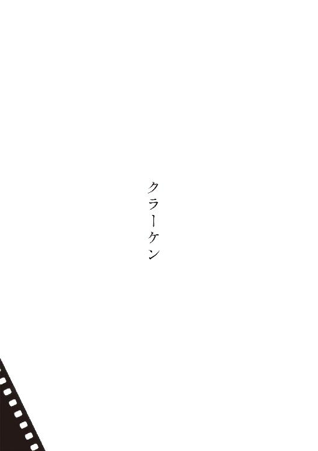
人間部屋もあるにはあった。二階の四畳半を女はそう呼んで、頑なに犬に踏み入らせなかったが、自分自身も出勤前と帰宅後の数分しか立ち入らなかった。ドアを玄関用の引戸に取り換えた、衣類と姿見だけの部屋である。ほかは悉く犬と共有の空間だった。たとえば便所にしても、女が籠もって便器に掛けているのを犬が取り残されたように感じ、ドアを力強く引っ搔いてくることがある。また壊されてしまっては厄介だから、錠を開いて軽く押す。残りは犬が鼻面で開く。そこが小さな密室に過ぎなかったことを犬なりに思い出して無理に入り込もうとはしないけれど、ふたたび取り残されるのを懼れて頭の半分を突き入れたままでいる。浴室についても同じ具合だ。犬の体臭と粗相した排泄物のにおいは、借家の床という床、壁という壁に染みついて、消臭液を何百リットルぶちまけようが誤魔化せそうになかった。家具や衣類も同様だった。犬は月に二、三度は庭先で全身を洗われて、近所のほかの犬たちよりは清潔な状態でいたし、掃除機がけ雑巾がけも女は厭わなかった。清潔な家だった。犬が多かったわけでもない。常に一頭だった。ただ、大きかった。
デンマークのでかぶつという綽号に惑わされてはいけない。ドイツの国犬だ。正式にはその名もドイツ犬である。この威容をいかにして表現しよう？ 町外れの工場の跡地に移動動物園が来ていたことがある。ポニーに乗れます、と書かれた貼り紙を目にした女は悪戯心を起こした。クラーケンを伴い跡地へと遠出した。二代目のクラーケンだ。名付けというものに興味を持てない女は、犬をいつも同じ、最初の一頭に付けられていた名で呼んだ。三代目の雌も、女にとって最後の犬となった四代目もやはり同じくクラーケンと呼ばれた。毛色はまちまちだったが、犬種は一貫していた。巨犬に合わせた檻や餌皿や首輪や引き紐を無駄にしたくないから、と女はみずからに理由を説明していた。
跡地の入口には急拵えの二重の柵があり、内側には羊や山羊、金を払って立入りを許された親子連れなどの姿が見えた。外側の細い空間では滑稽な赤い乗馬服を羽織った園長らしき男が白いシェトランドポニーに跨り、只見を決めこんでいる貧しい者たちに向かって、風化した口上を述べていた。いま料金を惜しんで子供たちを動物に触れさせないことが、いかに非教育的でかつ不道徳かを口上は強調した。女はクラーケンを引き寄せた。二代目は全身が木炭色だった。好奇心旺盛で、愛想もとびきり良かった。女が引き紐を弛めて許可を出すと、見物客の間に割り入ってフェンスに長い前肢を掛け、腕では抱えきれぬほど大きな頭をその向こうに突き出した。フェンスは傾ぎ、周囲から悲鳴があがった。ポニーは後ずさって頭を左右に振り、慌ててその背を降りた園長は、女と犬から距離を置いたままで猛然たる抗議を始めた。支離滅裂なことを云っていると思った。そのうち、同業者の嫌がらせと思われたようだと察した。
「わたしは道徳的市民です」と女は笑った。「あなたに対してもその馬にも。犬に触って結構よ。わたしはお金は取りません」
園長はクラーケンに近づけなかった。ポニーは細かく足踏みしながら後ずさっている。女の冷静な目にポニーの体高は少しばかりクラーケンを上回っていたが、周囲には、フェンスにのし掛かり頭を高く上げた巨犬のほうがずっと大きく見えたことだろう。度胸のある子供がクラーケンの腰のあたりに触れようとし、長い尾で顔をはたかれて泣きだした。クラーケンは振り返りもしない。彼は奇妙なにおいのする同類とじゃれ合ってみたい一心から、全身で友好の意を示していたに過ぎない。尾の振りは次第に激しさを増し、顎の片側から地面まで途切れることなく下がった涎の長い糸が、冬の陽光に輝いた。
企業での保健活動を推進する独立行政法人の、地域センターに女は勤めてきた。十五年前、センターが企業に貸し出している機器の操作を学ぶ研修のため、隣町にある製造元の支社に通わされていた時期があった。通わねば学べぬほど高度な機器ではない。ものの十分の講習で充分なほどだ。しかしセンターは受講ぐるみのパックで機器を購入していた。誰かが通わねばならなかった。いつも五十ＣＣのオートバイで犬の訓練所に面した小径を通り抜けていたが、漂ってくる糞尿の臭気に顔をしかめて速度を上げるのが常で、ジャーマンシェパードの正確で敏捷な動きですら、見ればにおいが移るとばかりに嫌悪していた。小腹が空き、研修先近くの店で食事をとってから帰途についた日があった。薄暮の小径を走り抜けていたとき女はついに目の当たりにする、初代のクラーケンが犬舎から連れ出される瞬間を。
思わず急ブレーキをかけた。初め、見たこともない類の獣だと思った。四つ肢に擬態した龍。あるいは物体に凝固しきれぬ魔性。それが小柄な訓練士を祟り殺そうとするかのように軽々と躍り跳ねるさまに、エンジンを掛けたままで呆然と見入っていた。犬の訓練所なのだから、それとて犬の一種に違いない。頭ではそう理解していても圧倒的な視覚情報が実感を遠ざけていた。長高い金網フェンスの一部を開いて、肥った男が外に出てきた。なにか話しかけてきた。女はエンジンを切りヘルメットを脱いで、口を開いて見せた。男はふたたび言葉を発した。
「あのデンだったら、ただで持ってっていいよ」と聞きとれた。
女はオートバイのスタンドを下ろした。「なんですって」
「あのグレート・デンだったらただで譲る。犬、飼ったことある？」
「実家にレトリヴァーが」女は慎重に答えた。噓ではなかったが、見たことはない。はや十年、実家には寄りついていない。
「家はマンション？ 一軒家？」
「一軒家。借家だけど」
「じゃあ大丈夫だ。見る？」男はフェンスの中に戻ろうとした。
「ちょっと」と女は呼び止めた。「なんでただなんですか」
「妊婦向けの衣料を造ってるっていう工場の社長夫妻から、このところ預かりっ放しなんだけどね、もし欲しい人がいたらくれてやってくれと。仔犬を見て買ったけど、まさかあんなになるとは思わなかったって」
「社長さんの豪邸でも飼えないような犬、私、独り暮しなの、無理無理。昼間、留守だし」
「必要な物一式も付けるように云われてる。ケージも。さすがにあの図体だから、留守の間はその中に入れといたほうがいい。犬は狭い空間のほうが安心する生きものだから、残酷な話じゃない」
「旅行するかも」
「そのあいだはここに預ければ。それは有料だけど。見る？」
女は頷いた。知らずと頷いていた。
男はふたたびフェンスの中に入った。反対側のフェンスぎわでグレート・デンを歩かせていた訓練士を、大声で呼びつける。近づいてくるにつれ、それが髪の短い女であることがわかった。寒い日で、それに犬の涎への対応でもあろう、上下揃いの、あまり清潔ではないナイロンのトレーニングウェアを着ていた。少女と称していいほどの、色の浅い艶やかな貌を、見ていて恥ずかしいくらいまで上気させている。実際のところ彼女が二十歳にも達していなかったのを、のちに知った。女はフェンスの内に導かれた。男は少女に小声で指示を与えてから、外に出て鍵を締めた。少女は女に犬の説明を始めた。そのあいだ引き紐を絞り、犬は自分の後ろに置いて女に触れさせないようにしていた。喋っているうちに暑くなってきたらしく、喉まで上げていた上着のジッパーを引き下ろした。たちこめた獣臭を追いやるように、少女の汗のにおいが香った。
「犬に触ってはいけないの」と女は訊いた。
「お洋服が汚れますから」と少女は答えた。
女はオートバイに乗る時だけに着る、合皮のジャンパーを羽織っていた。「これは平気」
犬は褐色で、細やかな黒の差し毛があった。ブリンドルです、と少女は毛色を教えた。初めはそっぽを向いたまま、試すように軀の一部を女に接していた犬だったが、そのうち女に鼻先を向けるようになった。女の胸元や袖はたちまちべとべとになり、その周囲には白く微細な泡が残った。女は犬に関する質問を考えては少女にぶつけた。いま何歳？ あとどのくらい生きる？ もっと大きくなる？ 躾は出来ている？ 一日の食事の量は？ 散歩の距離は？ 排泄物の処分は？ 然れば、やりとりの最後に女はこう訊ねていた。「うちは自動車が無いんだけど、運んできてはもらえるのかしら」
犬は次の夜、運ばれてきた。モノクロのモニターを覗いた女は、犬も人も早々に追い返そうと決めた。隣近所や管理会社から禁められたと云えばよい。それ以前は、なんら意を決してはいなかったのである。いびつな慎重さとでも称すべき持ち前が女にはあった。自分にとって大切な事項ほど、自分以外の者に判断を託してしまう。夫が家を出ていくまでの日々、女はおおいに彼を罵り続けたけれど、そろそろ結論しようという段になると他人事のように相手任せで、どうしてほしいとも口にしなかった。言葉を変えて云うなら、女には、なにかと自分に対してルーレットゲームを仕掛ける癖があった。赤が出たらこうなる、黒ならこうなる、というシミュレーションに習熟して、いずれの結果にも慌てることはなかった。そして負けたほうの自分は過去を置き去り、まるで二度めの未来を歩むような気分で、球によって示された暮しに甘んじるのだった。頭のなかでは常に二重生活を送っているに等しく、倍の人生は老獪さを育んだ。古い感情は腐爛した。
もし少女が犬を連れてきたなら、女はそれを飼うつもりだった。しかしモニターの向こうで訓練所の名前を云ったのは、少女でも肥った男でもない、見知らぬ初老の男だった。準備していた言い訳を告げようとドアを開いた。門前に横付けされたライトバンのハッチを開いている、ナイロンのトレーニングウェア姿が目に入る。じつは、と口にしかけていた言い訳を、女はひとまず吞み込んだ。ふしぎと女は、肥った男か少女のどちらかが単独で犬を連れてくるものと思いこんで、他の状況は想像していなかった。浮袋に摑まり波に身を任せるように、しばし成行きを静観することとした。少女に紐を引かれて犬が飛び出してきた。車がようやく擦れ違える路地に、その大きさは法外だった。思い直しを主張するには充分な材料に思われた。犬はいったん門柱に繫がれ、男と少女は二人掛かりでケージを運び下ろした。見るからに頑丈そうなステンレスの柵で構成された物々しい代物で、これまた法外な大きさだったが、犬の立ち姿に比較すればこぢんまりして見えた。
「どこに置いときますか。庭？ 玄関？」男が訊いた。
どちらでもよかったが、必要以上に戸惑いの色を見せて、「普通はどこに置くもの？」
「ご家庭によりますけど、どっちがいいかと云ったら屋内です。庭だと通行人を警戒して吼えますから」
「玄関に入れておいて」
男が運んだ。少女はさらに細々した犬の持ち物が入った段ボールを、車から降ろしていた。それじゃ、あとは、と男が少女を示し、車に乗り込んでいった。少女は犬を玄関に追い込んだ。巨犬は玄関の余った空間に身を収めきれず、前肢を折り曲げ気味に框に上げ、いささか悲しげに頭を動かした。訓練所でのさまよりだいぶ大人しかった。女はいつになく動顚していた。
「お時間、よろしいですか。ちょっと外で、歩かせ方や命令の基本だけ。この大きさですから」少女の口調は晴れ晴れしい。頰がまた上気している。厄介者が片付いて喜んでいる、と女は思った。上着を取りに部屋に戻ろうとした。
「さきにケージの説明を」と少女が呼びとめた。
女は玄関前に戻った。少女は犬とケージとの隙間に無理やり身を屈め入れた。陶製の傘立てが倒れかけ、犬の身と壁に挟まれて割れ留まった。女は慌てて手を伸ばして傘立てを支え、「犬、廊下に上げてもいいわ」
少女は犬を廊下に追い上げ、声と指の形で合図して伏せさせた。それから閂の開け閉めや、尿溜めのトレイの出し入れを説明しはじめた。犬が勝手に立ち上がり、廊下を嗅ぎまわりながら奥に進もうとした。
「リードを強く引いてください」と少女が云った。革の引き紐は先端が細い鎖に繫がり、引き絞るとそれが犬の頸を締める仕組みだった。
女は紐を握り満身の力を込めて犬を引き戻した。スリッパのまま玄関に下りる。少女は場所を空けるために片脚をケージに入れた。女はよろめき、そのとき初めて少女に接した。たなごころに細く短い髪の感触があった。女は手に力を込め、その小さな頭をケージの内に押し込んだ。少女はむしろ積極的にケージに逃げ、中にうずくまった。女は扉を閉めた。習いたての手順で閂を掛けた。「こう？」
女は自分の蛮勇に愕いていた。誇らしくもあった。
「そうです」と少女はうずくまったままで笑った。「開け方もわかりますね」
「忘れた」と女は笑った。残酷な気持ちからではなく、ようやくルーレットの結果を見出した喜びからだった。
少女は黙った。犬は扉の前に寄り添った。女は上がり框に腰をおろして、住居に入り込んできた新奇な臭気を愉しんでいた。初めは男性臭に似た犬の体臭、口臭、および運ばれてくるまえにその毛を洗いあげたのであろうシャンプーのにおいしか鼻につかなかったが、しだいに少女のにおいが明瞭になった。
「あなた、犬よりくさいわ」と女は云った。
「すみません」と少女は詫びた。「帰りますから出してください」
「車、行っちゃったわよ。どうやって帰るの」
「時間はかかりますけど歩いて帰れます。わりあい近いんです。もともとそういう予定でした」
「家で誰かお待ちなの」
少女はためらったのち、「はい、彼が」
「その人は優しい？」
「とても」
「結婚を誓っているの？」
「まだ、そこまでは」
「あなたに暴力をふるうことはない？ 一度も？ あるいは、ほかの女に目をくれたことは？」
少女は答えなかった。
「今夜、本当に家であなたを待っているの？ あなたはきっとすこし前、ここに寄るから遅くなると彼に電話したかメールした。彼は職場から、あるいは学校からまっすぐに帰り、疲れたあなたを出迎える準備をしているかしら。あなたは自慢の心から、友達に彼を紹介したことがある。そのとき彼が友達を凝視していることに気づいたでしょう。仕方がないわ。だってあなたは醜い友達を彼に紹介したくはない。ではその友達は、態度には出さないけれど、つねづねあなたの持ち物を羨ましがってきた人。あなたのように生きれば幸せになれると、内心では気づいている人。あなたの読む本、あなたの聴く音楽、あなたのファッションへの素気なさ、あなたの仕事選び──」
「わたしは周りに自慢したことなんか──ないです」
「それでもあなたの友達は、あなたの彼が欲しい。プライドが許さなくてあなたには出来ない、どんな恥ずかしい真似でも、彼女は彼にするわ。安心して。彼に彼女への愛はない。彼は思慮のない、単純な獣を面白がっているだけ。器用に言葉を使い分けることもできず、かつてあなたに囁いた言葉を繰り返しているだけ」
少女は泣きはじめた。女はその声に酔った。折良く、ケージの上に置かれていた少女の布鞄の中で、携帯電話の呼出し音が鳴りはじめた。最近の流行曲だった。女は鞄を開いて、点滅する灯りに手を伸ばした。屈み込んで少女の顔を見る。少女は唇をむすんで柵の前に手を出した。女は電話機を挿し入れた。はい──うん、まだ──ていうか先輩に逢っちゃって──ううん、女の──なにか食べに行くかも──。通話を切った少女は、電話機を握りこんだままで女を見返した。
「好きな所にかければ。どこにかけようが人が来るまでには時間がかかるけれど」
ややあって、少女は電話機を柵の間へと戻した。まだ自分がルーレットの球であることに気づいていない。そして云った。「ここは寒い──いえ暑い」
「そんな物を着てくるから」と女は静かに嘲笑した。
「すみません」と少女は謝った。
女はこの冬はまだ使っていなかった石油ストーヴを、納戸代わりの小部屋から持ち出した。灯油はだいぶ残っていた。廊下で焚いた。積もった埃が焦げて異臭を発し、犬は頭を持ち上げてそれを嗅いだ。ストーヴの背後から玄関の巨犬と、少女を収容した、ぴかぴかしたステンレスの檻とを眺めていると、女は得も云われぬ充足感に包まれた。
「わたしは明日に備えるわ。あなたもお眠りなさい。犬は放さないで」
女は犬の紐の端を少女の眼前に突き入れた。少女は救いを求めるようにそれを握った。入浴を終えた女は、わざと裸のままで玄関の前に立った。犬が立ち上がったが、少女に小声で命令されてまた伏せた。少女はケージの中でナイロンの上下を脱ぎ、靴も脱ぎ、それらをすのこになった床に敷いて鳥の巣のようにし、膝をフリースジャケットの中に入れて丸まっていた。
居間のソファで眠った。夢のなかで啜り泣きを聞いて目を覚まし、玄関に招き入れてある三つの厄介ごとを思い出した。一つは巨犬であり、一つは少女であり、いま一つはケージだった。犬はああ見えてケージにきれいに収まるのを思い出した。部屋を見回し、ケージがうまく収まりそうな一角を見出す。二つの厄介ごとを一挙に片づけたような気分になった。
犬が頭を上げる。少女が泣いていたのは小便を洩らしたからだった。視認する以前ににおいでわかった。なんと発するかと思い黙っていると、すみません、と謝った。
「おしっこは下のトレイに溜まるんでしょう？」
「はい」
「じゃあいいわ。ぜんぶ脱ぎなさい」
命じてから、女は風呂を沸かしなおした。少女の衣類を柵の間から引き抜き、洗濯機に放り込んだ。ナイロンの上下も、ポケットを確かめてから一緒に入れた。レシートや小銭しか入っていなかった。裏も表もない薄っぺらな少女だと思った。
閂を開いて、犬と替わって、と命じた。少女は云われたとおりにした。女はパジャマを脱ぎ落して少女を浴室に手招いた。手にボディソープを泡立てて身を洗ってやりながら、泣いて見せた。夫に出ていかれたばかりじゃなかったら、犬を飼おうなんて思わなかったでしょう、と話した。少女は、自分で洗います、と身をよじった。じっとしていて、と女は頼んだ。あなたが連れてきたなら飼うと決めていた、と教える。少女は自分の手にも泡を取って女の肌を撫ではじめた。淋しかったのね、とつまらぬことを云った。ええ、と女は鏡のなかの自分に頰笑んだ。
衣類の乾燥を待って、明け方、女と一緒に犬を散歩させてから、少女は帰っていった。このようにして入手した初代のクラーケンはひどく素気ない性質で、頭が弱いのではないかと思うほど人への反応もほかの犬への反応も鈍く、ときには飼い主の呼びかけにも反応しないほどだったが、そういった部分に慣れてしまえば飼いやすかった。女の家が大きな犬小屋に変貌したのは、二代目、木炭色のクラーケンを迎えてからである。
翌日の夜も少女は来た。なに、とインターフォン越しに応じた女に、なにかお困りのことはないかと思って、と言い訳した。
「じゃあちょっと手伝って」
ドアを開けると、少女は、仕事に差し支えない程度にスポーティな恰好ではあったが、明らかにおめかしをして、口紅も塗っていた。
「居間にもっといい場所があったから、ケージを動かしたいの」
「わかりました」と少女は目を輝かせた。
ケージから犬を追い出し、二人で運んだ。より見映えがするよう、ほかの家具もすこし動かした。女がソファに腰をおろしてケージを眺めていると、少女が訊いた。「入りましょうか」
「なにかお食べなさい」と女は云って、つくり置きの鶉豆のスープを温め、トーストを焼いた。
食後、少女はルーティンワークをこなすように、セーターとジーンズを脱いで下着姿になった。いったん檻に入りかけてから、思いなおして立ち上がり、全裸になった。
「閂を掛けてください」と柵の向こうから云う。
女は云われたとおりにして、ストーヴをケージに寄せてやった。クラーケンも柵の前に伏せていたが、そのうち部屋から出たがるそぶりを見せた。女はドアを開けた。犬は玄関に下りていきタイルの上にうずくまった。
深夜少女が訳のわからぬことをつぶやきながら粗相するまで、女はべつだん話しかけもせず、独りの晩と同様にテレビを眺め、すこしワインを飲んだり雑誌を読んだりして過ごした。そのあいだ少女は黙って女を見つめていた。犬はずっと玄関にいた。
浴室で、女は夫の言動を思い出しながら前夜よりも高圧的にふるまった。少女はどんな命令にも素直に従った。交替で髪を乾かしたあとは、ストーヴを切りクラーケンをケージに戻して、少女は同じベッドに入れてやった。
「クラーケンの首輪じゃ大きすぎるわね。ほかに買わないと」
少女は脚を絡めてきた。
一年近く、少女は何日かおきに通ってきた。呼んだことはない。クラーケンを口実に勝手に訪れていた。面倒で門前払いを食わせたこともあったが、文句も云わずにまた翌晩に来た。少女はいつでも女の命令を待って、命じられれば懸命のていで従った。死ねと命じたらなんとか死のうとしただろう。しかし命じられもせずに死んだ。
年の瀬にぱったりと来なくなった。実家に戻っているのだろうと思い放っていたが、年が明けても来なかった。さすがに心配になって訓練所に電話した。出てきたのは、あの肥った男だった。声でわかった。クラーケンの躾のことで、担当だった訓練士に相談があると告げた。
「じつは死なれちゃってね」と男は妙な言回しをした。
「いつですか」
「年末、犬舎で首を吊られちゃってさ」
「原因は？」
「素人にはちょっと。もともと病院にいた子だから、要するに悪化したってことなんだろうね。犬の相談にだったら別の人間がのるけれど」
葬儀もとうに終わっていた。墓所は隣県だと聞いた。訪ねる気はなかった。女なりに少女を懐かしみ、哀れんで涙ぐみもしたが、途上で放り出されたような自分への憐憫には敵わなかった。そのうち、うまい落ち着きどころを見つけたものだと、少女を羨む気持ちすら生じた。
女は坦然とクラーケンを飼い続けた。初代は四年で死んだ。十年生きる超大型犬はまずいない。五年でも短いとは云えない。初めから成犬だったことを思えば、長生きしたほうだろう。女は訓練所に電話して、また同じような境遇のデンがいたなら飼ってもいいと伝えた。
三週間で見つけて、運んできた。この木炭色の一歳犬は前述したようにやんちゃで、甘ったれで、家のなかでも女の行く先々に付いてきた。家電や家具もだいぶ壊された。おまけに病気がちで、通院のために女はハッチバックの軽自動車を購入せねばならなかった。食が細く、ドライフードには見向きもしない。金のかからない範囲であれこれと試し、鶏の頭の水煮ならあるていど食べてくれることがわかったが、成長期が終わるとまたがくりと食欲が落ちて、あばら骨が目立つようになった。犬は存外に甘いものを好むと少女から教えられたのを思い出した。飼料用の糖蜜を取り寄せ、鶏頭にかけてみたら、ようやく平らげた。以後、これが二代目クラーケンの主食になった。缶詰を開く音がしただけで涎を垂らす犬もいるというのに、この二代目ときたら女がポリタンクの糖蜜をかけ終わって立ち上がるまでは、皿に鼻を寄せもしなかった。
病弱だったわりには、初代と同等の時間を生きた。腸に出来た癌があちこちに転移し、痛みですこし気がおかしくなってしまったので、病院で安楽死させた。最も金のかかったクラーケンだった。死さえも有料だった。
三頭目はハールクインと呼ばれる白地に黒斑の雌で、小柄ながら人目についた。訓練所からの返事が芳しくなかったので、自分でブリーダーを探して買いに行った。初めての、仔犬から飼うデンだった。ハールクインは気の強いのが多いが、これは雌のなかでも穏やかな部類と教えられ、毛色によって性質が異なるのを知った。先代の生前のさまを云うと、いかにもブルーらしいと笑われた。
ブリーダーの言葉に噓はなく、この三代目は穏やかだった。外界に無関心な風情であった初代とは違い、女の言葉や動作への反応もよかった。ほかの犬には臆病だった。チワワに吼えられても肢を竦めた。そのせいかあまり散歩を好まず、屋内でじっと飼い主に寄り添っているのを好んだ。食欲旺盛なわりに動かないので、成長期にありながらふくよかだった。犬の気性は女に伝播した。年齢のせいもあろうけれど、女は自分を穏やかな人間だと思いこむようになっていた。少女の記憶は風化し、美化された。ケージに入れられていたのは自分だったかに錯覚することが、たまにあった。上向いた小さな乳房や上気した頰を、過去の鏡像だと思い違っていることもあった。
三代目が本当に小柄な犬だったのか、それとも成長が遅かっただけなのかを、女は知らない。三歳になる前に突然死した。路上でのことだったので、女はやむなく家まで走り、自動車でその場に戻った。異様な骸を珍しがって、人だかりが出来ていた。男性たちに頼んで車に載せてもらい、病院に走った。心臓に先天的な異常があったのだろうと云われ、死んだのは治せないと早々に追い返された。どの犬の死よりもこの死を女は悲しんで、やりきれず、ブリーダーに電話をかけて皮肉たっぷりに報告した。ブリーダーは好人物で、女のそんな態度すら気の毒がり、このあいだ戻ってきた二歳犬がいるがどうかと訊ねてきた。初代と似たような事情の犬だった。毛色を問うと、ブリンドルだと云われた。
最もお互いの心が読めると、女はこの四代目のクラーケンに対して感じた。前三代にあった色々な要素を併せ持っていた。初代の見目と風格、二代目の人懐こさ、三代目の鋭敏さと聞き分け。むろん四代目ならではの個性もある。たとえば頑なさ。女が歩き疲れて家に向かおうとしても、自分が思うだけの距離を歩かないうちは決して応じないといったところがある。食事についても同様で、食が細いわけではないのに一度糖蜜の味を占めるや、それをかけてもらうまではドライフードにも鶏頭にも頑として口をつけなくなった。逆に糖蜜がかかってさえいれば芋でも豆でも喜んで食べる。餌を切らしてしまい、糖蜜だけで凌がせようとしたことがあったが、これはすこし舐めただけでそっぽを向いた。彼のルールを逸脱していたのである。こういうところが、この犬は女にたいへん似ていた。
似たもの同士で迎える何度目かの夏、死んだ男がやって来た。とはいえ女のなかでの話であって、夫はずっとどこかでほかの女たちと、だらだらと生き延びていたのである。女よりひとまわり上の夫は、すっかり老人になっていた。屋内にたちこめた子犬の臭気に怒りを露わにしたのが、尚のこと老人臭かった。廊下にクラーケンが姿を現すと怖じ気づいたように玄関まで戻り、外に出せ、なんとかしろ、と声を裏返しにした。女にはじつに痛快だった。
「居間の檻に閉じ込めておくわ、私を怒らせないうちは」
夫は離婚届と弁護士宛の封筒を持参していた。考えておく、と女は付帯するであろう実務について云ったのに、夫は誤解し、十五年も別居しているんだから必ず成立する、と主張しはじめた。戸籍の書き換えくらい、誰が厭うものか。こんな愚かな男と暮らして、見返したかった同僚に紹介したり、あとになって盗られはしないかと気にかけたり、自殺を試みるほど傷ついたり、声を嗄らして罵ったり、私もまったく同等に愚かだったと、過去が情けなくも、可笑しくもあった。
「わかったから帰って」
夫は立ち上がり、クラーケンのケージを蹴った。「お前にも首輪を付けて檻に入れときゃよかったな。年甲斐もない恰好をして、男漁りをされるくらいなら」
身に覚えのないことを云われて、柄にもなくかっとなった。夜に外出しただけだ。片手で数えられるほどの回数だった。女はケージの閂を開いた。この老人はそれを、女たちにも弁護士にも、自分に都合よく、まるで、きらきらと、流行りの、ネオンの、男たちの指──。逃げていく背中にぶちまけてやろうと糖蜜のポリタンクを摑んだけれど、飛び出した廊下に夫の姿はなく、勢いこんで押された玄関のドアが開きっぱなしに、しどけなく外の景色を覗かせていた。路地の目映さが女の意識を、その肉体から放り出した。少女の死を知った瞬間のようだった。自分らしからぬ咄嗟の決断で、ようやく見出した落ち着きどころをまた見失うところだった──そう女は笑って、クラーケン、と外に出ようとしている巨犬に呼びかけ、汗染みたブラウスを千切るように脱ぎ捨てた。いつかそうしたいと願っていたとおり、顔からたっぷりと糖蜜を浴びた。あとは魔の領分だった。
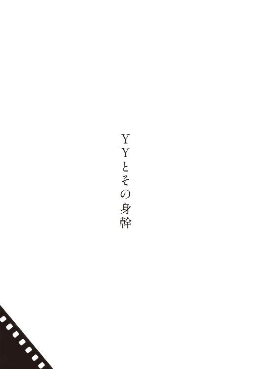
一、一般的なステレオセットの中央に、スピーカーは存在しない。左右のスピーカーの間で歌っているロックシンガー（もちろんジャズシンガーでも、ゆらゆらと居場所を変え続けているようなローズピアノでも、チューニングのためのを発しているオーボエでも、なんでもいい）の音像は、ステレオというトリックによって僕らの脳内に生成される錯覚である。実際には左右のスピーカーが同じ音を発しているに過ぎない。向かって右のスピーカーの音量が大きければ右に、向かって左が大きければ左に、音像は移動する。
僕は子供の頃から左耳のほうが聴力がいい。このことによって、中央に出現するよう設定されている音像が左に寄って聴こえるという現象が起きる。ヘッドフォンではより顕著だ。レコーディングで中央に定位される楽器の代表格は、エレクトリックベースである。クインシー・ジョーンズが二〇世紀音楽界、最大の発明品と評したこの楽器は、まろやかな中低音によって楽曲全体を包み込む特性を有する。この楽器抜きには二〇世紀後半の音楽のきわめて多くが今の姿ではありえなかった。その音が、僕には左寄りに聞こえる。
二、デスマスクや銅像のための石膏型、樹脂型が、実際には凹んでいるのにこちらに向かって膨らんで見えるという有名な錯覚。これは「人の顔は膨らんでいるもの」という、人類共通の強靭な固定観念によって生じる。
同様の錯覚はＭ・Ｃ・エッシャーの騙し絵の一部においても起こる。ただしエッシャーの意図とは正反対のかたちで。白い鳥の一群と黒い鳥の一群が左右からぶつかり合い、互いに相手の背景となるように融合していく絵がある。絵の中央部においては、どちらが背景というわけでもない。観る者が白いほうを鳥と思えば黒い部分は背景と化し、黒を鳥と思えば白い部分が背景になる──そう計算されて描かれている。この白いほうの鳥がどうもうまく見えないという同世代の画家と、そのことについて話しこんだことがある。僕がその絵がプリントされたＴシャツを着ていたのが話のきっかけだった。
エッシャーの意図はわかるものの、なるほど白い鳥だ、というふうな素朴な認識にはどうしても至れないと彼は主張した。僕らは喫茶店にいた。彼が飲み物のお代わりを頼んだり僕が煙草を買いに外に出たりして、その話題はいったん忘れられた。別れぎわに彼がふたたび触れてくるまで、すくなくとも僕は完全に忘れていた。彼は背後から唐突にこう告げた。「夜に飛んでる白い鳥なんて、だいいち見たことないし」
夜飛ぶ白い鳥はいくらでも存在する。だが彼の世界には存在しなかった。だから彼には見えなかった。
三、「ここに一っの行為がある。たとえば活人画を見物するとする。と、その見方に三つの趣味がある。願わくは活人画の人物が動かずに、長くあの好ましい姿勢をとってくれればいいと希望する趣味が一つ。第二はあのありさまが変じたら今度はどうなるんだろうということを考えるんで、これは事件の筋を喜ぶ人なんだ。また第三はなんでも事件の内幕に興味を持つ。すなわち、活人画を見せるにいたるまでのなりたち、事情を知ろう知ろうとするのだ」夏目漱石／『坑夫』の作意と自然派伝奇派の交渉
†
殺害された女友達のことを書こうとしている。彼女は単純に美しかったから、というのが執筆のひとつの動機だ。これは同時に制約でもある。彼女の美しさは「単純に」造作上のものだった。ゆえに彼女を讃美しうる言葉は、意外なほど少ない。美の黄金比と呼ばれ、美容整形術の基準にされたりもする、目鼻だちの数値比率がある。奇蹟的な適合者としてよくオードリィ・ヘプバーンが引き合いに出される。この比率が僕らの脳内に照射するのは、あなたが見ているものは美しい、という錯覚だ。そんなものは美の亡霊に過ぎないと一笑することは可能だろう。では僕がこう語ったとしたら、それも詭弁と見做されるのだろうか──水晶は煌めきではなくその形状が美しい。内部で屈曲する光線のヴィジョンでも数学的に無矛盾なものを次々と披露して見せる地球の偉大さでもなく、単純に、僕は無水珪酸の結晶が六角柱であることに心を摑まれる。
ＹＹとイニシャルで呼ぼう。彼女の顔の造作は美の黄金比にほぼ適合していた。ヘプバーンに似ていたという意味ではない。むしろまるきり違うタイプの美貌だった。目鼻の比率が近いからといって顔の印象が近くなるとは限らないようだ。肌も美しいほうだったと思う。白っぽくて適度に血の気があり、あっさりとしたオレンジ色か照明によってはごく淡いピンクの花弁のような色合いに見えた。眼はいつも何かを睨みつけているようだった。虹彩ではいろんな色が混じり合っていた。ショットグラスのウィスキーを透して雑多な物が置かれたテーブルを眺めているような、そんなふうな色合いだった。
僕は本当に、そういった人目にさらされやすい部位のみを指し、ＹＹは美しかったと言い張っている。他の部位については僅かな皮膚しか知らない。厳密には粘膜だ。ＹＹは予備校での同級生だった。クラスの一部が奇妙に親密な集団を形成しており、その十人余りはそれぞれが大学に進んでからも事あるごとに集まっていた。彼女は進学しなかったもののその集まりには顔を出していた。三次会と称してなだれ込んだ酒造会社の直営バーで、気がつけばテーブルに僕とＹＹしかいないという晩があった。あらゆる終電車の時刻が迫っていることにしたたか酔っていたふたりだけが気づかずにいたか、もしくは共々にその後のなりゆきを予感して、時計が視界に入ろうが席を立つ連中から教えられようがあえて時刻を意に介さなかったかだ。僕においては日頃の行動パターンから類推して後者だろう。いつもそれが最も模範的な選択だとでもいったふうに、なにかに巻き込まれるのを待ち続けてしまうのである。
「これ誰の」煙草を買い、ついでに用を足してテーブルに戻った僕に、ＹＹは千円札のずいぶんな束を見せた。半分にカットしたとらんぷくらいあった。
「どこあった？」
「灰皿の下」
僕らを残して出ていった連中が、自分の割り勘ぶんを推量し千円単位で切り上げて置いていったのだと見当がついた。彼女もそのようすを目の当たりにしていただろうに、早くも忘れている。
「オレらの」と教えた。「でもぜったい余るな」
「アタシ、財布出さなくていいの？」
「いいよたぶん。トイレ見たか。バカみてに広い」
「見てくる」ＹＹは立ち上がってテーブルを離れ、すぐまた戻ってきて、「どっち？」
僕は彼女をトイレまで案内し、ドアを開けてその広さを見せた。「バカみてだろ」
「ほんと。バカみたい」
彼女はドアを開け放ったまま入っていって、便器の蓋の上に腰をおろした。来いという意味だと思ったので、ドアを閉めて施錠した。彼女は膝の上で頰杖をついていた。僕はその前に進んでジーンズのファスナーを下ろした。
「かけるの」とドア越しに響いてくる《コーリング・ユー》にかき消されそうな無声音でＹＹが訊いた。あまりにも真っ当な質問だったので、《コーリング・ユー》がすごくバカみたいに聞こえた。トイレの床は小さな四角いタイル張りで、白黒の細かい市松模様になっていた。便器は蓋と便座が焦茶色の胡桃の木かなにかで出来ていて、金属部分はぜんぶ金メッキされていた。しかしそういう床や便器やその上で頰杖をついているＹＹよりも、ナタリー・コールの歌声のほうがさらに荒唐無稽だった。
「かけようか」僕も無声音で言って、下着から性器を露出させ小便するふりをした。酔いは多少醒めかけていたが、行為への抵抗感はちらりとしか生まれなかった。単純に美しいＹＹの顔は、まだ誰も足跡をつけていない新雪のようでも、設置したての便器のようでもあった。「だめだ。一滴も残ってない」
もちろん気張れば少しは放尿できたろうが、良識に従ってそうしなかっただけのことである。なのにＹＹは僕の気弱さを嘲るような薄ら笑いをうかべた。それから頭を低くして僕の陰茎を口にくわえた。以前から、もしその唇の前に陰茎を突き出せばくわえるだろうと予感していたので──もしくはそう切望しすぎて予感と区別できなくなっていたので──僕は驚かなかった。手でＹＹの顔を包もうとすると、彼女は頭を左右に振った。所在ないのでズボンの横腿のあたりを握っていた。彼女のほうからも僕の身体に触れようとはしなかった。その両手は、いつしか彼女自身のＴシャツとデニムのスカートのなかに突っ込まれていた。僕は身を傾けてＹＹの横顔を観察した。申し分なく美しい顔が自分の股間に密着しているという図であるにもかかわらず、僕の器官からは疼痛に似た例の力が失せはじめた。
ＹＹは僕を吐き出し、深呼吸した。「良くない？」
「いや。ただ集中できなくて。オレ神経質じゃん」
「どこが。おしっこの味がした。ちゃんと拭けよ」
「男は拭かねんだよ。パンツ脱がねえか」
「いま挿れるの」
「オレ座るから」
ＹＹと入れ替わった。彼女はスカートのなかで下着をおろし、片方の足を靴ごと抜いた。僕は別の女との行為を思い出しながら陰茎をこすって、それをふたたび勃起させた。しばらく前に別れた英会話教室で受付係をやっていた女だ。森羅万象をことごとく自分に利するものとそうでないものに二分しているような打算的な女で、一日に起きたあれこれを集計して「今日は損した」というのが口癖だった。そういう自分を打算的とは露ほども感じておらず、僕を非合理的な行動をとりたがる頭のわるい人として扱い続けた。肉体や性的嗜好の相性にも特別なものはなかった。つまり彼女にまつわる記憶は、現実に目の前で進行しているＹＹとの行為より、いくぶんリアルだったのだ。ＹＹは僕を跨いで腰を下ろしてきたが手で挿入を補助するわけではなく、僕も相手の股間に手を近づけてはいけないような気がしていたので、なかなか場所を決められなかった。
「もっと前。もっと──あ、たぶん行きすぎ。そのへん。入る」
「ん」ようやくＹＹの肉が僕の突端を吞み込んだ。軀が火照っていたせいか、彼女の内部は冷たく感じられた。くう、とＹＹは苦悶じみた吐息をもらした。「斐坂、何型？」
「オマエ動いて。オレ動けねえから」
「声がでそう」
「歯食いしばれよ。なに訊いた？」
「血液型」
「Ｂ」
「なかに出していいよ」
「安全？」
「すごく危険。でもうちのと同じだから」
「産むのかよ。バレるよ」
「どうせアタシに似るからわかんない」
なぜ彼女がそのような確信を抱いていたのか、今となっては問うすべもない。姿かたちはともかく、育てていれば自分と似た思考回路が形成されるはずだ、という程度の意味合いだったのかもしれない。申し遅れたが当時ＹＹはすでに結婚していた。予備校時代に国語講師と交際するようになり、妊娠し、卒業すると同時に慌てて挙式したのである。披露宴は南欧風のホテルで催されたと聞いた。招待客が座席を埋めた会場まで、新郎新婦は上の階にある控え室のドアから姿を現したのち、ゆるい螺旋を描いた階段をつたって舞い降りてくる予定だった。しかし慣れないロングドレスを纏ったＹＹはその最初の一歩を踏みはずし、階段の半ばまで転がり落ちた。会場はどよめきと笑いに包まれた。司会者が咄嗟に、新婦の傍に駆けおりて抱え起こした新郎を騎士に譬えて誉めちぎった。ドレスを破ってしまったＹＹはいったん控え室にさがり、新郎だけが上座にあがって、宴は再開された。しかし新婦は二度と会場に戻ってこなかった。控え室で苦しみはじめた彼女は破れたドレスを身にまとったまま救急車に乗せられ、車内で流産した。披露宴はまだ半ばにも至っていなかった。
ＹＹは彼女の結婚前のイニシャルでも、結婚後のそれでもある。結婚前もＹＹ、結婚後もＹＹ。これを変えずに済むというのが彼女をＹ──講師との結婚に踏み切らせた主因かもしれないとさっき思いついたのだが、これを確かめるすべもない。僕らのトイレでのセックスはごく短時間で終了した。むろん霊長類なので魚類の交尾ほど迅速でもない。さきに、彼女が亡くなった直後のＹ──講師との対面のようすを語っておこう。時間的にたぶんちょうどいい。葬儀の帰りに強い雨が降り、僕の唯一の黒革靴はびしょ濡れになって白い染みをまとった。これは後々まで消えず、けっきょく廃棄処分の主因となった。いくら黒い靴クリームで磨いても、しばらく履いていると必ず表面に滲みだしてくるのだ。例の受付嬢だったら、ＹＹが殺されたお蔭で損害をこうむったとでも言うんだろう。雨は深夜にいったん止んだが、翌日になるとまた静かに降っては、止み、また降った。夕方、講師から電話がかかってきた。葬式で話したかったが機会がなかった、近くに来ているので出てきてほしいと言われた。
検視されたＹＹの遺体から、自分の遺伝子を有する胎児が発見されたに違いないと僕は思った。明日が提出期限の課題があって──と噓を言い通話を切ろうとした。しかし彼は、
「悪い話などしないよ。たいして時間は取らせないから駅前まで出てきてくれ」と穏やかに、かつきっぱりと頼んできた。
十五分ほどかかりますと言い喫茶店を指定した。店名を意識したことがなかったので、店頭に陶製のセントバーナード犬が座っている店と言った。外は霧雨だった。僕はスウェットパーカのフードを被って路に出た。十五分後から五分を過ぎて店のドアを押したが、まだ講師の姿はなく、彼はさらに五分遅れて入ってきた。
「形見分けだ」と彼はテーブルに小さなヴィニル袋を放った。
手に取った。ラムネ菓子のおまけとして同梱されている組立て式のプラスティック人形だった。現実にはこれ自体が商品であり、菓子のほうは言い訳がましい僅か数粒入りの小袋だ。流通上の問題をクリアするためにそうなっているんだろう。僕が幼児の頃のテレビアニメーションのヒロインを立体化したものだった。
「噓だよ」彼は笑いもせずに言い、座った。余計な誤解が起きないように記しておくと、彼は快活に冗談ばかりを飛ばしているようなタイプの講師であり、アマチュア作家気質とでもいうのか世間への視線がいささか斜に構えすぎているきらいはあったものの、そのぶんいたずらに世の中を美化して語ることもなかったから、生徒のあいだでの人気は高かった。年齢は当時三十代の前半で、がっしりした体軀と、硬い球体のような広い額と、くっきりした目鼻の持ち主だった。なお彼がアマチュア作家だったというのは、その口吻からの僕の憶測にすぎない。「そこのコンビニで買った。こども向けとは思えないような奇妙なのもあるね」
「おとな向けなんですよ」
「そうじゃないかと思った。その顔、似てるだろう」
「奥さんに？」僕は人形の豆粒ほどの顔を見つめた。「あんまり」
「似ているよ。そんな感じだった」
「似てないと思うな」僕が指摘しようとしていたのは、ＹＹとその人形の造作の、いわば数学的な差異である。トイレでのセックスののち、僕はＹＹの内面を推察し続けた。たぶん本当に知りたかったのはＹＹが自分をどのように思っているかであって、他の彼女の感情には一切興味がなかったような気もする。当夜の彼女の言動を思い起こしては堂々巡りの分析を繰り返し、あげくに白旗を揚げて直接ＹＹに電話をかけた。彼女はバーのトイレのことは憶えていたが、そこでの行為のことはきれいに忘れていた。もしくはそういうふりをした。僕が事実を伝えても信じようとしないか、そういう演技を続けた。僕は晴れ晴れとした落胆に包まれ、その後は安心してＹＹについてはその外見のことだけ考えるようになった。ＹＹの造作が擁するさまざまな比率について思いを巡らせることは、切羽つまりがちな僕の思考の、一種の安全地帯だった。自分の外見や内面にある多様な比率について考えるときのように自己批判と自己弁護のせめぎ合いに陥る危険はないし、非現実のものに狂おしい憧れを抱くときのような飢餓感にも繫がらない。受付嬢の思考回路のように僕の慣習の領土を踏み荒らすこともない。
「斐坂くんがよく見ていなかっただけだよ」と講師は譲らなかったが、そこに彼の本心があるとは感じられなかった。その種の玩具を僕に手渡すという行為に、彼はなんらかの象徴を見出しているのだと思った──僕に大切なことを伝えようとしているのだと。古ぼけた喫茶店でのこの思いつきについても、もはや真相を確かめるすべがないというか、本当は可能なのだろうけれど、とてもそういう気分になれない。ＹＹの半裸の遺体は霧雨の朝、無数の粗大ゴミが不法投棄された雑木林で発見された。後頭部に鈍器で何度も殴られた痕があった。葬儀での噂話によれば、屍姦された痕跡もあったという。靴や上着やバッグは同じ林のすこし離れた場所で発見された。
Ｙ──講師と僕はしばらくＹＹのことを語り合ったが、重要といえるような話題はひとつもなかった。黄金比という言葉は、たしか口にしたと思う。その程度の会話だった。
次第に互いに沈黙している時間のほうが長くなった。僕は煙草に火をつけた。
「君は感心だ」と講師が言った。「すくなくとも実際に見聞きしたことしか話さないね」
「奥さんに関してですか？」
彼は頷いた。僕は皮肉を言われたのだと思った。
「あまり知りませんから」と僕は言い、──や──のほうが詳しいと思いますよ、と彼の別の教え子たちの名前を挙げた。
「彼らとは葬儀ですこし話したな。しかし個々のエピソードを信じようとしていると、まとめたときにどうしても辻褄が合わなくなるんだよ。みな見聞きしたことの前後を勝手に補完するからね。でも君の話は誰の話とも矛盾しない」
「全部を正直に話しているわけでもないです」
「バーのトイレでのことだとか？」
僕は彼の顔を見返した。こちらの反応を見逃すまいとするような、きらきらした目つきが印象的だったが、悪意や敵意の輝きは見て取れなかった。
「妻に隠し事は不可能だよ。その件は不問とする」
僕はなにか言って返そうとしたが、自分を追い込むような科白しか思いつかず、唇を閉じて椅子の背もたれに身をあずけた。
「いいんだよ。君だけじゃない。それに君は正しかった。これからも目と耳だけを信じて、物語には気をつけろ。君と話して多少は清々しい気持ちになれたよ」
「──どう言ってましたか」
「なにを」
「彼女、僕のこと」
秀でた額に長い縦皺が寄った。「いま物語に気をつけろと言ったばかりだが」
僕は頷き、黙った。じゃあと言って彼は千円札をテーブルに置き、すこし曲がった黒傘を手に店から出ていった。僕は人形を袋から出して組み立て、それをテーブルの隅に残して家に帰った。ＹＹを殺したのはＹ──講師だった。妻の屍姦においては慎重に体液も体毛も遺体に残さなかった彼だが、自動車に関しては不行届きだった。彼がＹＹを遺棄した雑木林の手前に桜並木があった。関東には珍しく染井吉野ではなく八重桜の並木だった。その干涸らびた花弁が彼の車のタイヤの内側に張り付いているのを、植物に詳しい警察官が発見し、現場検証の日に目にした燃え上がるような八重桜の連なりを思い起こした──とこれはワイドショーで語られていたエピソードだ。僕は喫茶店での講師との対面を思い返し、もしテレビ局や雑誌の連中が自分のところに取材に来たらどういう顔をして何を話そうかと考えながら、その報道を最後まで見た。しかし誰も取材には来なかった。ＹＹの遺体が発見されたときも、そういえば僕のところには誰も来なかった。
ＹＹが発見された雑木林は一見、踏み入る人の少ないゴミ捨て場だったけれど、じつは地元の小学生たちの近道になっていた。だから早朝から何人もがその身幹を目撃していたのである。にもかかわらず警察への最初の通報は、九時頃の犬連れの散歩者からのものだった。草のあいだに覗いていた顔や手足があまりにも「きれい」だったから、またマネキン人形が遺棄されているとしか思わなかったと、小学生らは口を揃えたという。
僕はＹＹの膣内に射精した。妊娠させることへの恐怖はなかった。この女はけっして妊娠しないだろうという根拠のない確信が、行為のうちに生じていた。酔いが軀に残っていたせいか、射精はなにか半分くらいしか放出できなかったような中途半端なもので、さして気持ちよくなかった。排泄に酷似していた。
「いった？」
頷くと、ＹＹは僕から降りた。僕の性器は双方の体液でべたべただったが、拭くと相手を不潔がっているように見えると思い、そのままズボンを引き上げた。ＹＹも下着に靴をくぐらせたが、
「おしっこする。忘れてた」
と言って直立した。両の足首を下着で繫いだままだった。僕は先にトイレから出た。フロアにいた店員が愛想よく、大丈夫ですか、と訊いてきた。吐き気をもよおした恋人を介抱していたと思われたようだ。僕は、もう大丈夫、と答えた。テーブルの金は盗まれていなかった。会計を済ませてＹＹを待った。彼女はなかなかトイレから出てこなかった。僕はほかの席に独りで座っている女の横顔を見ながら彼女を待った。黄金比には程遠いが、小学校の美術の教科書ででも見たような、懐かしい顔立ちをした年増だった。ようやくＹＹが帰ってきて、
「やったら便秘が治った」と耳打ちしてきた。
僕は苦笑した。それからテーブルに置いていた残金を、
「タクシー代。主婦は帰んねえとまずいだろ」と彼女に渡した。
「斐坂は？」
「オマエん家に行ったら逆だもん」
店の前で彼女はすぐさまタクシーを摑まえ、乗り込んだ。その後ろ姿が、最後に見たＹＹだ。僕は車窓に向けて左手を上げた。なかでなにかちらちらと動いたのはわかったが、街灯の反射でよく見えなかった。タクシーは次の横断歩道の前でいったん停まり、ややあってまた走りだし、遠ざかった。僕は安上がりに朝を待てる場所を求めて、星空の下を反対方向に進んだ。
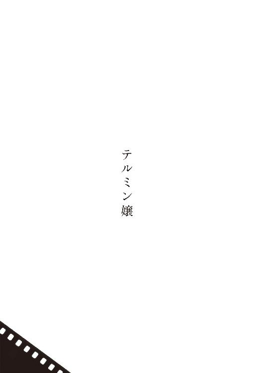
眞理子は赤が似合う。口紅も、洋服も。澄んだ白い肌と黒々とした癖ッ毛が、そうした強い色と合わさったとき、衆目を集めずにはおかない、それでいてなんとも云えず清々しい深いコントラストを生んだ。ところが本人は自分の頭部の形か、髪の質か、あるいは別のなにかを極度に恥じているらしく、室内でも人目あらば帽子を被り続けるのを常としていた。
書店勤めが始まった当初、店長を当惑させたのが彼女のこの奇癖で、お客に非礼だから脱ぎたまえと注意をすれば、独特のはきはきした口調で、
「この型の帽子は伝統に鑑みて屋内用ですから、べつに失礼にはあたりません」などと口答えする。
数日後、屋内用だというのは分かったが、しかし店の流儀には反するのだと説き伏せようとしたら、
「帽子でなければ宜しいのですね」と答えて、その午後からは童話絵本の老女よろしくスカーフで頭全体を被ってしまった。
客への礼に適った姿かどうかは別問題として、この異様なまでの彼女の頑なさは、店長を不安にさせた。学歴職歴ともに申し分のない眞理子だったが、履歴書を精査すると、ここに半年、ここに一年、と空白期間が散在する。面接時、それらについて問うたものかどうか迷って、けっきょく彼は訊かなかったのである。
面接にも使用した狭苦しい奥の間に、改めて眞理子を呼び入れ、履歴書の空白について尋ねた。すると彼女は、店長がそれまで見たことのない険しい表情で、
「治療は済んでおります」と宣言した。
「もし差し支えなければ、何に対する、如何なる治療だったのか教えていただけますか」店長は思いきって質問をかさねた。
治療目的は語られなかったが、処方は、能動的音楽治療だと判った。
当時、それはすでに神経症全般への画期的療法としてしばしばマスコミでも取り上げられていたから、突飛な告白とは思われなかった。また店長が眞理子に感じていた、文字どおり地に足が着いていないような、言葉を変えるならば、架空の人物であるかのような気配への、妥当な解説とも感じられた。またそうなると、そろそろ初夏だというのに彼女が長袖の、襟元の詰まった服しか着てこないことにも、意識を向けざるをえなかった。
だからといって眞理子は不出来な店員ではなかった。新米としてはこれ以上を望むべくもない気のまわりようを発揮していたし、他の店員の嫌がるシフトを積極的に引き受けるので、周囲からの批判も耳にしない。そのうち常連客のあいだに「スカーフの彼女」とその風体を歓迎する空気さえ生じてきた。よって店長は彼女にまつわる諸々を、ちょっとした個性として許容していく覚悟を決めた。
能動的音楽治療のなんたるかを、改めて読者に思い出していただくため、当時その第一人者とされていた在英の医学博士ポール・ジェイムズ・ジェムスンが、学生向けに公開していた文章の一部を左に訳出する。
ちなみにジェムスン博士は、二十一世紀以降に生まれた執筆ツールを利用しているとは考えにくい、単純な誤字脱字の達人でもあった。元の原稿はペンによる走り書きであり、別の人間（恐らくは助手のゲイブリエル・ノーム）が、ことさらそのままをタイプしていたと思しい。予想される労苦に見合うほどの利点に思い至らなかったので、訳文にそこまでは反映させていない。
患者の社会生活を阻害するばかりか、しばしば死に至らしめることもある、過度の不安、激情、痛み、心悸亢進......。これら神経症の症状を緩和してくれる自然音や音楽の存在は、素朴な経験則も含めるならば何世紀もまえから知られてきましたし、それらを解析しての臨床への応用も、ここ数十年、大いに試みられてきました。
現在は受動的とされるこれら旧式な音楽治療の致命的欠点は、すでに患者の身に顕れてしまった症状に対する、後撫での対症療法を脱しえないことでした。極度の不安にかられている患者が、勇気を振り絞って担当医と連絡をとり対症音源を尋ねたとて、「さしあたって以下の何種類かをダウンロードし、心拍数を計りながら一つずつ試してみなさい」といった指示を返すのがせいぜいだったのです。「さもなくば抗不安剤を。吞み過ぎないようにね」と。これは決して前世紀のスケッチではなく、つい十年前までの現場の実情です。
脳の活動リズムとの同期は期待すべくもありません。適切な音響システムが選択される保証もありませんでした。いま患者が身を浸している苦悶を、第一楽章の指揮と例えるならば、どたばたと楽譜や楽器を搔き集め、泥縄の演奏で応じるのが精一杯であり、即座に「これはモーツァルトの何番」といった具合に見極めて対応しつつ、第二楽章の譜面をも用意して次の波に備えるなど、夢のまた夢だったのです。
能動的──当初は予見的とも称された新しい音楽治療の成立には、以下に記すふたつの背景が不可欠でした。どちらも同治療だけを目的に成立した環境ではありませんが、治療への応用が開発時の錦の御旗となったことは否めません。両環境と現代医療は三者ともども、他のどれを欠いても今日ほどには進歩しなかった筈です。どの方向への階段にも見える、菱形のタイリングのような関係であると云えましょう。
一、記録されてきた古今東西の自然音、騒音、音楽、話芸などのデータベイス化。
古今東西と云っても未だ全体の一垓分の一にも満たないことでしょうが、メディア上に未知の音響データを発見するたび、時間コードごとの音響スペクトルを解析しては可能なかぎりの検索タグを付与していく自走式アナライザーは、雨雲の音響遺産ライブラリを日々着々と拡充しています。
膨大な量のアナウンス、演説、報道、広告、雑談も否応なく分析対象となってしまう勘定ですが、おもに人道上の理由から、現在、治療へのこれらの応用は認可されていません。能動的音楽治療に於いて、患者が、たとえばラジオ音声に対するような調子で、脳内の微小な音声を意識することはありません。しかしヨーゼフ・ゲッベルスの美声に癒される脳が、そのプロパガンダには影響されないとの立証もなされていないのです──たとえ患者の言語中枢が独語を解さないにせよ。
言語そのものや言語を伴う音楽の、同治療への利点や弊害は、ほとんど解明されていないのが実情です。母親に歌われていた子守唄は？ 愛唱していたマザー・グースは？ 郷愁は脳の安堵に寄与する筈だといった、安易な物語をこの問題に持ち込むのは危険であるというのが、大多数の研究者の見解です。よってニムバス中のこれらには、ポッド（後述）による走査を免れる拒否タグが付与されています。精神的外傷の再現、感情機能の退行、自我の異常肥大......あらゆる可能性が、今後、医学以外の分野とも連携しつつ検証されていく必要があります。
自然音や渾然とした街の騒音に拒否タグは付与されていないものの、これらの治療への有用性も低いようです。医師や学者による判断ではなく、あくまで結果として低いのです。突発的に異種音が混じるといった集音状態の不安定さ、平均して録音時間が短いことなどが、ポッドの作業量を増やしてパターン形成を遅らせるからだと云われています。もっとも患者が所属する文化圏により、利用率にはかなりのばらつきが見られます。
二、ナノテクノロジーによる電算装置と音響装置の極小化。
患者の脳の扁桃体に接して埋埴されるクスクスの粒ほどのタブレット、通称ミジンコ（日本語でwater fleaのこと。嚆矢となった日本製品の開発コード名に由来する）には、脳内の電位差をエネルギー変換して貯め込むプロトン電池、そのささやかな電力で駆動するポッド、ＡＭ変調方式によるパラメトリック・スピーカーの心臓部が封入されています。振動板はシリコンの筐体自体がその役割を担っています。
ミジンコは指の上でも、最大で蚊の羽音程度の音量を発します。人体の共鳴具合によっては轟音とも感じられる音量です。治療効果を保ちながらこれをどこまで抑え込めるかという一連の試行は、研究者たちに愕くべき結論を告げました。聴覚野の反応が観察されない実質無音とも云えるレヴェルでも、ほとんどの被験者に明らかな恐怖抑制効果が観察されたのです。
三半規管にすら届かない極小の音楽が、いかなるメカニズムで神経症患者を癒すのか。この命題への仮説は、題名リストだけで選集を編めるほど立てられてきました。しかしながら臨床での発見に次ぐ発見に歩調を合わせられそうな有力説は、今なお登場のタイミングを見計らっている、としておくのが妥当でしょう。スピーカーへと送り込まれている電気信号は本当に音声化される必要があるのか、なんらか、脳細胞への直接刺戟のほうが高効率ではないのかといった個別の研究も、未だ捗々しい成果を上げてはいません。当然といえば当然の話であって、人間は音楽を、音楽として認識しやすい特質を備えた動物です。ゆえに却って、音楽を音楽たらしめている個別の要素に対しては、盲目にも等しいのです。神経症患者を癒す音楽──敢えて乱暴に、良質な音楽とでも呼んでみましょうか──の特殊性に想いを馳せるに至っては、何人の思考であれ、たちまち停止してしまうでしょう。良質な音楽とは？
なぜ古典的なＡＭ変調方式が、同治療に於いて高効率なのかという一点についてさえ、ロマンティックな伝説とでも称すべき物語がたびたび流布しては、忘れられてきました。すなわち能動的音楽治療を牽引してきた牡牛たちは──遺憾ながらと云うべきか、頼もしいことにと申すべきか──黎明期の近代医学と同様に圧倒的な割合で、臨床の閃きと経験則なのです。しょせん巨視的には、皮膚に精霊の姿を刻むか、血を抜くか、馬の胆石を削って吞むか、毒物で麻痺するか、それとも頭に人工のプランクトンを埋め込むか、といった選択肢が神経症患者の前に並列しており、今はプランクトンが流行りつつあるという話に過ぎないのかもしれません。
ともあれ、精巧で精力的なプランクトンには間違いありません。とりわけ頭脳たるポッドは働き者。彼の最大の役割は暗譜でも名演奏でもありません。患者の扁桃体のセロトニン量を計りながらニムバスを高速度で走査し、めまぐるしく音響データをダウンロードしては試行して、セロトニンを適正値まで回復させる再生パターンを記憶、蓄積することなのです。開発者のシミュレーションが適切ならば、百二十年間はこれを無休で続ける能力が、ポッドにはあります。しかし恐らくは筐体自体がそこまで保たないし、ニムバスのアーキテクチュアも移り変わるでしょう。ミジンコが死んだり老いぼれて時代に合わなくなったなら、患者はまた頭蓋に孔を穿たれ、若くて生きのいい新しいミジンコを飼いはじめるという訳です。
数年後の眞理子。相変わらずスカーフを愛用している。出勤回数は減ったが書店にも勤めている。頭のなかには極小の音楽が流れ続けている。そして結婚している。謎めいたスカーフの魅力を借りようが逆にそれが邪魔に見えようが、美しい眞理子に恋心をいだく客はあとを絶たず、結婚した由利夫も、大雑把に云えばそういう青年の一人だった。
由利夫の父が名の知れた舞台俳優だったお蔭で、ふたりは若さに見合わぬ素晴しい新居を構えられた。屋内のそこかしこに、一見して睦まじいと分かるふたりの静画や動画が飾られている。どの画に於いても眞理子が向かって右、由利夫は向かって左の後方から、彼女の肩に手を置いている。
貴方がもし一度でも夫妻と同席した経験があったなら、この時点ではたと、彼らの佇まいの異常性に思い至っただろう。だって貴方は、同じ位置関係の彼らしか見たことがないのだから。前にいる由利夫に眞理子が凭りかかっている図も、夫妻の左右が違っている図も、抱き合っている図も、それどころか彼らが向かい合っている図さえ、まったく記憶にないことに気付く筈だから。
事実、ふたりの夫婦生活は異常そのものだった。父親が出資している百貨店から、外商と残業に疲れ果てた由利夫が帰ってきても、眞理子は決して玄関で出迎えたりはしない。そそくさと居間に置かれた鏡台に向かい、まずは後ろ髪の乱れを直し、猶予あらば眉の端を整えたりもする。さすがに自宅でまでスカーフを被ってはいない。服装も通常の室内着で、治療前はしばしば試みていた自刃や首吊りの痕跡も、手首の無数の傷痕も、無防備に露出させている。一心なる由利夫の愛情に浴してきた結果、彼には自分の総てをさらけ出しても心配は要らないのだと確信している。
部屋へと由利夫が入ってくる。眞理子は振り返りもせず、
「お帰りなさい」と鏡越しに笑う。
「ただいま」と由利夫も鏡越しに応じる。鏡台へと近づいてくるが、鏡のなかでは右後方、すなわち飾られた多数の画と同じ位置まで距離をつめ、彼女の肩に手をおいて......それ以上のことは何もしない。新妻を抱きしめようとも、接吻を試みようとも、直接に顔を眺めようとさえしないのである。ひたすら鏡越しに笑いかけている。
「まずお食事になさいますか」と眞理子が問えば、若く食欲旺盛な由利夫はたいてい頷く。ダイニングに向かう眞理子を由利夫は追おうとしない。居間に残り、前夜途中で眠ってしまった、古い映画の続きなど鑑賞している。眞理子が支度の完了を伝えてきて、ようやく腰をあげる。
彼らのダイニングにはチーク材の彫刻に縁取られた、じつに大きな鏡が掛かっている。二つの小さなテーブルと、それらを囲む数脚ずつの椅子が置かれている。双方のテーブルに一人前ずつの料理が並んで、眞理子は既に片方の席に着いている──壁の鏡のほうを向いて。
由利夫はもう一方のテーブルに着いて、眞理子の背中と鏡越しの顔を具合よく眺められるよう、椅子の位置を調整する。そしてふたりは食事を始めるのである──鏡越しに微笑み合いながら。
夫妻にいったいなにが起きているのか。
一年の時を遡ってふたりの出逢いを語るのが、最も手早い解説となろう。
書店に、初めて由利夫が現れたとき、その姿を目にした勘定場の眞理子は、陰鬱ながら鋭い知性を感じさせる佇まいに、一目で心を奪われた。世間並みの恋を諦めて久しかった彼女にとって、それからの五分は、過ぎ去りつつある青春を巻き戻すかのような、長い幻想の旅路となった。
首尾よく目当ての古書を発見した由利夫が、勘定場に近付いてきた。優雅な背広姿に気付いて我に返った眞理子は、悲愴な気分に陥った。この人は間もなく自分の視界から──世界から──消えてしまう。一度も見掛けたことのない客だ。おそらく界隈の人ではない。もはや彼女が彼に対してできることといったら、支払いを受理して笑顔で礼を述べること、そして忘れ去られることだけなのだ。
彼女の強張った必死の笑顔を、彼はろくに見返しもしまい。満月を眺め上げる泥中の鼈の心地がした。相手にとってはどうということもないであろう袖の振り合いに、深刻になっている自分がまた惨めだった。私は今、なぜこんなにも赤の他人に惹かれているのだろう？ しかし──希望的から絶望的に至るまでの、眞理子のあらゆる予感に反して──それが起きた。
由利夫が勘定台に本を置いた瞬間のことだ。彼女は人生初めてのアリアを歌いはじめた。
眞理子に音楽教育を受けた経験はなく、天賦の才に恵まれていた訳でもない。そもそも好きこのんで発した声でさえないのだ。勝手に横隔膜が上下し声帯が伸縮し、顎やら舌が不規則に痙攣していたに過ぎない。彼女のアリアはその生涯を通じて、多くの人にとって耳障りな、金切り声の連続の域を出ることはなかった。アリアの呼称は後日、嘲笑まじりの隠語として看護師たちのあいだに生じたものだ。
しかしながら彼女のアリアが、たんなる悲鳴とも絶叫とも称しえぬ、少なくとも歌には違いなかったことも、数々の録音や証言から明らかだ。頭蓋内の、聞えていない筈の音楽に呼応していたことも、その変奏ぶりから察せられる。
はじめ店内の誰もが呆気にとられていたが、そのうち店の用意したパフォーマンスなのだと誤解した人々が、失笑しはじめた。アリアが一分近く続いて、眞理子の眼球が裏返り頭部が不自然な方向に捻れはじめるに至って、誰しもが事態の異常に気付いた。救急車が呼ばれた。
直観的にみずからの関わりを悟った由利夫が、眞理子の傍らを離れることなく、救急車にまで同乗してしまったお蔭で、彼女はその後四十分にわたってアリアを歌い続けるはめとなった。心身のダメージは著しく、長い入院を余儀なくされた。
由利夫は熱心に見舞にきた。眞理子は彼を歓待したが、近付けば必ずアリアの状態へと至った。
「突飛なことをお尋ねするようですが、あの原因は僕ではないのですか。僕が彼女を歌わせているのではないのですか」と由利夫は看護師たちに問い掛けた。
常識的な反応として、皆、医師の所見を待つようにとだけ答えていたが、じじつ突飛であると笑った者もいなかった。眞理子がアリアを発するのは、由利夫が見舞にきたときだけだったのだ。
「私のミジンコは壊れているんですか」回診にきた院長、三京に眞理子は尋ねた。
「検査の結果？」と三京は問い返し、「いや。既存の如何なる基準と照らしても、元気いっぱいなうえにたいへんお行儀が良いよ──残念ながら」
「どう残念なんでしょう」
「ミジンコを交換して済むなら話が早かった。保証期間内だしね。しかし、Ａ、現状の音楽治療には致命的盲点がある。Ｂ、貴方はそれに向かない特異体質の持主である。Ｃ、お見舞の恋人が特異体質である。どの結論であれ、貴方の人生の重い枷となる。違うかね」
「あの方は、たまたまお店にいらしたお客さんです。恋人などではありません。あの日が初対面でした」
「なるほど。貴重な証言をありがとう。もっとも本気で原因を究明しようと思えば、彼には今後ともここに通ってもらう必要があろうね。検証自体、貴方には多大なストレスがかかるから、もちろん拒否もできるが」
眞理子は拒否しなかった。
三京は予てから能動的音楽治療に懐疑的立場をとっていた。彼はアリアの正体を一種の強直間代発作、誘因は由利夫が発している何らかであると仮説して、三个月にわたってその立証に努めた。先に結論ありきの、手順のうえでは出鱈目に近い検証だったが、とまれこの段において三京が果たした役割は大きい。
計測値の多くが、仮説に寄り添うものだった。放電部位の拡散速度が遅いため患者が意識を保ち続けるという特徴はあるものの、眞理子のアリアが扁桃体の異常放電に起因する発作の産物であるのはまず間違いはなく、また彼女の視覚や聴覚や嗅覚を遮断したり、雑踏や動植物園に連れ出したりもして試験を重ねたけれど、由利夫の、それもその生身の肉体以外の誘因は、ついぞ発見されなかった。
由利夫が近付きさえすれば、その姿が見えなくとも声が聞えなくとも、眞理子は必ずアリアを歌った。彼が遠ざかるまで歌い続けた。ただし死角とでも云おうか、かなりの距離にまで近付ける角度が一方だけ発見された。眞理子の右後方だった。一方、彼女のミジンコは左の扁桃体に接している。この二つの事実に単純な相関関係を認めるならば、眞理子の扁桃体とミジンコのタッグは、アンテナよろしく直接的に由利夫の「何らか」を感知していると考えられた。
この「何らか」について三京は、由利夫を包んでいる準静電界が特殊な波動を含んでいると推理──厳密には空想──した。仕事柄、人体内部の生体電位は熟知している三京だが、その外界への影響については読書好きの高校生レヴェルの知識しか持たなかった。彼は波動をυ波と名付けた。のちに「知性波」「知能波」などと誤訳されるようになったυ波の、これが本来の意味だ。υの文字を選んだ理由について三京は、それがラテン文字のｙやｕに相当し由利夫の頭文字に当たるからで、べつにそれ以上の意味は無かったとしている。
「ＡでありＢでありＣだね」とある朝、三京は眞理子の前で結論づけた。「抜本的解決はミジンコの除去だよ。薬物治療への切替えを進言する」
しかし眞理子は頑なに、「それは考えられません。陰気な思考を麻痺させる薬、すこし判白としているための薬、眠るためにその効力を抑える薬、それらでぼろぼろになった内臓を励ます薬、それらの副作用を抑える薬に、そのまた副作用を抑える薬──以前の私は一日にいったい何十錠を吞んでいたことでしょう。それでいてこの傷に、この傷に、この傷です」
愚行の痕跡が示されるたび、三京は深く頷いて見せた。「しかし、今は薬も進歩しているよ」
彼女はきっぱりと首を横に振った。「由利夫さんが私を歌わせる特異体質の持主ならば、私は化学薬品の効かない特異体質なんでしょう。これまでに先生の何千倍も吞んできた私には分かります」
三京は吐息して、「では、由利夫くんによく礼を云い、事情を説明して遠ざけることだ。同様の波動を発する人物が二人といないとは限らないから、これは完璧な対処ではないよ。なんなら彼には、私の口から──？」
「いいえ、私からお話しします」
三京が病室から出ていくと、眞理子はすぐさまベッド脇のコンセントに指を挿し入れて、電話会社の認証を求めた。自宅にいた由利夫にみずからの幻影を送って、たったいま云われたことを自分の口から伝えた。応じて病室に現れた由利夫の幻影は、唇をかたく真一文字にむすんでいた。目許の翳りがいっそう濃くなり、美貌に古い肖像画のような深みを加えていた。
眞理子は重たい決意に相反する、軽々たる口調で、「慣れて見せるわ──貴方の波動に」
由利夫は頷いた。「今はその言葉を信じるほかない」
心許ない幻の抱擁。三京の進言はとうに手遅れだったのだ。
万事塞翁が馬とはよく謂ったもので、英ジェムスン博士が夫妻のために腰をあげたのは、ムッシュ鵬の芸名で知られる由利夫の父が、息子とその妻の特異な暮らしぶりを、うっかり舞台仲間へと洩らしたことに端を発する。奇談はたちまち広まって、夫妻の許には連日、取材の申入れが届いた。鵬の立場や彼から受けてきた援助を思うと一切を拒絶するのは難しく、厳選した二、三の取材を由利夫と眞理子は受けた。マスコミにとっては充分だった。ねたの売買、劣化複製、牽強付会といった得意の手順を経て、夫妻に纏わる記事は悪性癌の勢いで増殖し、ふたりは世間の悪意に包囲された。
船出の際の誓いとは裏腹に、眞理子の由利夫に対する感度は日を追うごとに増しており、この時点での彼らは已むなく同じ敷地内の二軒で、別々に暮らしはじめていた。世人はこれを擬装の結婚と見なしてその利益を嗅ぎまわった。薬物治療を支持する者は眞理子の愚かしさを嘆き、同じ音楽治療を受けている人々は侮辱されたと感じて、彼らの抗議や呪いの言葉は夫妻の伝言箱をパンクさせた。故に報道によって彼らの窮状を知ったジェムスン博士からの、重ねての真摯な──だが誤字脱字だらけの──手紙がその目に触れることはなかった。
業を煮やした博士は夫妻への直接の使者を立てた。この役を仰せ付かったのが助手のゲイブリエル・ノームである。まだ二十代半ばの青年だった。ある晩、敷地の手前に位置する眞理子の棟の呼び鈴を鳴らし、玄関へと出てきた彼女に微笑みかけて、
「貴方を救いにきましたよ」と翻訳を担っているヘッドセットを通じて告げた。「高名なるジェムスンが貴方がたの調査を希望しています。原因は究明され解決がなされることでしょう」
眞理子は、天使が訪れたと思った。彼を歓待して応接間に導き、お茶を供してから帰宅中の由利夫にこの奇蹟を告げた。ゲイブリエルが眞理子の切々たる訴えを聞いている最中、その腹の虫が大きく鳴った。長旅の所為でひどく空腹だった。眞理子は気付かぬ素振りで厨房へ行き、鼻歌まじりに彼のための夕食をこしらえはじめた。鼻歌は次第に音量を増して、緩急を強め、遂には凄まじいアリアとなった。帰宅した由利夫が異変に気付いて飛び込んでくるまで、この晩のアリアは続いた。
すなわち三京説に従うならば、ゲイブリエルもまた特殊波動の持主だったことになるが、やがて来日したジェムスン博士は、より意外な光景をも併せて観察する次第となった。博士が夫妻の家を訪れた日曜日の午後、由利夫、眞理子、そしてゲイブリエルの三人は、一つのテーブルを囲んでお茶を飲み、談笑していたのである。
ゲイブリエル来訪の晩、三人は偶然、発見していた──由利夫の波動とゲイブリエルの波動が相殺することを。由利夫、ゲイブリエル、どちらが接近してきても眞理子はアリアを歌ったが、同時に接近すると歌わない。
「そこで私から提案したのです」ゲイブリエルはその最大の魅力である、幼児のような笑顔をうかべながら説明した。「博士がおいでになるまで、夜間や休日はなるべく三人で一緒に過ごして、眞理子さんの音楽治療への影響を観察しようと。経過は上々です。彼女は健康ですよ」
それまで三京説に眉をひそめてきたジェムスン博士であったが、υ波なるものを自分なりに探求してみる必要を、ここで痛感した。ただちに日英複数の機関に協力を要請し、三者の肉体と心理の状態、病歴や治療歴を精査させた。眞理子の扁桃体には変形が観察されたものの、異常という程のそれではなかった。由利夫とゲイブリエルの脳にも非凡なところは見当らなかったが、プルースト効果の働きを見るカウンセリングにおいて軽度の記憶障碍が発見された。幼児期の記憶に著しい欠損や混乱があった。少なくともこの十年、泣いた記憶がまったく無いという奇妙な合致もあった。
夫妻とゲイブリエルには三人暮しの続行を指示し、本業の為にいったん帰国した博士の許へ、暫くして興味深い報告が届いた。由利夫の母は彼が三歳のとき、その眼前で餓死とも中毒死ともつかない変死を遂げていたことが判明したという。欧州の路上公演でムッシュ鵬がその名を上げる、ほんの前夜のことだった。由利夫は海辺のスラム出身だった。その母は、夫の衣装を繕って外国に送り出したあと、我が子には買ってきたパンを与え、自分は浜の漂着物を口にして飢えを凌いでいたのである。
ゲイブリエルにも近い経験があるのではないかと博士は想像し、調査方法に腐心した。というのも彼は孤児院の出身で、この孤児院も閉鎖されて久しかったからだ。退行催眠が有力候補として浮上していたが、それが実行に移される日は訪れなかった。
日本からゲイブリエルの訃報が届いた。由利夫によって射殺されたという──。
「ゲイブリエルに罪は無い。貴方の怠惰と無能が彼を殺したのだ」法廷の由利夫は、そう傍聴席のジェムスン博士を罵った。「貴方が無能でい続けるかぎり、僕らはグロテスクな三人暮しを続けて、互いを監視し合わねばならなかった。ゲイブリエルも苦しんでいた。何故だか分かりますか？」
博士なりに察するところはあったが、場が場ゆえ返事をする訳にもいかない。
「これで漸く解放された。僕には刑務所暮しが待っていますが、少なくとも眞理子の幻影は面会に来てくれる。昔と同じです。そのほうがずっといい」
殺人が起きた頃にはもう、由利夫もゲイブリエルも、単独で眞理子のいる敷地に踏み入ることが難しく、彼女をアリアで苦しめずに逢わんとするならば、外で待ち合わせて一緒に訪問するほかなかったことを博士は知った。
証言台に立った眞理子の幻影は、
「いちばん罪深いのは私です。どうか私を罰してください」と泣きじゃくった。
むろん、由利夫が殺人に手を染めたとの事実は動かしかねた。判決に沿って彼は収監され、遂に、眞理子から隔離された。誰にとっても望ましからぬかたちながら、物語の幕は、ここで閉じたかに見えた。
ところが由利夫の収監から程なくして、眞理子はまたもや激しいアリアを歌ったのである。
医師の指導に背いて刑務所に近付いた？ 否、彼女は遠く離れた、葉山の療養所に居た。
第三のυ波の持主が現れた？ これも結論から云えば否。連絡を受けたジェムスン博士は三京説に従い、眞理子を刑務所とは逆の方位に移動させるよう指示した。しかし車で五十キロメートル移動させても、全身に及んでいた痙攣が多少治まっただけで、アリアは已まなかった。ここで直感を得た博士は、次に、由利夫を電磁シールドされた独房に移すよう指示した。急拵えのシールド室に由利夫が放り込まれると、五時間続いていたアリアが、漸く已んだ。
シールドが隔絶したのは、由利夫とニムバス・ネットワークだ。すなわち眞理子はいつの頃からか、直接の波動のみならずニムバスを通じても、υ波を捉えられるようになっていたのである。ニムバスは高度な走査機能を備えている。むろん人の準静電界の微細な波動など、正しく感知すべくもないが、かといって影響皆無とすれば、それは却って非科学的な態度だ。
犬がひとつ身震いしただけでも、そのエネルギーは変換に変換を重ね、ほんの幽かにでも星を揺らすのだ。雨雲のちょっとした表情に眞理子の脳は、由利夫のυ波を──その忘却の彼方にある深く激しい悲しみを──察する。そして泣く。
科学の徒らしからぬ濡れた詩情が、ジェムスンの胸中に溢れた。涙を忘れてしまった男の代わりに、眞理子はアリアで泣くのだ。その複雑怪奇な営みはミジンコ内のポッドに刻まれ、ここぞという場面で反復される。そんな風にして眞理子は、着々と進化してきたのである。
高い塀の内にも人権はある。由利夫を奇妙な独房に閉じ込めておくことはできない。刑務所をまるごとシールドする訳にもいかない。ニムバスとのやり取りが不可欠な治療を受けている受刑者は大勢いるし、技術的にも不可能に近い。さしものジェムスン博士も、もはや眞理子に薬物治療を強いるしかあるまいと、白旗の準備を始めていた。
そんな頃、報道を見たという露西亜の学生から、眞理子の許に小さな贈り物が届いた。古風なマッチ箱大の、青い合金の小箱で、回路を覗かれまいとしてか、内部にはエポキシ樹脂がたっぷりと流し込んであった。ミジンコを開発したチームの一人が即座に仕掛を見破ったが、同時にその発想に舌を巻いた。
端的に云えばそれは、眞理子のミジンコと陽気にダンスするだけの装置だった。ポッドの活動を察知してそれが受信している信号を逆算し、同一だが位相だけは反転させた信号を発する。そして信号同士を相殺する。言うなれば、空虚なゲイブリエルだった。しかしこの単純明快な発想が、臨床的には効果絶大だったのである。逆位相の信号は必ずタイムラグを伴っているから、ポッドの奮闘を完全に打ち消すことはない。あくまでその暴走を、優雅に押し留めるだけなのだ。
露語で青──ガルボイと名付けられた小箱は、ペンダントのように眞理子の頸に掛けられて、彼女のアリアを抑え続けた。回路が単純なだけに一度も不調は起きなかった。そして三年後、それまでの活動記録を内部に閉じ込めたまま、お役御免となって電源を落とされた。不意に、眞理子には不要な代物と化したのである。
由利夫の訃報を彼女は、不意に葉山を訪ねてきた技師から聞いた。ガルボイの仕掛を看破した男で、名を菊池という。すでに初老に達していた。「まだ詳しくは分かりませんが、無謀な脱獄を試みて、射殺されたとか」
眞理子は目を見開いたが、長い沈黙ののち、こう奇妙に問い返した。「どこに？」
「どこかにある楽土でしょう」と菊池は答え、由利夫の手帖に遺言めいた文言が見つかったことも申し添えた。「ただし冷静な内容ではないそうです。だいぶその、錯乱した──」
「では私は読みません。そもそも、そのお報せを信じられる気が致しません。ごめんなさいね、そういう頭に生まれついているんですの。もし彼の荷物が送られでもしてきたら、そのまま菊池さんにお預けします。どうか研究にお役立てください。世間様のお役に立つ研究なのですよね？」
「きっとそうなります」
菊池は彼独自の手段によって、υ波の正体を見極めんとしていた。すこしずつ機能の異なるガルボイのヴァリエーションを製作しては、眞理子に及ぼす作用の差異を記録している。彼はυ波を、人間の原初的な情動の顕れと捉えていた。たとえば悲しみという感情が、現在の姿を得て表出する以前の、古代魚のようなものとして。じっと深海に身を潜めているのが通常だが、稀にどうしても海上を漂ってしまう個体がいる。その断末魔の骨の軋みを遠くから察して、共に苦しみ狂乱する魚もいる。
一技師の敬虔なる熱意に反して、その成果の実態は、彼以外には殆ど意味を成さない数値の集積に過ぎなかった。一方、偽りのυ波でたびたび歌わされてきた所為か、眞理子は感度をいっそう高めて、菊池が富山の実家でうっかり新型のガルボイを作動させると、葉山で歌いだす程になっていた。
菊池がυ波の研究者として世界的に脚光を浴びたのは、地道なデータ集積が十年めに及んでいた、春先のことだ。彼の眼前、まだガルボイを起動させていないというのに、とつぜん眞理子が歌いはじめた。初の椿事だった。ガルボイ本来の役割を思い出した菊池が、慌ててそのスウィッチを入れたが、アリアは已まない。信号のタイムラグぶんの差異が、それでも強大すぎるとしか考えられない。菊池は心当たりのあらゆる施設と連絡をとった。しかし強いυ波を発していそうな場所は見つからない。彼はニムバス管理局に発信源の情報開示を求めた。
申請手続きのあいだも眞理子はベッドの上、悪霊に憑かれたように身を捻らせながら歌っている。二時間......六時間......遂に十二時間が経過して、とうとう血を吐きはじめた。
「これ以上は無理だろう。この人は本当に死んでしまうよ」駆けつけ、耳栓を詰めて様子をうかがっていた医師が、せめて眞理子を強制的に眠らせるよう提言した。
菊池も決断し、
「眞理子さん、眠っていただきますよ」と耳許で云って、医師に合図した。
そのときアリアが変化した。彼女の金切声に慣れている菊池であればこそ、聞き逃さなかった。研究を、研究を、とそれは彼の耳に響いた。
「眞理子さん？」
研究を。けけけ研究を。研究ををををを。
「研究を──私たちの研究を重んじてくださるのは嬉しい。しかし貴方は健康体ではないし、楽しく歌をうたっておられるのでもない。脳の悲鳴なんです。このまま続けたら間違いなく三途の川だ」
嬉しいい、と今度は医師にも判白と分かるふうに、眞理子は歌ったのである。
意思は尊重され、彼女は歌いながら大病院に移送された。眞理子にとって最長だったこのアリアは四十時間を越え、終わるや否や待ち構えていた医師団による集中治療が始まった。次のアリアを防ぐためミジンコも除去された。
ミジンコは翌年、覚醒した眞理子のたっての希望により、再び扁桃体の下へと戻された。翌年といっても彼女にとっては翌週だった。眞理子の術後の昏睡はそれほど長きに及んだ。従ってニムバス管理局がようやっと発信源の情報を開示してきたときも、彼女は未だ眠りのなかにいた。当局の対応の遅さに激しく怒りながら連絡を受けた菊池が、その内容を聞くや、押し黙った。
太平洋上だった。しかし軍事施設も無ければ、漁船も客船も寄りつかない、海流の旋回点である。鯨影もいっさい確認されていなかった。そもそも一般の鯨がυ波を発するのなら、このところの眞理子は幾度となくアリアを歌ってきた筈だ。鯨でもない。
海からのυ波。深海の巨大な悲しみ。その真の意味を読み解きうる者は永久に現れまい。ともあれ、世の海洋生物学者をこれほどまでに狂喜、そして泪滂沱とさせた発見は、後にも先にも例が無い。
次の巨大υ波に備えて菊池はガルボイの全面的な改良に私財を投じたが、これが眞理子の為に役立つ日は訪れなかった。海からの波動は、あの一度きりだった。
そして眞理子は退院した、幾度となく死線をさまよいながら、このたびもまた見事に。もうだいぶ以前から、マスコミに騒がれた頃とは別人のように窶れはてている。でも変わらず赤がよく似合った。口紅も、洋服も。依然として人前では頭をスカーフで被う。よく気が付き、清潔好きで、小さいがはきはきとした声で喋った。海中の壮大な情動を代弁して、四十時間のアリアを歌ったのは、そういう小さな女性だ。
最晩年の眞理子は、火星の大地に立っていた。火星上の基地を繫いで形成されつつあったニムバス状のネットワークを利用して、υ波を探索するプロジェクトに参画したのである。しかし現地で一火星年も過ごすことなく、風土病だった螺旋熱に罹って命を落とした。
改めてその頭蓋から取り出されたポッドは、彼女の出立前の遺言に沿い、菊池の手に託された。菊池は余生の多くをその解析に費やした末、あらゆる通説に怯むことなく、勇猛果敢にこう論じた──最晩年の眞理子の脳は、ニムバス状ネットワークと同化する一方で、直接のυ波を激しく、このうえなく激しく求めていた。
あたかも二つの偉大な脳が重なり合っているように、彼女は火星上を緻密に探査し、同時に地球上のどこかを目指していた、人類最高の速度で。
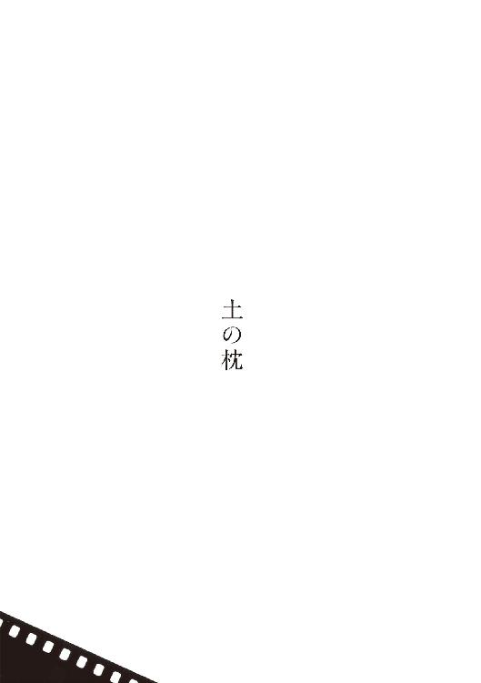
乾いた泥に被われた砲車は、息絶えかけた巨獣を思わせた。囲む兵たちの顔は汗でてらてらと輝いている。表情が皺んでいるので、べそをかいているように見える。本当に泣いている者がいても不思議はなかった。骨にくい込む綱を引き、あるいは手の皮を裂きながら、膝まで入るほどの轍に満ちた、長い褐色の道程を遥々と来たのだ。
見上げているのは、泥からの蒸散と人いきれによって竈風呂と化した塹壕の底で、耄けたように首をのばしている若い兵卒である。名を葦村寅次という。飄々たる男だった。下士の叱咤や命令を、よく聞き流していると解される。聞いていたのかと確かめられれば、一語一句まで正しく記憶している。それでいて、なんら身に沁みているようではない。本心は内地に残してきて、身は別の人生を歩んでいるらしい。
少なくとも隣に坐り込んでいる井手六助は、寅次の特質をそう理解していた。郷が近いうえに同じ小作農の出で、話が合うには合う。六助が親元で畑を手伝っているのにひきかえ、寅次には既に二男三女があると聞く。歳は変わらない。よほど早くから所帯を持ったものだ。
働き手が戦地では大変だろうにと同情しても、残った者でなんとかやっているはずだと云って、平然としている。寅次の本心は家族のもとにも無いらしい。
また一台、暫くして更に一台、砲車が数を増していく。
「やっと戦が始まる」と寅次はなんだか嬉しそうに云った。
戦となれば大勢の露兵が死のうけれど、味方もまた死のう。自分等も命を落とすかもしれない。怖い。しかし情け容赦ない大陸の日射しの下、遠い敵と睨み合いながら号令を待ち続けるのも、また苦しい。かたときも気がほぐれず神経がおかしくなってしまいそうだし、肉体もつらい。
内地では想像も出来なかった、いつ果てるとも知れぬ行軍と野営の重苦と、悲惨な食事が、兵の体力を徹底的に奪っている。病に倒れ後方に残さざるを得なかった同胞は数知れない。気力を保っている者は一様に連れていってくれと懇願した。忠義の心からではない。接収した館に急拵えされた病院は混雑をきわめ、負傷兵の呻きと、異様な臭気と、内地では見られぬ巨大な蠅に満ちていた。背囊と銃の重みに耐えながら宏漠たる大地を歩むほうが、たとえ野垂れ死ぬにせよ、まだしも人間的に感じられるのである。
寅次もまた脚気の気味で、本人は隠しているつもりらしいが、六助の目には歩くのも坐っているのも難儀と映る。
日が傾きかけた頃、戦が始まった。砲弾が飛び交って地面が不規則に震える。進撃の号令に応じ、六助と寅次も塹壕から這い出した。たくさんの銃弾が頭上を掠めていく、どこかしら音楽的な音。鉄の弾が見えない速度で通過しているのだと思うと、不可思議である。そのさなかに頭をもたげたが最後、物思う今の自分は地上から消え失せてしまうのだと考えると、これまた不可思議きわまりない。
怒号。雄叫び。悲鳴。嗚咽。母上母上という追いすがるような声。
思わず頭を起こした六助の、視界が、極彩色に染まった。弾丸に身を貫かれるのは初めての経験だったのでなかなか事態に気づかず、並々ならぬ違和感をおぼえながらもぎらぎらした異景のなかを匍匐していた。誰かが足を摑んできて、井手井手と彼を呼んだ。寅次の声だった。
「背から血が出とる。動くな。横んなっとれ」
弾は六助の喉元から入り、背中の上部へと貫通していた。脇に来た寅次に、撃たれた、と告げようとするも、声にはならずただ口中に血が溢れた。咳をすればしただけ溢れて、息が出来なくなった。地面に血をまき散らしながら、楽な姿勢を求めた。
「塹壕へ戻ろう」寅次が勧める。
六助に返答の余裕はなかった。天を仰ぎ白眼をむいて悶えている。寅次はその傍らに留まった。
戦場が静まった。以前の喧噪の物凄きがゆえ、相対的にそう感じられた。戦には波がある。疲れを知らない部隊が存在せぬかぎり、意気の軒昂と銷沈は必ず波状をなして、敵味方を問わず伝播する。
取り落とした銃を求めてか幻を摑もうとしてか、虚空に向かって伸べられた六助の手を、寅次は握った。
「家族への遺言はないか」と顔を寄せた。
六助はかたとき正気を取り戻し、お国に身を──と血とともに吐いた。
「ああ、ああ、立派にお国に身を捧げたと伝えよう。勇ましかったと伝えよう。お前が先を進んでくれたけえ、儂は撃たれずに済んだんじゃ」
妹──とも吐いた。
「心配すな」と寅次は強く云った。六助の妹は生まれつきのひどい鳥目で、家のなかではよく見えない。ゆえに嫁の口もない。それが心痛でならないと聞いていた。「儂が名医に診せよう。井手、今まで隠しといて悪かった。儂は葦村寅次じゃあない。寅次は領民じゃ。子が多いのに召集されたんを不憫に思うて、名を取り換えた。儂は安芸黒禅寺門前の地主、田仲の嫡男で名は喜代治という。じゃから妹さんのこたあ心配すな」
この突飛な告白を六助は信じ、安堵して、それきり動かなくなった。
寅次は六助に真実を語っていた。すなわち彼は葦村寅次ではなく田仲喜代治であった。しかし六助に告白した理由によって、軍隊手牒には葦村寅次とある。召集に応じた段で書類という書類の細工を済ませてあったから、軍に属する何人も偽名とは知らない。軍にあった資料との齟齬は、誤差として許容された。ゆえに貧農出の一兵卒として扱われている。
郷に戻れば、田仲の若様として顔を知らぬ者はいない。学問に長け、世の情勢にも通じていて、人望がある。だからこそ前代未聞の代理出征は、郷の誰にも共感を与えなかったにも拘わらず、いにしえの貴人催す風変わりな儀式よろしく、厳かで滞りなかった。
そもそも喜代治はなぜ出征したがったのか。
寅次のことは子供の時分からよく知っている。道化じみた態度で人を笑わせるのが上手く、面立ちも優しげで、幼い喜代治にとっては最も好もしい大人の一人だった。遊んでももらった。しかし、だからといって一命を捧げるほどの恩義はない。
喜代治と見ると慌てて並んで頭をさげる寅次の子たちは、幼気なく、いじらしい。けれど身内と錯覚するまでの愛着は湧かない。所詮、他人の子である。
大国の傲慢に翻弄される祖国を憂える気持ちはあるが、それは理であり義心であって、已むに已まれぬ情ではなかった。嫡男の、余りといえば余りの気紛れに慌てふためく両親に、彼は整然と近代的大陸国家建築の要とそのための戦争の正当性を説いたけれど、一度としてみずからの言葉には酔わなかった。巷の論者を演じている風ですらあった。
自分はなぜ戦場に来たかったのか。喜代治自身、みずからを納得せしめる唯一の理由には至れずにいる。紙のように薄っぺらな理由が重なりに重なって、濃い陰を為したに過ぎぬと感じる。
かりに戦争が北海道や九州でのことだったら、自分は腰を上げはしなかったろうとも思う。外国を、大陸を自分の目で見たいとの希望は予てよりあった。ただし彼の夢想のうちに広がっていたのは欧州の壮麗な都市であって、間違っても東洋の荒れ野ではない。
自分の長広舌を聞き終えた父が、苦々しい顔つきで吐いた言には、今も胸を衝かれる思いがする。祖父譲りの強い訛り口調で、以下のようなことを言った。自分にお前ほどの教養はないが、しかし思う。憂国の志からの行動とはいえ、召されもせぬ戦争に参じて、却って召された者を行かせぬのは、むしろお国への、君への不忠とは申せまいか。
喜代治にこの認識は無論のことあった。故に不忠もまた、動機であったと自認せざるを得ない。自分は一度命を賭すほどの狂信のもと、国家という奴をからかってみたかったようだ。そしてその先に生じる景色を目にしたかったようだ、と。
田仲喜代治は遼陽の戦闘を生き延びたのち、沙河の護りの任に就いた。しかし翌春、脚気の悪化から鴨緑江の野戦病院に送られた。藁に敷布一枚きりの豚小屋のような寝床で、バルチック艦隊撃退の報を聞いた。
再び故国故郷の地を踏んだとき、喜代治の身は鴨緑江に送られた当初より遥かに衰弱しており、それから一年以上を病院に入ったり出たりの療養に費やした。ともあれ命は拾った。一度、寅次が病院に見舞に来た。どこでどう工面してか卵を持ってきた。喜代治は気持ちだけ受け取り、もう見舞には来なくていいと云って、持ち帰らせた。
だいぶ歩けるようになり、改めて寅次の家を訪ねんと、支度していた際の事である。母が来て、あれはもう領地にいないと告げた。
事情をこう教えられた。喜代治からの提案とあって、また家族への想いから、入れ替わりに同意したものの、いざ内地に取り残されてみて寅次は困った。どうして小作人が地主の名を騙れよう。事実、周囲の者は彼が調子にのって田仲を名乗らぬよう、じっと見張っているようである。
かといって本名の葦村寅次を名乗り続ければ、身が危ない。それは華々しく戦地に送り出されていった男である。事情を知らぬ者が一致に気づいて、軍部へでも注進したなら、お国のために戦っているほうを偽者とは信じてくれまい。処罰されるのは自分だ。
已むなく一家は女房の実家に身を寄せて、向こうの畑を手伝い、寅次はもともと婿養子の縁であったふりで、今は小川姓を名乗っている。気の毒なのでこちらの畑も自由にしていいと云い渡してあるが、距離があるため通うにまかせず、もはや荒れ放題になっているという。
喜代治は啞然として母の話を聞いたが、心中にはまだ余裕があった。若様の身勝手が小作人を翻弄したと聞えなくもないものの、我が蛮勇なかりせば、寅次は井手六助のように討死にしていたかもしれない。また入院中の我が姿を目にした彼には、戦地の悲惨も想像しえたろう。自分は彼と妻子を救ったのだ。
戦地にいるあいだ、日本国に田仲喜代治を名乗る者が存在しなかったという点も、彼を寧ろ安堵させていた。では本来の自分に戻るのに厄介はない。寅次が自分の名で罪でもおかしてはおらぬか、つまらぬ輩と関わってはおらぬか、前線にあってはさすがに考えに余裕がなかったけれど、野戦病院の天井を見つめていて唐突に心配になることはあった。
「俥を呼んでつかあさい。寅次に、姓を戻すよう云うてきます。ほしたら恩給を受けられます。自分は田仲喜代治に戻ります」
母は視線を伏せた。今にも泣きだしそうな声で、「それは出来ん」
「なんでですか」
母は答えて、「お父さんに万一のことがあったとき、もし吾こそ嫡男じゃいうて寅次が云いだしたら、うちは全部を取られて重明にはなんも譲りようがない。寅次は名乗らんと誓うてくれたけれど、いざとなったら心が変わるかもしれん。ほいでお父さんと相談して、田仲喜代治は肺病で死にましたと役場に届けたんよ」
重明は七つ下の、喜代治の弟である。
「ほいじゃあ、ここに生きとる自分は、どこの誰なんでしょう」
これに母は答えられなかった。ただ泣いた。
喜代治は忿懣やる方ない心地で、父が工場から帰ってくるのを待った。開戦から間もなく軍需の綿布調達を請け負って、みずからも没落した伯爵家の家屋の一部を買い、生産を担いはじめ、事業は今も続いている。
父が帰ってきた。晩酌中の彼を、喜代治は非難がましく詰問した。母に対してと同じく、自分はどこの誰かとも訊いた。
喜代治の態度に父は激して、「吾が望んだとおりのことよ。小作人の葦村寅次じゃ」
「喜代治は死なすんですか」
「死なしたんな、儂らじゃあない。お前じゃ」
その弁に喜代治は、父の意図とは別なところで感じ入り、俯いた。呼吸が静まっていく。
いま一度父を見返したその目つきに、澱みはなかった。「小作人は畑をせんと。近いうち寅次の家に移ります。寅次ですけえ」
「それがえかろうて」と、未だ興奮醒めやらぬ父は譲らなかった。
「一つぎり、お願いが。田仲喜代治として最後の贅沢をさしてください」
戦地で遺言を聞き届けた話をした。井手六助の妹を名医に診せるよう誓ったと云った。お国の礎の願いとあらば万難を排す、そう父は重たく頷いて、さっそく家人を呼び、優れた眼医者を探すように命じた。
数日して、医者の名を伝えてきた。喜代治は六助の家族に匿名の手紙を書いた。六助の死にざまと言葉、それから、妹さんは医者某のところを訪ねるように、支払いはこちらで持つ算段であるとも記した。裏書きは「一兵卒」とした。
やがて寅次の残していった家へと移り、慣れぬ手つきで荒れた畑を耕しはじめた。鍬の柄はたちまち血にまみれたが、戦地の地獄絵を思えば苦もない。連日、家人が差入れを運んでくる。種蒔きの目処すらない喜代治に拒絶の余地はなかった。収穫でお返しすると云って有り難く受け取り、いっそう仕事に励んだ。
父との対話中に得た閃きが、喜代治を支えていた。云うなれば、自分が何が為に生まれてきた存在かを、あのとき彼は卒然と察したのである。
健常な六助が音をあげるほど過酷な進軍に、脚気の疼痛を怺え、猶微笑さえうかべながら、なぜ自分は耐えられたのか。茫々たる高粱畑の向こうにある景色を、いずれこの目に映すことが出来る、その歓びが心の内を照らしあげていたからではないか。
より向こうにあるものを見たい。そこに満ちた音を聞き、風の匂いを嗅ぎたい。きっと自分はそのように生まれついた、生来の旅人なのだ。完全の旅路なるものが世にあるとしたら、今の自分はまさにその途上にいる。田仲喜代治という個人の境涯から、ついに踏み出した。戦争さえ終われば元の身分に戻れるという思いがあった満洲よりも、この荒れた畑は遥かに遠い。
一年めの収穫は皆無に等しかった。見映えのしない青菜と葱、僅かな空豆、勝手に伸びてきて稔った里芋。いずれも母が法外な額で買い上げてくれた。素直に感謝するかたわら、独りになると、彼は己の情けなさに泣いた。
涙が乾く頃、一つの決意をかためていた。京都の大学には農学博士がおいでの筈である。土の恵を学究する人が、それを耕す者に冷たかろう筈はない。彼はその晩、名も知らぬ博士宛に教えを乞う手紙を書き、封筒には紙に包んだ畑の土を入れた。裏書きは「小作人 葦村寅次」とした。
不意に井手六助の妹、茅が、母親を伴い荒屋を訪ねてきた。医者から支払い人を聞きだし、礼を述べにきたものである。田仲家に行って挨拶をしたら、一兵卒とは小作人の寅次であると教えられた、とそう云った。なかなかに器量の佳い母娘だったが、それよりも造作のそこかしこが六助を彷彿させて、彼は胸がつまった。治療費は地主の志であって、自分の金ではないと正直に告げた。
すると茅は云って、「兄の傍らに勇敢な葦村様がおられにゃ、そのお志も頂けませんでした」
治療の成果は上がっていなかった。今も屋内ではろくに見えない。だから三人はずっと濡れ縁で話し込んでいた。これといった原因はなく先天性なので、進行を食い止めるのがせいぜいとの所見だという。それでも茅は治療を受けられたこと自体を、このうえなく喜んでいる様子だった。
「家んなかに電燈をうんと点けて、お天道さんぐらい煌々とさせたら、きっとご不自由はありませんな」と彼が云うと、
「そりゃあ」と夢みるような目つきをした。
以後も時折訪ねてきた。だんだんと道中に慣れて、一人でも来るようになった。
畑仕事を端で眺め、それでは飽きたらずに手伝いはじめる。彼が土を起こしながら常に微笑しているのを、茅は不思議がった。理由を問われ、
「旅先いうんは愉しいもんでしょう」と答える。
茅は自分のことを云われたと思い、旅というほどの距離だろうかと笑いながら、「愉しいもんですね」
手伝いに夢中になっているうち、日が傾いてしまうことがある。すると茅の手を引いて、それなりにある距離を最後まで送ってくれた。茅はわざと遅く歩いた。すると彼も歩を緩めた。
農学博士からの地質改良や作物選定にまつわる助言、書物で得た知識、なにより垂らしてきた汗水の甲斐あって、次の収穫にこそ一応の満足が得られると見越した初秋、彼は井手家に申し入れた。そして冬の初めに茅を娶った。
祝言をきわめて簡素に済ませたぶん、電燈を幾つも買ってきて家のなかに吊した。そして昼も煌々と灯した。非常の時期を除けば、彼は終生この習慣を保った。夫婦はやがて一男一女をもうけた。
御代が大正へと遷った夏の盛り、地主たる父が亡くなった。重明と家人たちが改まって訪ねてきた。予感から妻子を遠ざける。
案の定、表向きは、家督を嗣ぐ気はないかとの打診だった。
「小作人がどうやって地主を嗣ぐ」
「今からでもお母さんの養子に入ってもろうて」
「生みの親の養子に入る者がおるか」と高笑いした。
そうやって彼は重明に、その欲しているところを与えた。一片の悔いもなかった。葦村の借地は今や隅々まで作物に溢れ、収穫期でなくとも豊饒の香りがした。冬の雪に被われていてさえ、下の整然として力強い畝が見えてくるようであった。
川面に煌めきが生じて消えるがごとく、様々な出来事が訪れては去っていった。豊作や子の慶び事に臨んでは気を引き締めなおし、天災や母を亡くした哀しみには一層働くことで処して、彼は粛々と畑と妻子を守った。もうひとりの寅次、小川寅次とその一家は、移民の抽選に当たり台湾へ渡っていったと、風の噂に聞いた。
御代が昭和へ遷ると、星霜は加速度をもって過ぎていくようだった。満洲事変、日華事変が招いた大東亜戦争は、これまでの戦争になく熾烈をきわめ、既に中年に達していた彼の息子さえも召集された。硫黄島に配備されて、初めは定期的に様子を伝えてきたけれど、次第に手紙の間隔は開いて、途絶えた。
内地には二つの原爆が落とされた。八月六日の朝、実家に野菜を届けようとしていた茅と娘は、ちんちん電車のなかで焼け死んだ。皮肉にもその数日後、玉音が電波に乗って国中に響き、空爆を懼れて家の灯りを控える必要がなくなった。
息子は辛うじて生還した。玄関先に立っていた幽鬼のごとき形相の復員兵を、彼はなかなか自分の息子だとわからなかった。身に抱えた傷や病こそやがて癒えたが、以後何年何十年が過ぎようとも、目つきや佇まいに出征前の凜々しさが甦ることはなかった。
国土は占領され、土地という土地が誰のものでもなくなっていた。数年後の再分配で、とつぜん彼は土地持ちになった。かたや、かねてから床に臥していた弟は一切合財を失い、医者にかかれぬまま痩せ細って死んだ。なんの病だったのかも判然としなかったが、黒い雨をたんと浴びたのが悪かったのだろうと噂された。残された家族は工場の納屋に身を寄せた。やがて新しい持ち主から一人また一人と追い出され、あるいは自ら飛び出していき、とうとう一人も居なくなった。誰とも連絡がつかない。
思えば、得るも失うも人間同士の勝手な取り決めであって、土がみずからの所有者を知る由もない。彼に明らかなのは、変わらず畑に立ち微笑をうかべて鍬をふるうよりほかに、その声を聞く術がないということだった。小作料の代わり、今度は税を吸い上げられる。世の何が変わったとも思えぬ。
彼は聡明な男だったが、土地そのものを際限なく食らっていく怪物の出現ばかりは、このときまったく予期していなかった。怪物は初め復興と呼ばれ、のちに経済成長と名を変えた。大戦すら悠々と生き延びた一帯の田畑が、呆気なく食い潰されていく。いつしか、嘗ての田仲家の領地にくろぐろたる美しい土を覗かせているのは、彼の畑ばかりとなっていた。それも自治体や息子の説得に負けて半減し、また半減した。遂には失せて、すると面影も残らなかった。
呆然たる引退暮しに追い込まれたが、幸か不幸かそれが長引くことはなかった。近代的に建て替えられた家に、明々と電気を灯して迎えた最初の冬の、ある朝、彼は脳卒中に倒れた。いったん目を覚ましたものの、数日ののち居眠りにおちたように此世から去っていった。
病院のベッドの上、呂律のまわらぬ口で、周囲の耳には奇異なことを云い張った。自分は本当は、安芸黒禅寺門前の地主田仲家の嫡男であり、名は喜代治だと。そう葬ってほしいと。
母上、母上、と眠りかけては叫ぶ。
自由が残っている方の手で、旧い住所を書いてみせた。遠い住所ではなかったが、息子に心当たりはない。日露戦争で伯父の最期を見取ったのが、父葦村寅次であったと子供のころ繰り返し聞かされた。父の素性に疑いの余地はない。現在の弁は妄想としか考えられない。
後年、書き遺された住所氏名に興味をいだいた孫の一人が、旧い戸籍謄本をあたった。田仲喜代治なる人物は、なるほど祖父の時代に実在したようである。
ただしその人は、若くして肺病で亡くなっていた。
自作解題──自分へ読者へ、もしくは日陰へ日向への備忘録
映画『デヴィッド・バーンのトゥルー・ストーリー』に「僕は忘却が好きです」という科白がある。かく有れかしと膝を打ったものだが、自分が何者かまで忘れてしまったのでは色々と不便が生じる。せめて記憶の鍵穴の位置のみをここに示し、読者と共有しておきたい。
五色の舟
ＳＦ短篇競作集『ＮＯＶＡ２』のために書いた。題材が題材ゆえ没書となっても仕方がないと半ば諦めながら提出した。蓋を開けてみれば『ＮＯＶＡ２』に問題なく収録されたのみならず、年刊日本ＳＦ傑作選『結晶銀河』に採られ、『11』の冒頭も飾ることになり、星雲賞の候補ともなり、コミックビームでは近藤ようこの作画による漫画が始まり......と、僕の最も成功した短篇作品となった。
もうひとつ題名の候補として「ワンダー５」を挙げていたが、冗談と思われたか否定すらされず、『ＮＯＶＡ２』にはあっさりと「五色の舟」として載っていた。ちなみに『結晶銀河』では間違って「五色の船」とされている。これを「誤植の船」と面白がっていた読者がいる。
延長コード
小説すばるからの依頼によって書いた。担当者が「エクストリーム・アイロニングなどどうですか」と提案してきたが、僕はこのスポーツを誤解し、山頂や海中でどうやって電源を取るのだろうと不思議がっていた。実際にはアイロン掛けの手順を踏むだけで、シャツの仕上がりが評価されるわけではないらしい。
のちにゼロ年代ＳＦ集成『逃げゆく物語の話』が採ってくださったんだが、どこがＳＦなのか僕にはよく分からない。
追ってくる少年
小説すばるに書いた。この頃の僕の小説誌での役割は、良く云えばロアルド・ダール的、悪く云えば穴埋め作家であり、最小限の枚数での、ぞっとする物語を求められていたような気がする。若いころ長篇として構想していた話だが、「いつか書くぞ」の「いつか」なんざ訪れないのが常なので、あっさりと原稿用紙八枚の掌篇にまとめて提出した。
微笑面・改
収録作品中、最も古く、最も新しい。
小説の重厚長大化が進んで市場が短篇を忘れ、「短篇・冬の時代」という嘆きや自嘲が出版界で当然として交わされていた時期があった。掌篇や短篇志向する作家たちはまるで学生のように、金にもならない短い小説を勝手に書いては合評するのがせいぜいだった。そんな時期に書いた「微笑面」が原形である。これはのちに太田忠司監修『悪夢が嗤う瞬間』に入ったが、何度読み返しても「ホラー短篇とはこんなものだろうか」と手探りをしている自分がさやかで、特段の価値を見出せず、僅かな人々に販売されたＰＤＦ形式の短篇集『†』を最後に、お蔵入りとする心算でいた。
本書担当との相談の素材としてうっかり提出したところ、面白い、収録すべきだと主張された。そこで折衷案として、近年の修業の成果を踏まえて一から書き直した。改造、改良、改善という意味で題名に「改」を加えた。戦闘機の紫電改みたいなもんである。
琥珀みがき
掌篇を語りの本職に提供し、朗読してもらうという活動を、断続的に十数年続けている。元来そのための作品につき、読まれるというより耳で聴かれるべき物語として書いてある。不思議にもと云おうか皮肉にもと云おうか、朗読会に接した小説すばるがすぐさま掲載を決め、活字となったそれは翌年の『短篇ベストコレクション』に採られた。
キリノ
『桐野夏生スペシャル』という半雑誌・半単行本のために書いた。キリノと題しながら、かつて混乱の最中にあった自分の、雑多なヴィジョンをスケッチしている。僕の人生をジューサーで搾ったら、こういう小さな一杯になるのではないかと、思わなくもない。出来不出来の次元では語りきれぬ、自画像のようなもの。
手
「微笑面・改」を書き下ろしとして扱うならば、最古参に位置する作品。小説ｎｏｎからの短篇依頼が嬉しく、かつて版元の都合で頓挫した若年向けの「清玄桜姫」換骨奪胎を、連作短篇のかたちで再演しようと企てた。その第一話。しかし待てど暮らせど続きの依頼はなく、十年余り放置する羽目となった。
必ずしも構想の全容を開陳する必要はない、細部が優れていれば読者はそれを読みたいのだと人から諭され、単独での再発表を決めた。
クラーケン
これも小説すばるに書いた。古来、大蛸や大烏賊として描かれることが多い海の魔物クラーケンを犬の名前とし、題名としても冠するのはどうかと自問しつつ、やはりそうしてしまったのは、主人公の「女」が自分に命じたからとしか思えない。本篇に於けるクラーケンとは、船を沈めんばかりの巨体を欲し続けた彼女であろう。
実際にドッゲを飼わないかと打診され、会いに行ったことがあるのだが、その巨軀に臆して断ってしまった。あの美しい目が忘れられない。
ＹＹとその身幹
ユリイカの人形特集に。人形という存在は容易く物語を引き寄せる。物語は人の救いであり、裏を返せば弁解として機能する。物語を禁じられた人はどう思考するのかという想念に、この頃の僕は取り憑かれていたようだ。
純愛、不慮、愚挙、犯罪──一切合財を平均化してしまうこの手法には、まだまだ追尋の余地がある。
テルミン嬢
『バレエ・メカニック』がＳＦランキングの上位に食い込んだことで、ＳＦマガジンから新作の依頼を得た。一部の読者はお気付きのように、古典的シンセサイザーであるテルミンをマトリョシカに仕込んだ「マトリョミン」という市販品が、発想の原点となっている。
捏ち上げであると同時に予見的でもある、疑似科学を駆使したＳＦらしいＳＦを、しかも俯きがちではない「大きな物語」を、志した。若くして病に倒れた伊藤計劃の遺志を、幾何かでも継げればという想いもあった。
「五色の舟」と同時に星雲賞国内短篇部門の候補となり、自作同士が票を争うという異例の事態が生じた。結果、共倒れに終わったが、誇りに感じている。
土の枕
小説すばるに書いた、母方の血筋の、ほぼ実話である。なぜかＳＦとして傑作選『超弦領域』に採られ、その際「著者の言葉」として僕はこうも記している。
「そういえば父方の墓碑に津原幻児という夭折者の名があり、珍しい名なので逸話を求めて尋ねまわったことがある。ものの見事に忘れ去られた人物であった。これも喜代治の造形に影響しているかと思う」
戦争文学としては『日清日露の戦争 戦争×文学６』にも収録された。辿り着くべきところに辿り着けたと、ずいぶんほっとしたものだ。
『ナボコフの一ダース』を踏まえ、十二もしくはおまけを含んだ十三篇にて、例えば『The Dozen』などとして出版するのが、僕の本来の希望だった。筆致の未熟さに目を瞑ればマテリアルは幾らでもあったのだが、「微笑面・改」にかけていた時間と生来の気位がそれを許さず、もう十一篇でいいではないですかと提案された。発刊が二〇一一年だしハイスミスには『11の物語』があるしと考え直して、本書も『11』とした。
発売を目前にした三月十一日、東日本大震災が起きた。各地の凄まじき被害と福島第一原発の事故に手足の震えが止まらぬほどの衝撃を受け、こんな作業をやっている場合ではないと短絡しかけたが、編輯者たちの「いま作家が発するべきはなんですか」という問掛けに、一切を予定どおり進めると考え直した。四谷シモンの人形像を切り刻める者は他にいないという事情から装訂も請け負っていたが、なにしろ各地の倉庫が津波で流れて紙が無いから、この作業も困難を極めた。しかしやり遂げるしかなかった。
問掛けへの答は知れていた。言葉だ。
ＴＹ
解説──当代最高の短篇の名手による、当代最高の短篇集
大森望
本書は、当代最高の短篇小説の名手による、当代最高の短篇小説集である。小説の神髄が短篇にあるとするなら、これぞまさに小説の神髄。ＳＦ、ホラー、ファンタジー、純文学など、さまざまなジャンルを自由自在に横断しながら、超絶的な技巧を駆使して、津原泰水にしか書きえない短篇小説を磨き上げる。
名翻訳家・浅倉久志は、「いわゆるジャンル小説からスタートして、広く一般文学の世界で認められることは作家にとって非常な難事とされている」と書き、その希有な例外として、ＳＦ出身のレイ・ブラッドベリやカート・ヴォネガット、Ｊ・Ｇ・バラードらの名を挙げているが（ジョン・クロウリーの短篇集『ナイチンゲールは夜に歌う』の訳者あとがきより）、津原泰水も、その輝かしいリストに名を連ねるべきひとりだろう。津原やすみ名義の少女小説から出発して、ホラー長篇『妖都』で第二のデビューを飾ったあとも、ミステリーやＳＦやファンタジーを書きつづけ、つねにジャンルの枠組みを意識しつつも、軽々とその枠を超え、読者を開拓してきた。短篇の名手であり、なおかつ名文の書き手であるという点に着目するなら、シオドア・スタージョンやリチャード・マシスン、最近の作家で言えばケリー・リンクやチャイナ・ミエヴィルへとつづく系譜にも位置づけられる。
もっとも、ジャンル横断的に活躍することは、本の売れ行きの面でも、文学的評価の面でも、かならずしもプラスには働かない。『妖都』以降に限っても、十六年余のあいだに、短篇集なら『蘆屋家の崩壊』や『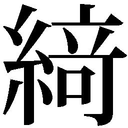譚集』、長篇であれば瞠目すべき幻想純文学『ペニス』、音楽青春小説『ブラバン』、現代ＳＦの最先端を切り拓く『バレエ・メカニック』など、数々の傑作を送り出してきているのに、作品のクォリティにふさわしい評価を得ているとはいいがたい。こと文学賞に関するかぎり、驚くべきことに（呆れたことに？）津原泰水は二〇一一年までずっと無冠だったのである。
その津原泰水に初めて冠をもたらしたのが、この『11 eleven』だった。二〇一二年二月、本書は第二回 Twitter 文学賞を受賞した。この賞は、読者が一年間に読んだすべての小説の中で、いちばんよかったと思うものを国内国外それぞれ一冊だけ選んで Twitter 上で投票、その数を集計して順位を決める（Twitter のアカウントがあればだれでも投票できる）。初めて戴冠した文学賞が、作家が選ぶ賞でも書店員が選ぶ賞でもなく、読者が選ぶ賞だったという事実は、津原泰水にとっては最大の勲章かもしれない。なにしろ、この賞の場合、投票できる本はたった一冊。一年間に読んだあまたの小説の中で、『11 eleven』が特別だと思う人がそれだけ多かったわけである。投票者の熱いコメントのいくつかは、今もネット上で読むことができる。いわく、「初出の一編ずつを読んだ時にはアッパーカットだったのが、11編揃うと大魔神に変身してボコボコにされた、そんな感じ」「11の作品のどれが一番好きだろうと考えたが、いつまでたっても決められないでいる」「私にとっては震災後、また小説（フィクション）を信じてもいいかも、と思えた作品です」などなど。そうした絶賛のとおり、本書に収められた短篇群は、いずれも忘れがたい印象を残す。
たとえば、巻頭の「五色の舟」を見てみよう。
「下駄屋に生まれたというくだんのために、僕らは一家総出で岩国に出向いた。もちろん買い取るためだ」という、冒頭のわずか五十文字足らずで、津原泰水はすでに読者の目を釘づけにする。
〝くだん〟（件）とは、牛の体に人の顔をした、半人半牛の（伝説上の）怪物。くだんは未来を予言し、その予言はかならず当たるという。
生まれつき両腕のない〝僕〟こと和郎をはじめとする五人は、仲睦まじい擬似家族を形成し、脱疽で両脚を失ったお父さんに率いられて、見世物一座として生計を立てている。一寸法師で怪力の昭助兄さん、腰から下が接合した二重胎児の生き残りの桜、膝関節が逆に曲がる〝牛女〟の清子さん......。
くだんと触れ合うことで、彼ら五人の運命は大きく変わる。そして小説は、思いがけない転調を経て、かぎりなく美しく切ない、最後の一行へとたどりつく。
キャサリン・ダン『異形の愛』の流れを汲むフリークス小説としても、戦時下の家族小説としても、妖怪くだんを描く伝奇小説としても、あるいは（ＳＦ用語をいっさい使わずに書いた）グレッグ・イーガンばりの量子論ＳＦとしてもすばらしい。
しかし、著者によれば、もともとこの作品の出発点は、くだんでもフリークスでも家族でも量子論でもなく、認識論（作中の言葉でいえば〝心の置きどころの問題〟）だったらしい。あなたが見ている現実と、わたしが見ている現実はまったく違っているかもしれない。現実を現実だと認識するのが脳である以上、脳内の現実を肯定すれば、それがもうひとつの世界になる。そのことを描くために、予言をかならず現実にするくだんが呼び出され、ふつうの人間とは違う現実を生きている五人に引き合わされたわけだ。その意味で、津原泰水の小説は徹底して理詰めで組み立てられている。
津原泰水の読者なら、著者がいかに意識的に作品を構築しているかは先刻ご承知だろう。テーマをもっとも効果的に表現するために、毎回、最適な形式が選び取られ、ゴールに向かって磨かれてゆく。あるいは、媒体によって形式的制約が課せられている場合には、その形式に合わせてもっとも光り輝く素材を探してくる。
聞くところによると、「五色の舟」がいまのかたちになるまでには、数々の没バージョン（神の視点から書いた三人称版とか）があり、単語ひとつひとつの選択にも尋常ならざる苦労をしたそうだから、論理と構造だけではなく、たゆまぬ努力のたまものだとも言える。そして、できあがった作品にその苦労のあとをいっさい残さないのも津原流。作品が完成した時には、まるでそれが最初から完璧なかたちでそこにあったかのように見えるのが特徴だ。
自作解題にもあるとおり、本篇は、大森が責任編集を担当するオリジナル・アンソロジー『ＮＯＶＡ』の第二巻に寄稿されたもの。タイトル候補の「ワンダー５」は、実在したダンス・ユニットとは関係なく、たぶん手塚治虫の漫画（およびそれを原作とするＴＶアニメ）、「Ｗ３」（ワンダースリー）が元ネタだろう。旅の仲間の物語という点は共通だが、「五色の舟」のＷ５は、ボッコ、プッコ、ノッコのように特権的な地位にあるわけではない（ちなみに「ワンダー５」というタイトル案を自分で提案して自分でボツにしたのは津原さんです。作家のいうことを信じてはいけません）。
この作品が、創元ＳＦ文庫『年刊日本ＳＦ傑作選 結晶銀河』に再録されたときに寄せた「著者のことば」に、津原泰水は以下のように書いている。
海の近くに生まれ、幼児期に家族と離れて育ち、船が好きで、なにかを創っている人たちが好きで、自分の親たちが背負ってきた歴史がどうしょうもなく悲しく......という、選んだでもない僕の運命が、そのまま反映された短篇だと思います。
作中人物たちが有する欠損は、どれも、たまたま見た目にわかるものですが、あらゆる人間、あらゆる生きものが、なにがしかの欠損を抱えているものです。他者の欠損への共感もまた、僕らにはもともと備わっています。それが残酷なかたちで表出することもありますが、存在を無視する傲慢に比べたら、よほど麗しいような気がします。そして傲慢な人ほど、おのれの欠損を「埋められるべき不幸」として過分にアピールするものです。
着想を得た自分を呪うほど書くのが苦しい作品があり、本作もまさにそれでした。だけど脂汗を流して書き紡ぐうち、描いている人々のことが好きで好きで、本当の家族のように思えて堪らなくなります。ここに僕の夢があった、とも気づきます。
その苦労の甲斐あって、日本ＳＦ短篇の（いや、日本の短篇小説の）オールタイムベストにも数えられるような傑作が誕生し、近藤ようこによる漫画化まで実現した（ビームコミックスより本書と相前後して単行本が発売される予定）。まちがいなく歴史に残る名品であり、短篇の名手・津原泰水の代表作ともいえるだろう。
......と、こんな調子で各篇のことを語っていると、枚数がいくらあっても足りないが、個人的な思い入れで書かせていただければ、本書収録作の中には、ぼくが初出媒体で読んで、その発想と質の高さに惚れ込み、（客観的にはまったくＳＦじゃないにもかかわらず）ＳＦの傑作選に再録させてもらった作品が二篇ある。
「延長コード」は、五年前に十七歳で家出した娘が死に、生前の娘が世話になっていた夫婦の家を訪ねた父親が、遺品として、電源用の延長コードを大量に渡される話。著者のコメントで、発想の原点がエクストリームアイロニングだと知って二度びっくり。海中アイロンからこの短篇を思いつく思考回路には脱帽するしかない。これを再録した『逃げゆく物語の話 ゼロ年代日本ＳＦベスト集成〈Ｆ〉』の「著者のことば」によれば、「読み切り連載や澁澤龍彥にまつわるエッセーなどと併行して、二週間足らずで仕上げ（中略）ちょっとした発明に成功したような達成感に満たされつつ、雑誌へと送ったきりになっていた短篇」だったという。
もう一篇の「土の枕」（『年刊日本ＳＦ傑作選 超弦領域』に再録）は、小作人の身代わりとなって日露戦争に出征した地主の息子の人生を描く（実話をもとにした）歴史小説。同書の解題に記したとおり、「ＳＦどころか、幻想小説的な要素さえ含まれていないが、魔術的な時間のコントロールによって、ジーン・ウルフ『ケルベロス第五の首』やクリストファー・プリースト『双生児』にも通じる眩暈の感覚を読者にもたらす。（中略）わずか十五ページの小品ながら、研ぎ澄まされた文章に膨大な物語が圧縮され、並みの長篇一冊分の広がりがある。あえて読む速度を落とし、じっくりと二読、三読することをおすすめしたい」。戦争文学としても希有な傑作だと思っていたところ、めでたく集英社『戦争×文学』全集に収録され、落ち着くべきところに落ち着いた。こんな傑作を埋もれさせるにはいかない、広く世に知らしめねば！ と妙な使命感にかられていたが、なんのことはない、見る人は見ていたのである。
そういう作品だけでなく、本書にはＳＦらしいＳＦも収録されている。シュールレアリスムとサイバーパンクを魔術的に融合させた幻想ＳＦの傑作『バレエ・メカニック』が「ベストＳＦ２００９」で第三位にランクインしたことを受け、ＳＦマガジン四月号恒例のベストＳＦ上位作家競作特集に寄稿した「テルミン嬢」は、正面から脳科学に挑み、現代ＳＦの最先端を切り拓く。ＳＦ専門誌に求められればＳＦ専門読者をも唸らせる先鋭的なＳＦを書けてしまうところが津原泰水の天才たるゆえんか。
その他、視界の隅に浮かぶ妻の顔が次第に接近してくる比類ない恐怖小説「微笑面・改」や、代々おなじ名前をつけてグレート・デンを飼いつづける女性の物語「クラーケン」など、語るべき作品はまだまだあるが、すでに与えられた枚数を大幅に超過している。
津原泰水にして初めて実現し得た奇跡的な品質を誇る短篇集が（創元推理文庫の『譚集』ともども）末永く読み継がれることを心から祈りたい。
〈津原泰水単独著書一覧〉
『妖都』97年11月 講談社（→講談社文庫）
『蘆屋家の崩壊』99年６月 集英社（→集英社文庫→ちくま文庫）※幽明志怪シリーズ
『ペニス』01年３月 双葉社（→双葉文庫）
『少年トレチア』02年２月 講談社（→集英社文庫）
『ルピナス探偵団の当惑』04年３月 原書房（→創元推理文庫）
『譚集』04年８月 集英社（→創元推理文庫）
『アクアポリスＱ』05年１月 朝日新聞社
『赤い竪琴』05年１月 集英社（→創元推理文庫）
『悪い男』05年５月 バジリコ ※キム・ギドク監督の同名映画のノベライズ
『ブラバン』06年９月 バジリコ（→新潮文庫）
『ピカルディの薔薇』06年11月 集英社（→ちくま文庫）※幽明志怪シリーズ
『ルピナス探偵団の憂愁』07年12月 東京創元社（→創元推理文庫）
『たまさか人形堂物語』09年１月 文藝春秋（→文春文庫）
『バレエ・メカニック』09年９月 早川書房（→ハヤカワ文庫ＪＡ）
『琉璃玉の耳輪』10年９月 河出書房新社（→河出文庫） ※尾崎翠原案
『11 eleven』11年６月 河出書房新社（→河出文庫） ※本書
『猫ノ眼時計』12年７月 筑摩書房 ※幽明志怪シリーズ
『爛漫たる爛漫 クロニクル・アラウンド・ザ・クロック』12年11月 新潮文庫
『廻旋する夏空 クロニクル・アラウンド・ザ・クロックⅡ』13年１月 新潮文庫
『たまさか人形堂それから』13年５月 文藝春秋
『読み解かれるＤ クロニクル・アラウンド・ザ・クロックⅢ』14年１月 新潮文庫
（翻訳家・書評家）
＊本書は二〇一一年六月、単行本として弊社より刊行されました。
初 出
五色の舟 『ＮＯＶＡ２』（書き下し日本ＳＦコレクション）河出書房新社／二〇一〇年七月
『結晶銀河』（年刊日本ＳＦ傑作選）大森望・日下三蔵＝編／東京創元社／二〇一一年七月
延長コード 「小説すばる」集英社／二〇〇七年六月
『逃げゆく物語の話』（ゼロ年代日本ＳＦベスト集成〈Ｆ〉）大森望＝編／東京創元社（創元ＳＦ文庫）／二〇一〇年一〇月
追ってくる少年「小説すばる」集英社／二〇〇六年一月
微笑面・改 書下ろし
琥珀みがき 朗読会のための書下ろし／二〇〇五年一二月
「小説すばる」集英社／二〇〇六年三月
『短篇ベストコレクション─現代の小説２００７』徳間書店（徳間文庫）／二〇〇七年六月
キリノ 「小説新潮 別冊 桐野夏生スペシャル」新潮社／二〇〇五年九月
手 「小説ｎｏｎ」祥伝社／一九九九年六月
クラーケン 「小説すばる」集英社／二〇〇七年二月
ＹＹとその身幹「ユリイカ」青土社／二〇〇五年五月
テルミン嬢 「ＳＦが読みたい！」早川書房／二〇一〇年三月
土の枕 「小説すばる」集英社／二〇〇八年四月
『超弦領域』（年刊日本ＳＦ傑作選）大森望・日下三蔵＝編／東京創元社／二〇〇九年六月
『日清日露の戦争』（コレクション 戦争×文学６）／集英社／二〇一一年一〇月
津原泰水（つはら・やすみ）
１９６４年広島市に生まれる。青山学院大学卒業。少女小説家〝津原やすみ〟としての活動を経て、97年に現名義で『妖都』を発表。幻想小説家として本格的に活動を始める。２００６年に刊行された『ブラバン』はベストセラーに。また09年『バレエ・メカニック』、11年『11』（第２回Ｔｗｉｔｔｅｒ文学賞受賞）は、各種ランキングを席巻した。他の著書に『ペニス』『少年トレチア』『譚集』『赤い竪琴』など、またシリーズ作品としては〈幽明志怪〉〈ルピナス探偵団〉〈クロニクル・アラウンド・ザ・クロック〉などがある。
eleven
11
発行日 ２０１５年８月20日
著 者 津原泰水
扉レイアウト 鳥羽彌生
人形写真 後藤秀信
発行者 小野寺優
発行所 株式会社河出書房新社
〒１５１－００５１
東京都渋谷区千駄ヶ谷２－32－２
この電子書籍は、『11 eleven（２０１５年５月20日３刷発行）』に基づいて制作されました。